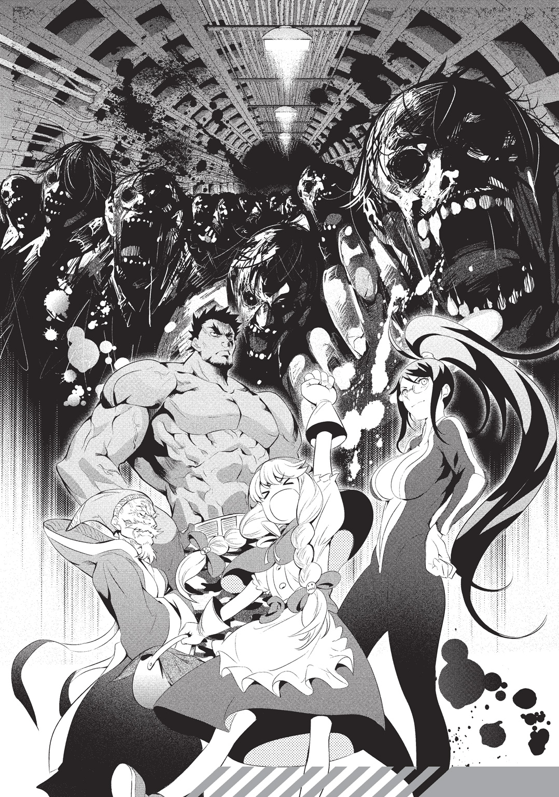

| 丸ノ内 OF THE DEAD | |
| ぞんちょ | |

この本は縦書きでレイアウトされています。
また、ご覧になる機種により、表示の差が認められることがあります。
糞尿に脂を混ぜこんだような臭い。
鉄錆を思わせる臭い。
消化液に蒸れた汗の臭い。
耐え難い悪臭は途切れることなく、執拗に鼻をなぶる。
ずちゃ......り......
薄暗い工場の中に反響する、湿った肉を引きずる音。怪物の足音。近い。
「お兄ちゃん......」
弱々しい声をあげる妹を、少年は力一杯抱きしめた。
ブゥゥゥ......と重たい稼働音をたてる機械に背中を預け、座りこむ。
体の震えが止まらない。これは妹の震えが伝わっているのか、それとも機械の振動なのか......決して自分の震えではない。それを認めてしまえば、きっと何かが折れてしまう。
「カナは、絶対に......兄ちゃんが守ってやるからな」
腕の中で何度も頷く妹の頭を、優しくなでてやる。
父の命令に従ってここに来たことを、少年は後悔していた。絶対に地上を出歩いちゃいけないって、昔から何度も何度も、しつこく言われていたのに。
先週、十一歳の誕生日を迎えたことで強気になってしまったのか。それとも、そう禁じたのが、ずっと昔に兄妹を捨てて逃げた母だったから反抗したくなったのか。
そんなことはもう、どうでもよかった。妹が心配して様子を見にきた時点で、地下に引き返すべきだった。地上がこんな地獄だと知っていれば、絶対にそうしたのに。
堪えきれずに頰を伝った涙は、恐怖のせいか、後悔のせいか。少年にはわからなかった。
べちゃっ......
足音が近づいてきた。すぐそこまで。
怪物は気づいている。ここに獲物がいることに。体臭か、呼気か、怯える気配か。人間よりもかに研ぎ澄まされた五感が隠れた獲物を促え、嘲笑っている。
座ったままじっとしているのも、もう限界だった。
頭上に影が差す。
咄嗟に上を向いてしまった妹が、甲高い悲鳴をあげた。
「こ――このっ！」
拳を握り締め、勢いよく立ちあがった――瞬間、
閃光が瞬き、目の前が真っ白になった。
一瞬だけ、気を失っていたらしい。額をはたかれて、少年は目を開けた。
「やっほ。偉いね、お兄ちゃん。妹をかばってあげたんだ」
すぐ傍まで来ていたはずの怪物は、焦げた臭いだけを残して跡形もなく消えていた。代わりに女の人がいた。栗色の、長い髪のおねえさんが。思わず彼女の目をじっと見つめてしまった。キラキラした瞳は、父の仲間が見せびらかしてくる宝石のように透き通っていた。
「......綺麗」
妹がボソッと呟いた。きっと同じことを考えたんだと思う。立ちあがるのも忘れて、ずっと彼女の瞳ばかり見ていたから。
突然、地面が揺れた。地震かと思ったけど、揺れ方が断続的で、まるで......巨人が歩いているみたいだ。続いて金属を高速で磨り合わせるような、鋭い音が聞こえてきた。これは聞いたことがある。発電機の音に似て......ちがう。この音は......チェーンソウだ。
「おっ、やーっと来たわね。いい？ 何匹か残ってるみたいだから、ふたりとも外に出ないこと。ここでじっとしてんのよ？ 大丈夫。あたしにぜぇ――んぶ、任せなさいっ！」
言うが早いか、彼女は工場から飛び出していった。「任せろ」だなんて、ずいぶん久しぶりに聞いた気がする。どんな意味だったか、すぐには思い出せなかった。
「誰なんだろ、あのおねえさん......あ、カナっ！ 行っちゃ駄目だ！」
妹が彼女の後についていく。慌てて追いかけ、どうにか外に出る寸前でつかまえた。
「駄目だったら！ じっとしてるように言われただろ？」
「でもお兄ちゃん。あのおねえちゃん、すっごいよ」
「うん。すごかったね。すごくきれいな目をしてた」
「ちがうの。きれいなのはきれいだけど、ちがうの。すっごく......強いの」
「強い......えっ？」
妹が何を言っているのか理解できず戸惑ってしまったけど、すぐにその意味がわかった。外に出た彼女は、地下鉄への階段を目指す怪物相手に、両手で二丁の銃を連射していた。銃口から火花が散り、閃光が奴らを射貫く。気絶する寸前、視界を覆った光はあれだったのだ。
そして怪物の前に――おおよそ大人ふたり分。高さ三、四メートルはありそうな――鉄の巨人が立ちはだかっていた。二足歩行のカエルを思わせる外見。見た目の割にその動きは機敏で、チェーンソウを一薙ぎするたび、怪物が寸断されていく。
啞然とする横で、妹が拍手しはじめた。歓声まであげている。ついには独楽のように回りはじめた鉄の巨人はさっぱり理解できないけど......
（カナが笑ってくれるなら......いい、のかな）
少年も妹を倣って、手を叩いて声援を送ることにした。
二分とかからず、あたりに静けさが戻ってきた。残る怪物は......あと一体だ。
「そいつで最後みたいね。さあっ、ズビシ――ッと決めちゃって！」
彼女の声に青年（驚くことに、鉄の巨人の中には人が乗っていた）が頷き返す。
吼え猛るチェーンソウが突き出され、怪物の胸を貫いた。そのまま真っ二つに――
「ごめん、刃詰まりしたみたいだ」
真っ二つになる寸前、チェーンソウから異音が響いた。ズビシ――ッと奇怪な音をたてて、怪物の体が内側からはじけたみたいに四散する。
咄嗟に妹を抱き寄せ、機械の陰に身を隠したから害はなかったが、そっ......と外を窺うと、鉄の巨人は汚物にまみれていた。同様に、彼女も全身から汚物を滴らせていて、傍から見てわかるほど肩がプルプルしている。
「............ねえ。ナニかやり残したことがあるなら、今のうちに済ませたほうがいいわよ。すこしぐらいならあたしも我慢できると思うの。そーね、十秒ぐらいなら......」
「............」
ずいぶんと冷たい言葉を受け、青年は数秒だけ固まり......手元で、何か操作したようだった。途端、わっしゃわっしゃとワイパーが動きだし、洗浄液が汚物を洗い流した。瞬く間に本来の銅色が蘇ってくる。満足したんだろう。たぶん。彼はグッと親指を立ててみせた。
「......自分だけ綺麗にサッパリしたわけね。おめでとう。んで、ナニ。あたしは？ 水も滴るナントヤラっていうけど、これ、滴ってんの臓物的なアレよね。どう、似合う？」
「もちろん。何が滴ってても似合うと思うよ」
「そーなのね。ありがと。その言葉を胸に刻んでおけば、これからはひとりでも生きていけそうな気がする。さあ。鮮烈な別れにするために、いっちょ自爆とかしてちょーだい」
「思い出の作り方が過激だなぁ......」
狼狽える彼に、犬歯を剝き出して唸る彼女。しばらく不毛に言い争っていたが――
「フフっ......」
割って入る声。あたりを見回すと、カナが俯いて震えていた。具合が悪くなったのか。まさか怪物の血に触れたんじゃ――一瞬、絶望的な光景が脳裏をかすめたが、杞憂だった。
妹はお腹を抱えて笑いだしたのだ。爆笑といっていい。肩をつかんでいなければ、床を転がり回っただろう。こんなに楽しそうに笑う妹を見るのは久しぶり......いや、もしかしたら初めてかもしれない。突然の出来事に、言い争っていたふたりもきょとんとしていた。
「あはっ......ははははっ！」
つい、つられて笑ってしまう。ふたりのやり取りもそうだが、なにより、カナが笑っているのが嬉しかった。あんなに怖い思いをしていたのが、まるで夢みたいだ。
ところが――
「俊っ、こンの愚図ガキがァ！ 水の回収だけで何時間かけてやがンだ!?」
笑いがぴたりと止まる。にわかに人の気配が濃くなった。粘りつく陰鬱な空気。いつの間にか大人たちが数人、地下から出てきていた。黒いゴム質のスーツを纏う姿は怪物じみていて、たちこめる緊張と暴力の臭いは、さっきの怪物と同じくらい危ない感じがした。
「ンだ、このデカブツは......誰か乗ってんのか？ おっ、ネーちゃんは知らねェ顔だな」
大人たちのひとりがにやにやしながら口を開く。
「ずいぶん汚れてるみてェだが、なんなら洗ってくかい。そこのビルで水を蒸留してんだよ。うちの水は安くねェが......そうだな。ついでに、俺たちの背中でも流してくれりゃいい」
そう言って互いに目配せすると、下品な笑い声をあげた。
妹の肩を抱き寄せると、小刻みな震えが伝わってきた。さっきまで笑っていたのに......妹を怯えさせる大人たちに、射るような視線を向ける。いつもならそれだけで頰を張られるところだが、今はこちらに見向きもしない。全員の目が彼女に注がれていた。
全身を舐めるような視線を浴びて、彼女は舌打ちした。疎ましげに曇った瞳に宝石の輝きは既になく、うるさい蠅を見る目になっていた。
感情の乏しい青年も嫌悪を露わにし、鉄の巨人を前に進ませる。しかし、彼女はそれを制して、地面に転がっていた鉄パイプを手にとった。
「はーい、今からスプーン曲げのすごいやつやりまーす」
彼女の宣言を耳にしても、大人たちは下卑た表情を崩さなかった。だけど次の瞬間――少年と妹を含め、全員がぽかんと口を開けることになる。
鉄パイプの両端をつかんだ彼女は、それを『の』の字に曲げてしまったのだ。
飴でも捏ねるみたいにぐにゃりと。いとも容易く。
「次は人の腕を曲げちゃいけない方向に曲げまーす」
そう言われてにやつく者はさすがにおらず、大人たちは蜘蛛の子を散らすように地下に逃げ帰っていった。それでもまだ未練たらしく残っている者もいたが、彼女が大股でずかずか近づくと、慌てて逃げ出した。
「その加齢臭引っこめてから出直してきなさい、バァーカっ！」
べーっ、と舌を出す彼女に向けて、妹は再びきゃっきゃとはしゃぎだした。拍手の音は妹だけでなく、鉄の巨人からも聞こえてきた。気づけば、少年も同じように手を叩いていた。
少年は――今度はつられてではなく、自然と――大きな声をあげて、笑いだした。
巨大なチェーンソウがシャッター相手に激しく火花を散らしている。大人の身の丈ほどもあるそれを操っているのは、ずんぐりとしたシルエットの鉄塊だ。
球状の胴体の背中には水筒ほどの小さな筒から一斗缶らしきものまで、大小様々な金属製の容器がつけられていた。とくに目を惹くのはケーブルや銅管、チューブが複雑に絡み合う二対の巨大なジェネレーターで、先端の丸味を帯びた細長い形状は弾丸とよく似ている。錆の浮くそれらを背負子のように背負う姿はいやに不均衡な印象を与えるが、鳥類を想起する逆関節型の両脚が、重たげにスチームを噴き出しながらも、見事にバランスを保っていた。
上半身は半球状の分厚いガラスで覆われており、その中にはひとりの青年が座っていた。
ぼさぼさの黒髪。への字に結んだ口に、眠たそうな目。着ているシャツはよれよれだ。ズボンはサスペンダーの助けがなければ今にも腰からずり落ちてしまうだろう。
鉄塊は彼が操作しているらしく、床から伸びるレバーを動かす手は忙しない。比べて、もう一方の手は緩慢な動きで手元のスナック菓子を口に運んでいた。ビターチョコレートでコーティングされたそれは彼の好みではないらしく、苦そうに顔をしかめる。
「それで――あのヨツ――子は元――たの？」
彼の――結城弾正の声はチェーンソウの駆動音に搔き消されて、ガラスの外には切れぎれにしか届かない。
「ぜん――ぜんっ、聞こえないわよ」
鉄塊から少し離れた位置で、倒れた棚に腰掛ける少女が応えた。
大胆に露出した胸元とお腹から、白い肌が覗いている。最小限の肌だけ隠すことができれば満足なのか、着ている服はどちらかというと水着に近く、スカートも驚くほど短い。栗色に輝く長髪は座っていると床まで届きそうだ。

大きな瞳を弾正のほうに向けようともせず、手にした二丁の銃をいろいろな角度から眺めている。顔の動きに合わせて、頭のリボンがひょこひょこと揺れた。
弾正は菓子の最後の一粒を口に含むと、操縦席のモニターを覆うゴミをのろのろと片づけはじめた。片づけると言うより、足下に払い落とすと言ったほうが正しいか。
ようやく顔を出したモニターを指でつつく。
「それで、あのヨツヤの子は元気だったの？」
途端に弾正の声が大きくなった。
「またそうやって......ヨツヤの子だなんて、つれない呼び方しないの。俊くんとカナちゃん、ねっ......んー、まあ、元気だったわよ。俊くんは......ちょっと心配だけど」
「ふーん。相変わらずその子たち......っていうか、子供好きだよね。アイラって」
スピーカーから聞こえる弾正の声にノイズが混じる。
その音が苦手なのか、アイラと呼ばれた少女は細い眉をハの字に下げた。
「そりゃそーでしょうよ。こんな世界だもの。子供たちこそ未来への象徴、ってね」
「そう。ぼくは嫌いだな、子供......なに考えてるかわかんないし。違う生き物みたいだ」
「子供嫌いじゃなくて人間嫌いの間違いでしょ。今回も情報をくれたんだから、文句言わずに感謝なさいよ。ガセじゃなきゃ、その向こうにはお宝がギッシリってわけ」
「子供が情報......ねえ」
「心配しなくても、ふたりとも子供とは思えないぐらいしっかりしてるから。ダンジョーよりよっぽど大人よ。半年前に助けてあげたこと、未だに覚えてる......ぐらい......だし」
ぬうぅ......と唸ってから、アイラが言葉を続ける。
「あの日の臭い、思い出しちゃった......体中から内臓の臭いがむわぁ......って。またトラウマが蘇ったじゃない。どーしてくれんの。お詫びの一発芸があるなら見てあげるけど。三十分間息を止めてみるとか、自爆してみるとか。うん。ちょっと自爆してみる？」
「また今度ね。それよりも、なんでヨツヤの子......俊はここを知ってたのさ。ヨツヤからずいぶん離れてるし、シャッターは溶接済みときた。中なんて確認しようがないだろ」
「物資の交換会、ヨツヤの担当は俊くんらしいから、そこで聞いたんじゃない？ わざわざこんな場所まで来る人なんていないでしょうし、安値の情報だったのかも」
「中身も安かったりしてね」
喋っている間に、チェーンソウの刃は床ぎりぎりまで下りていた。シャッターの切れ目が赤々と熱を発している。
「さて。実は全部噓の情報で、中は手錠と檻だけの鉄臭い部屋だったらどうしようか」
「飼うなら犬がいいかも。前にオギクボで飼われてるのを見たことがあるのよ。よぼよぼだったけどそれがまた可愛いっていうか」
「そうかい」素っ気ない相槌を打ってから、弾正は再びモニターにタッチした。
直径一メートルほどの球状をした肩部装甲が、潤滑油不足を訴えるように軋む。チェーンソウが胴体へと収納され、忙しない換装の音が内部から漏れてくる。
さして時間もかからず、新たに三つ叉のアームが飛びだしてきた。
具合を確かめるようにアームの先端を曲げてみる......いつもどおりだ。問題ない。
腰をあげたアイラがホルスターに銃を収めるのを肩越しに見ながら、シャッターを押し倒しにかかる。銀板がたわみ、ゆっくりと向こう側に倒れていく。
甲高い金属音が響くと同時に、暗い室内に大量の粉塵が舞いあがった。それを嫌ってか、アイラがさっと後ろに下がる。
「あー......ゴメン、この埃の量は無理。きっと吸ったら死んじゃう。ちゅーわけで――」
ひとりでガンバ！ とでも言いたげなサインを両手で作るアイラを尻目に、弾正はシャッターに空いた穴へと鉄塊を進ませた。
中は暗く、よく見えない。照明をつけようとしたが、歩いた振動でゴミが崩れて、またもやモニターを覆っていた。あらためて足下に払い落としながら、暗闇に目をこらす。
（......大丈夫、何もいない）
耳をすませる。鉄塊のアイドリング音しか聞こえない。
ようやく探り当てた照明ボタンを押すと、鉄塊の両肩部分から光が放たれ、室内が明々と照らされた。
「これは......すごいな。大当たりだ」
弾正の唇から下手くそな口笛がもれた。
その部屋に立ち並ぶ棚には、手つかずの菓子袋が所狭しと詰められていた。
彼にとって、それこそが何よりのお宝だった。
＊
弾正がボルテンと名づけた鉄塊は、元は深海探索用の潜水艇だった。
二足歩行ができるように改造したのは、今は亡き彼の父親だ。
父が目指したのは移動できる住居で――二畳もないスペースを住居と呼べるかどうかは父には関係なく――必要なのは完全防水。さらに、願わくば宇宙空間でさえ生存できるように。様々な工具を自在に操る結合肢を取りつけたのもそのためだ。
父がボルテンの操縦席に弾正を座らせたのは、彼がまだ五歳のときだった。
以来十二年間、弾正はボルテンの外に出たことがなかった。
劣悪な環境だが、弾正に不満はない。ボルテンから出た自分を思い描くことはあるが、すべて想像に留める。実行する気なんて毛ほどもない。監禁と言ってさしつかえない父の行動だったが、ボルテンの力なしで生きるには、この世界はあまりにも過酷だった――
棚と棚の間隔が狭く、ボルテンは通れそうにない。
弾正は棚の脇にボルテンを停めると、その場で菓子袋に視線を巡らせた。
（アレはここには置いてない、のかな）
一抹の落胆。せめてアイラが見に行った棚にあればいいのだが。
と思って肩を落としたとき――
「よい子のみんなぁ！ ちゅうもぉ――くっ！」
子供の耳によく通るであろう、優しそうな青年の声が聞こえてきた。
「ちゃんと野菜は食べてるかな!? えっ、ピーマンが苦い？ カボチャが硬い？ ぶっちゃけまずい？ 我が儘だなあ......でも、もう大丈夫！ この山菜スナックがあればね！」
クラッカーが割れる音に続き、ファンファーレが響く。
「この山菜スナックには山で採れる野菜の栄養がぎっしり詰まってるんだ！ そぉれっ、身長ノビノビ、脳みそシワシワ、筋肉ムキムキ、山菜スナック！ 山菜スナック！」
ご機嫌なリズムを口にしながら、棚の向こうからアイラが出てきた。両手には溢れんばかりの菓子袋。銘柄はすべて同じ、山菜スナックだ。
「ポポーン。注意。栄養が偏らないよう、本物の野菜もしっかり食べましょう」
アラームが鳴り、アイラの声が抑揚のない女性のものへとうって変わる。
青年の声から続く一連の音は、すべてアイラの口から発されたものだった。
十数年前、スナック業界を震撼させた（毒々しい緑色のパッケージが話題を呼んだが、売りあげはイマイチだったらしい）山菜スナックのコマーシャル。手つかずの食料保存庫で山菜スナックを見つけた場合、アイラは必ずこれを口ずさむ。幼き日の彼女が日本語を覚えるため、観ていた映像に含まれていたのだろう。
子供のころ――ボルテンに乗せられる前、まだテレビ放送が生きていた時分。このコマーシャルに夢中になり、山菜スナックの虜となった。台詞や歌詞は今でも暗唱できる。だが、彼女の場合は暗唱ではない。完全なる再現だ。
とまれ、今はそんなことより――
弾正の喉元がゴクリと波打ち、腹がぐうぅと鳴いた。
「おっ。さっそく反応したわね食いしん坊。さあ、早くこの子の口を開けて。ほれほれっ」
「あいあい」
いつもの声に戻った彼女に促され、モニターにタッチする。ベーッと音をたててボルテンの腹部が開口した。アイラが菓子を三袋ほど詰めたところで、再び腹部が閉ざされる。
外部との唯一の接触手段である腹部は電子レンジを元に造られていて、外と中では同時に蓋が開かないようになっていた。主に殺菌消毒のためだが、そこで物資のやり取りをするたび、弾正は刑務所の荷物受け渡しを連想した。本で読んだだけなのだが、囚われた犯罪者は昔、同じような方法でやり取りしていたらしい。
きっかり十秒後、ゴミまみれの操縦席に山菜スナックの袋が吐き出された。触るとほのかに温かい。賞味期限は十年ほど前の日付だったが、まったく気にせず袋を破く。片手でつかめる限りのスナックをつかみ、一口に頰張る。
「ンまい」
両頰をリスのように膨らませながら、ばりばりと咀嚼する弾正の姿を、アイラは奇怪な昆虫を見るような目で見つめた。
「前から思ってたんだけど、山菜スナックって山菜を揚げたスナック菓子ってことでしょ。要は草よね、草。ダンジョーも地下で栽培してみるとか。だめなの？」
「栽培しようにも土が貴重だしなあ。あんまり気軽に入手できないんじゃ、意味ないだろ」
「シンコーエンジの野村さん、ナンか育ててたわよ。お手伝いして貰ってきたら？」
「あれは芋だろ。しかもとびきり臭い。そもそも、揚げるための油がないしさ」
「............油、ね」
食事を続けていた弾正の手がピタ、と止まる。アイラの呟いた声は無機質な音のようで、ひどく冷たかった。長いこと一緒にいるおかげで、彼女がそういった声になるときは、機嫌が悪くなったサインであることを弾正は知っていた。
菓子袋を持つアイラの指に力がこもる。中のスナックが砕ける音。
「落ち着きなよ。もったいない」
弾正は口の中のスナックを飲みこむと、もう一度ボルテンの腹部を開いた。
アイラは何か言いたげな素振りを見せたが、結局何も言わずに山菜スナックの袋を詰めていき――何度か繰り返すうちに、操縦席の床は緑色の袋でいっぱいになった。
「ほいじゃま、収穫もあったし、隠れ家に帰るとしようか」
その場でボルテンを転回させ、弾正は自分が開けた穴から出ていった。
貯蔵庫にひとり残されたアイラはじっとその穴を見つめ、
「この世界にいい油なんて存在しない。もしかしたらなんて想像することさえ無駄なの。......それぐらいダンジョーだってわかってるでしょ」
声の調子は戻っていたが、ついたため息は冷たいままだった。
＊
湾岸沿いに造られた工業地帯の一角――貯蔵庫がある場所だ。ここから隠れ家に帰るには、ボルテンの足でも小一時間かかる。
入口まで戻ってきた弾正はボルテンのエンジンを切り、外の様子を窺った。鉛のような雲が厚く空を覆い、昼だというのに陰鬱な景色が広がっている。
遠くで雷鳴が轟いていたが、それ以外は静かなものだ。
座りっぱなしで痛くなってきた尻を動かすと、衣擦れの音がやけに大きく聞こえた。
「外は大丈夫みたいね」
いつの間にか追いついていたアイラがボルテンの背中をよじ登り、球状の肩部装甲に移ってぺたんと座りこんだ。ふたりで移動するとき、そこが彼女の定位置だ。すこしの揺れでずり落ちそうなものだが、彼女の平衡感覚をもってすれば造作もないようで、むしろ丸いほうが膝で締めることができて安定するらしい。
踏ん張りのきく位置に納まったらしく、コンコン、と軽くガラスが叩かれる。
頷き返そうとしたとき、ガァ......ガガァ......と、排水パイプを詰まらせたような耳障りな音が聞こえてきた。聞き覚えのある音だった。聞く者の不安をかき立て、恐怖を与える音。
唸り声だ。
声はすぐに数を増し、瞬く間に合唱がはじまった。忌まわしい合唱に、弾正が拍手ではなく舌打ちで応じる。
「......どうする？」
アイラに尋ねる。ここから出るか、それとも待つか。
「雷が鳴ってる。聞こえるでしょ」
「このあたりじゃないよ」
「ううん、きっと雨が降る。だから奴らも出てきたのよ」
言うが早いか、アイラはボルテンから降りると、後ろに回った。
ホルスターから銃を抜いて、ボルテンの腰から出ているケーブルを銃把の底に差しこむ。カチャリと小気味よい音がした。続けてもう一丁、そちらの銃は一回り小さい。
彼女の二丁の銃が、細いケーブルを通じてボルテンと繫がった。
「行くわよ。食事が必要なのはダンジョーだけじゃないんだから。ちゃっちゃと今週のざっくりぼっこりメカを出してちょーだい。今回はナニ？ チェーンソウ？ ボウガン？」
「......チェーンソウで」
再びアイラがガラスを叩くのと同時に、弾正はボルテンのエンジンを回した。
ドゥルンッ!! と腹の底を揺るがす重低音が響く。
外へ飛び出した途端、あたりの唸り声がさらに大きくなった。見回すまでもない。奴らはそこら中にいた。黒ずんだシートの切れ端がたなびく廃ビルや、割れた板張りが覗く窓、トタンで補強されたフェンスの隙間、野晒しの瓦礫の下からぞろぞろと出てくる。
黒く糜爛した皮膚に、白濁した瞳。大きく開けた口に、灰色の唾液が糸をひいている。ある者は腕がもげ、脚は関節を無視した箇所で曲がっている。裂けた腹からは黄土色の臓器がこぼれ、頭は陥没し、脱穀した米の形を連想させる。
怪物どもはゆらゆらと左右に揺れながら、意思のある動きをみせた。こちらを取り囲もうとしている。
奴らは、生ける死者だ。
獣のように唸ってはいるが、人だったころの面影がすこし残っている。だからといって手心を加えるつもりは毛頭なかった。
ボルテンのチェーンソウが咆哮する。
「――――ッ！」
その場で旋回。近くにいた死者の首が飛び、黒い飛沫が散った。
数秒回り続けたところで回転の勢いを落とすが――死者の数はあまり減っていない。
ブァァアアァ......
地面に転がった仲間の頭を踏みつけて、唸る死者たちがにじり寄ってくる。
手前にいる死者の顔面にチェーンソウを突き刺し、股まで一直線に切り裂く。カーテンを裂くような音とともに、体が左右に倒れた。ぬらぬらとした赤黒い大腸がこぼれ出て、とぐろを巻く。
構え直したチェーンソウには、死者の皮が破れた風船みたいに絡まっていた。
突然――ガン！ ガン！ と強めにガラスが叩かれた。
撒き散らした内臓から湧きあがる腐臭のせいか。それとも勢いよく回ったせいか。肩に座るアイラが真っ青な顔で口元を押さえていた。
「吐くなら......あとでね。ボルテンにかかる」
チェーンソウを一閃して死者の切れ端を払い、武器を引っこめる。
新たにボルテンから飛び出したのは金砕棒だ。
鋲の生えたバットのようなそれを、すぐさま袈裟懸けに振り下ろす。
ブォン!! と風切り音を立てて、先端についた鉄製のスパイクが死者の脳髄を削り取った。続けざま、止まることなく金砕棒を振り回す。
腐乱した死者たちの体は潰れるのではなく、豆腐のように簡単にえぐれていった。
ガン！ ガン！ と再びガラスが叩かれる。
「だから吐くならあとに......」
アイラに言う――が、彼女ではなかった。
建物の屋上から降ってきたのか、ガラスの天辺に死者が一体貼りついていた。
落下の衝撃で砕けたらしく下半身がなくなっている。下から見あげると不健康そうな色の臓器が丸見えだった。
「んンっ......!? アイラ！」
肩に座ったままであろう彼女に叫ぶ。
「上は無理だ、アームが届かない！ どうにかして――」
内心の焦りを隠すことなく口にした途端――
轟音とともに視界が白光に包まれた。思わずレバーを放して耳を塞ぐ。
光はすぐに収まったが、ガラスが、ボルテンが、空気がビリビリと振動していた。
耳鳴りが続くなか、バチバチと火花の爆ぜる音が届く。
アイラが銃を空に向けていた。
「次、また勝手に変な踊りをしたら――」
すっ、と銃口を下げてボルテンを指し、
「こいつらの内臓でこの子をデコるわよ」
銃身からバチンッ！ と青白い火花が散った。
こくこくと、阿呆みたいに頷く。
見あげると、ガラスに貼りついていた死者の姿は既になく、燃え滓が残っているだけだった。
「さて......っと」アイラはボルテンの肩から降りると、
「ダンジョーに任せても、ナンかもうあれね。いろいろ飛び散ってグロいだけなのよね。数も全然減ってないし。いったいどんだけ仕留めたのよ」
「五体......かな」
「えっ、あは、うそ。ごめんよく聞こえなかったんだけど。五体？ いま五体って言ったの？ まっさかねー、あんだけ派手に踊っといて、それっぽっちなわけないわよね。数え間違えた？ 男の死体は数えないとか？ 女の死体しか狙わんぜうへへみたいなっ!?」
「そんなこと言わないし、思ったこともないって」
「そう？ あっ、思春期っぽい衝動をこいつらで発散するとかやめてよ。絶交するから」
「気をつけるよ」
淡白に頷く弾正を無視して、アイラはいち、にー、さん――と、取り囲む死者たちの数を銃口を向けつつ数えはじめた。十まで数えたところで、彼女はくすりと笑った。
「まだフル充電できてないけど、これならすこし減らせば大丈夫そうね。あとはあたしのドライヤー一号と二号にぜぇ――んぶ、任せなさい！ ダンジョーはそこでドーンと構えて、バリーッと雑草スナックでもかじってればいいから！」
「山菜ね」
弾正の訂正には応えず、アイラが銃把の底からケーブルを外す。
ケーブルがボルテンに収納されるよりも早く、彼女は駆けだしていた。
生ける死者に肉薄したアイラが体をひねる。
彼女の靴下を彩る紅白のストライプが残像となって軌跡を描く。強烈な回し蹴りが死者の側頭部に叩きつけられた。
頸椎が鈍い音をたてて折れる。
膝からくずおれた生ける死者は、たちまちただの死者となった。
「雑草も山菜も、どっちも草じゃない」
つまらなそうに呟き、アイラが二丁の銃を構えた。弾正は慌ててもう一度耳を塞ぐ。
本来、銃の排莢口があるべき部分につけられた円盤が回転をはじめた。
それは一種の発電装置だ。
すぐに放電がはじまり、眩い火花が円盤から銃身へ、銃身から銃口へと伝わっていく。銃全体から放たれはじめた火花が、彼女の陶磁器のように白い肌をいっそう白く染めた。
「同じよ、同じ。違いがあるってんなら教えてちょうだい......こんなふうにっ！」
引き金が引かれた。
彼女の言う〝違い〟――大きさの異なる二丁の銃は、それぞれの銃口から違う光を撃ち出した。マズルフラッシュではなく、本物の電光を。
小さな銃からは連続した破裂音が響き、いくつもの電光の弾が放たれた。実銃で例えるならば、短機関銃が近い。集弾性が悪く（この場合、集光性、か）揺れ動く死者の頭を狙うのは難しいようだが、無数の傷口が繫がり、手足が千切れれば奴らも倒れる。
そうして倒れた死者をアイラは見逃さず、確実に頭部を穿っていった。
もう一丁、大きい銃。これも実銃で威力を例えるなら――大砲。
轟音をたてて電撃の槍が一直線にのびる。それはもはや水平に奔る稲妻だ。
銃口を向けられていた死者の体が、泡のようにはじけ飛んだ。
電撃の槍は勢いを落とすことなく背後のビルに突き刺さり、水を撒くようにコンクリートの破片が散った。放射状に陥没した壁面から、オレンジ色に焼けた鉄骨が顔を覗かせる。
「お見事。いやもう、本当お見事」
拍手でも送ってやりたかったが、アイラが銃を構えている限り、耳から手をどけるわけにはいかない。まだ鼓膜とはお別れしたくなかった。
止まることなく立て続けに、電光の弾と電撃の槍が放たれる。
鳴り止まぬ轟音に、雷雲の中に放りこまれた気分になった。
この眩しさは何度目にしても慣れるものではない。弾正はぎゅっと目をつぶった。知らず、口からは悲鳴のような情けない声が漏れていた。
ようやく音と光の奔流が治まった。
ゆっくりと目を開く。周囲を取り囲んでいた死者たちは姿を消し、代わりに断面が炭化した腕や脚がごろごろ転がっている。それら枯れ木のような残骸の中心で、アイラが銃を握ったままの指で器用にＶサインを作っていた。
「どーよ。技の一号、力の二号。やるならこのぐらいスマートにやんなきゃ。ねっ？」
「......よく言うよ」
両手の銃からバチンバチンと火花を瞬かせながら、アイラは満足げに微笑んだ。
――その時だ。
アイラの背後で、アスファルトがメリメリと音をたてて隆起した。
そこから何かが飛び出す。腕――ピンク色の腕。それは異様な太さに見えた。すぐ近くに細身のアイラがいるからなおさらだ。大のおとなの胴ほどもある腕が地面に突き立つと、瞬く間に埋もれていた部分が姿を現した。
予想していなかった光景に思わず息を吞む。が、すぐにハッとして、
「アイラ、コープサーだ！」
弾正は叫んだ。
「えっ？」
怪訝そうな顔でアイラが振り向き――見あげる。
コープサーと呼ばれた獣は既に全身を露わにしていた。全身の皮膚を剝がれた類人猿のような肉体は、異常に肥大した筋肉に包まれ、筋繊維と同じ赤とピンクに染まっている。四メートルを超えるであろう巨軀は前傾し、四肢をついているにもかかわらず、ボルテンと同じかそれ以上にでかい。
盛りあがった僧帽筋から突き出た大きな頭が、目の前の獲物を観察するかのように斜めに傾ぐ。つり上がった目に浮かぶ濁った虹彩が彼女を捉え、眉のない眉間がひくひくと蠕動した。
にちゃっ......とねばついた音をたてながら口角が裂け広がり、ただの穴でしかない耳のあたりまで捲れあがった。突出した下顎から生える牙の間から、ヨダレの泡が滴り落ち、足下にぽつりと染みをつける。
「............あ」
声にならない呟きを漏らし、アイラが引き金を引く。......が、何もおこらない。うるさいほどに叫んでいた火花は、今や沈黙を是とし、静寂に味方していた。
「......はは、充電切れ......かも」
アイラが力なく笑う。
重なるようにコープサーが吼えた。
「ヴォォオオオアアアアァァァッ！」
それは生ける死者たちの唸り声とは違う、正真正銘、獣の咆哮だった。
「こっちに走って!!」
アイラに叫ぶと同時にボルテンのギアをあげる。コープサーの咆哮に劣らぬ爆音がエンジンから轟き、背中に生える二対のジェネレーターが赤熱する。
刹那、ボルテンが地を駆けた。
ずんぐりとした外見からは想像もつかないスピードだ。一歩地面を蹴るたび、アスファルトに蜘蛛の巣状の亀裂が走る。
「っ......」
驚きで固まっていたアイラも、一瞬遅れてその場から飛び退くように走りだした。
逃げるアイラを怪物は目で捉えるだけで、すぐには追撃しなかった。
怪物が地に伏せ、潰れたカエルのような姿勢をとる。その脚が異様な膨らみを見せた。脈打つ血管がビキビキと浮かび、ただでさえ太い脚が三倍ほどに膨れあがって――
爆発。
怪物が地面を蹴り、水平に跳躍した。
弾丸の如き勢いでアイラに迫る。
鎌のように湾曲した爪が彼女の背中に届く――
寸前、アイラは横っ跳びに飛んだ。
全力で疾駆するボルテンとコープサー――鉄の巨人と肉の怪物が、正面からまともにぶつかった。
装甲の欠片が飛び散り、肉がはじけ飛ぶ。
体が微塵に砕けてしまいそうな衝撃が弾正を襲った。息がつまる感覚。腰に回した安全ベルトが肉を削ぐように食いこみ、腹の中の菓子を吐き戻しそうになる。
「ぐぅ......っ」
喉から苦痛の声が漏れた。
だが、突進のダメージは向こうのほうが大きいようだ。
コープサーは体を大きく仰け反らせ、よろめいていた。
「こン、のっ」
すかさず金砕棒を振り下ろす。湿った土を打ち据えるような鈍い音がした。
「なっ......」
音はした――が、それまでだ。頭蓋を粉砕するつもりで振り下ろした金砕棒が、片手で受け止められていた。
弾正の目が丸くなる。
ぐぁぱあ......と大きく裂けた口から牙を剝き出しにして、怪物は嗤っていた。
金砕棒を戻そうとしたが、逆に引っ張られた。思わずたたらを踏む。ならばと反対側のアームを突き出すが、それもまたつかまれてしまった。
がっぷり四つに組み合う形で、両者は対峙した。
「っつ！」
全身全霊の力をこめてアクセルを踏みこむ。ボルテンの関節から白い蒸気が噴き出る。
ガラスを挟んで、忌まわしい獣の憎悪を宿した瞳が弾正に迫る。密林の猿のように吼えるたび、呼気でガラスが曇り、黄土色のヨダレが世界を汚した。
さらに顔が近づく。ボルテンが押されていた。全力でアクセルを踏んでいるにもかかわらず、思うように出力が働かない。
苛立つ弾正のこめかみから、つぅと汗が流れた。
「ちょっと邪魔するわよ」
頭上からアイラの声がした。
いつの間に上ったのか。揺れるガラスの上で腹這いになり、大きい方の銃を構えている。照準は暴れるコープサーの額に、ぴたりと合わされていた。
「あたしって冷静沈着がもっとーなのよ。クールビューティーってやつ？ だから、普段はあんまり驚くことってないのよね」
（どこがだよ......）そう言ってやりたかったが、少しでも気を抜くと、すぐさま押し倒されてしまいそうだった。
「だけどさっきの登場のしかたはなかなか......ちょびっと。うん。ほんのちょびっとだけど、ビックリしたわ」
銃の円盤が回転をはじめる。銃には再びボルテンのケーブルが接続されていた。
（どうりで出力が足りないと――思ったよ、電力泥棒っ！）
バチンバチンと青白い火花が瞬く。
「お詫びにあんたもたまげなさい。けっこう痛いわよ、これ」
無機質な音のような声でアイラがぽつりと呟き――至近距離での一撃が放たれた。
目の前に雷が落ちてきたようなものだ。爆発に似た衝撃に、目の奥で星がちらつく。
ふっ、と怪物の握力が消えると同時に、ボルテンは後ろに吹っ飛ばされた。
「ンっ!? うわぁああああぁぁ――――！」
「きっ......っきゃぁああぁぁあ――――！」
ふたりの悲鳴が重なる。
そのまま二転、三転と地面を転がり、仰向けの恰好でようやく止まった。球状のガラスの中で、カクテルのように攪拌されたゴミと菓子袋がバサバサと弾正の上に降ってくる。
「んんっ......んあぁ......」
呻きながら首をもたげる。コープサーは胸から上を消失させ、地面に突っ伏していた。脚がビクンビクンと痙攣している――が、それもすぐに収まり、もう二度と動きだす気配はなかった。
胸をなで下ろしたところで頭上に影がさした。アイラだ。
「ぅう......痛たたたた......どうにか、やったみたいね」
転倒する前にボルテンから飛び下りたらしく、痛いと嘆くわりにたいした怪我はなさそうだ。腰に手を当てているが、よく見るとお尻の埃をはたいているだけだった。
「誰が言ってたか忘れちゃったんだけど......」
うんざりした様子でコープサーの死骸を顎で示し、
「あいつらのことをすごくわかりやすい感じに例えてくれたことがあんのよ」
「ああ、ぼくも聞いたことあるかも、それ」
「立てばゴリラ」
「座ればゴリラ」
「「歩く姿はマジゴリラ」」
最後は二人で声を揃えた。
疲れたあ、と息を吐いてシートの背もたれに頭を預ける。同じようにぼやきながらアイラもガラスに寄りかかってきた。
主に頑張ったのは彼女とボルテンで、自分はレバーとアクセルを操作していただけなのに体が重い。血管に泥でも詰められた気分だ。もうこのまま静かに眠ってしまいたかった。
とはいえ、地上で眠るのはまずい。例え隣にアイラがいたとしても。
どうにかまぶたをくっつけまいと頑張っていると、
「にしても、さすがはあたしのドライヤー二号、ってね。さっきの一撃、点数をつけるなら何点くれる？ 百点が満点ってことでいいわよ」
アイラは百点を確信した笑みを浮かべ、腰の銃をピンっ、と指ではじいてみせた。
「〝あたしの〟じゃなくって〝ぼくたちの〟......ね。電力の供給元はボルテンだし、それを作ったのはぼくだ。出来映えは文句ないだろ？」
「んー、そりゃね。あたしは普通のドライヤーを作ってほしかったんだけど。なんで銃になっちゃうわけ？ 初めて使ったとき髪が焦げちゃったじゃない。しかも二回も」
「それは――いきなり作れってのが無茶なんだよ。なんとなしに作ったらそうなったんだ。別にいいだろ、ドライヤー三号は普通のドライヤーだったんだから」
「まーね。でもナニよ、急に自分の手柄を自慢しちゃって。五十点ずつ分けたいの？」
「いや、点数はいらない。全部あげるよ。その代わり......」
弾正がアクセルを軽く踏むと、ボルテンの足がじたばたと宙を搔いた。
「起こすの手伝ってくんない？」
「............」
アイラが死んだ虫を見るような目で弾正を見下ろした。
たっぷり五分。顔を真っ赤にしてボルテンを肩で押しあげてくれたアイラのおかげで、ようやく立つことができた。丸々としたボルテンは仰向けに倒れてしまうと、自分の力だけで起きあがることができず、人の手を借りるほかなかった。とはいえ、ボルテンは人の手で動かせるような重量ではない。普通の人の手では――
「さんきゅー」
「どうぅ......どういたしま......ま、まま、して......おえっぷ......」
立ちあがったボルテンの代わりにアイラがへなへなと座りこむ。ゼーッ......ハーッ......という激しい息づかいは、今にも口から何か産み出しそうですこし怖い。
「この子......何キロぐらい......あるんだっけ......」
「さあ？ 計ったことないけど、たぶんぼくも含めて五トンぐらいじゃないかな」
「あ......あたしより......重いじゃないのォ......ォォ」
「そりゃそうだ」
「ナニよォォ......ちょっとは......ダイエットしなさいよォォ......このごっついネジとか、一本ぐらいなくたっていいんじゃないのォ......同じの......いっぱいついてんじゃない」
「それがなくなると、ボルテンの踵がもげるんだけど」
踵の突起パーツをもぐつもりなのか（やめてくれ。マジで）へたったままのアイラが、極太のボルトをグーで殴りだしたとき――ガラスにぽつりと水滴がついた。
雨だ。
「......まずい」
弾正の顔に焦りが浮かぶ。急いで安全ベルトを外し、ガラスの内側をヤモリのようにぺたぺたと触って回った。先ほどの転倒で亀裂でも生じていようものなら、それですべて終わる。祈るような気持ちで調べていく。へたりこんでいるアイラもどこか心配そうだ。
手伝おうと彼女が腰をあげたとき、弾正がほっと息を吐いた。
「大丈夫。どこも割れてない」
ぎこちない笑み。二人の間で瞬時に高まった緊張感が、ふわりと弛緩した。
ぱらぱらと雨足が強まる。乾いたアスファルトの破片をひとつ、またひとつと雨粒が叩く。濡れた箇所がじわりと色濃くなるが、それはただ濡れて変色したと言うより、黒く染まっているように見えた。
ボルテンのガラスの表面を、互いに競い合うように雨粒が流れ落ちる。雨粒が流れた跡には黒い筋が残り、流れる雨粒自体もまた黒い。
それは、黒い雨だ。もっと正確に言うなら――
「油の雨......」
アイラが覇気のない声で呟き、天を仰いだ。そこから降りてくる何かを迎えるように、両手をゆるりと広げる。止む気配のない油の雨は容赦なく彼女を汚した。
髪に、顔に、胸に、腹に、太腿に。露出した肌にぽつぽつと黒い斑点ができあがる。
頰に落ちた油の雨が、顎を伝ってぽとりと胸に滴った。きめ細やかな肌を滑り、谷間に流れようとしたとき――ふっ、と油の色が薄くなり、すぐに澄んだ水玉へと姿を変えた。
同じ現象が彼女の全身でおこっていた。
ぎとぎとに絡まりはじめていた髪は鮮やかな栗色を取り戻し、黒く濡れそぼっていたスカートも水を吸って重たげではあるが、元に戻っている。
「ホント」
弛緩させていた指を、アイラがギュッと握り締める。
「油なんて、大っ嫌い......！」
数分前までのはしゃぎっぷりが噓のような、静かで、冷ややかな声だった。
＊
はじめて油の雨が観測されたのは十二年前のことだ。
理由はわからない。アメリカのテキサスにある人口二千人足らずの小さな村の上空に、ある日突然、小さな雲が発生した。墨を流しこんだような黒雲だった。そこから降ってきた雨を浴びた者は皆、ことごとく異常な行動をとった。
家族を、隣人を、同僚を、嚙み殺したのだ。
数名による偶発的殺人事件として扱われた事件は、二日目には連続殺人事件として近隣の新聞を飾り、三日目には大ニュースとなって世界中に波紋を呼んだ。
村の住民と連絡がとれなくなったのだ。二千人近い住民、全員と。
けれど、所詮は遠い異国の聞いたこともない村で起こった不可思議な現象。ほとんどの人が楽観視していた。あくまで蚊帳の外だ――と。
ところが、楽観的な世論はゆっくりと崩壊していく。
現地に向かった日本のマスコミ関係者までもが、全員連絡を絶ったのだ。
人々はようやく危機感を覚え、噂や憶測が広まった。物価はわずかに高騰の兆しを見せ、宗教家はここぞとばかりに、おおいに騒いだ。事故か事件か陰謀か――真相を知ろうにも、既にアメリカ全土の情報が一切入ってこなくなっていた。
やおらに浸透していくパニック。細菌テロの懸念がもたれるなか、近隣諸国において調査隊が結成される。現地に送られた調査隊のメンバーには、マスコミ関係者と在留邦人の安否を確認するため、日本政府から派遣された自衛隊員も含まれていた。
結果は......彼らもまた帰ってこなかった。
唯一の帰還グループである黒田小隊が持ち帰ったマスコミの記録映像には、見る者を絶望させるに足る異形の存在が映し出されていた。
――傘を差した女性リポーターが人気の失せた通りを背景に、村の惨状を伝えている。映像が記録された時間は午前のはずだが、あたりは薄暗い。蒼白になったリポーターの顔はまるで宙に浮いているようだ。
降り続ける黒い雨で通りは水没し、油の膜がゆっくりと水面を流れていた。
時折キラキラと路面が光るのは散乱したガラスの破片のせいか。
たくさんの靴や衣服があちこちに脱ぎ捨てられ、通りの隅にはうずたかく泥が溜まっている。撮影クルーは気づかずにカメラに収めてしまったようだが、よく見ればそれは泥ではなく臓物の山だ。
ゆらりと、画面の端に人影が映った。俯いているせいで顔は見えないが老人のようだ。ふらつく足取りは酔漢のように頼りない。カメラの後ろでクルーの誰かが大声をあげた。老人を指差しでもしたのだろう。それに気づいたリポーターが老人の方に近づいていく。水没した通りを進みづらそうに歩くたび、バシャバシャと黒い水しぶきがあがった。
老人を濡らさぬよう傘を傾け、何事か早口でまくしたててからマイクを向ける。
老人はただ体を揺らすだけで顔をあげようとすらしなかった。マイクが拾うのは雨音だけだ。恐る恐るといった感じで、リポーターが再び話しかける。
ゆっくりと、老人が顔をあげた。
リポーターとクルーの悲鳴が聞こえた。
老人の顔にはなにもなかった。目があるべき場所にぽっかりと穴が空いているだけで、眉毛も鼻も唇もむしり取られたように、赤黒い肉が覗いている。
老人は今までの緩慢な動きからは想像もつかない速さで、固まっているリポーターの首筋にかぶりついた。首の肉を嚙み千切られながら、女性リポーターは老人を押し返すでもなく、細い悲鳴をあげていた。まるで笑っているように聞こえた。
糸が切れた人形のようにリポーターが倒れ、はねた水がカメラのレンズを汚す。
老人はくちゃくちゃと肉を咀嚼しながら、空っぽの眼窩をカメラの方に向けた。
唐突に視界が下がった。ゴッと硬い音をたてて、画面に一瞬だけ砂嵐が映る。どうやらカメラをその場に捨てたらしい。騒がしい悲鳴とともに、何人かの足音が遠ざかっていく。
老人はクルーたちをすぐに追おうとはしなかった。時間をかけて口の中の肉を飲み干してから、ようやくふらふらと歩き出す。
後に残されたのは、半ば水に沈んで横たわるリポーターだけだ。
突然、女性リポーターの体が震えた。
ぎこちない動きでガクガクと立ちあがる。水を滴らせる姿に生気はない。首の傷からは生白い頸椎が覗き、赤と青のマカロニのような血管がいくつも飛びだしている。体が動くたび、血管の断面からとろみのついた血がピュッと吐き出された。
その傷で生きていられるはずがなかった。
死者であるはずの女性リポーターは、先の老人と同じ頼りない足取りで、彼女を置いて逃げていった同僚たちを追いはじめた。
その姿が画面から消えたところで、映像は終わっていた――
この映像がテレビに流れることはなかった。政府の要請で都内某局が編集に携わり、モザイクやぼかし修正を試みたものの、結局は刺激が強すぎると判断されたのだ。
政府は国民のさらなる混乱を避けるため、あたりさわりのない報道をマスコミに指示した。
しかし、ひとりの編集スタッフが映像をネットに流出させる。
彼は、犠牲になった女性リポーターの婚約者だった。
警鐘の思いと、彼女の死を歪められたことに対する怒りをこめて世に放たれた映像は、ＳＮＳや動画配信サイトを通じて瞬く間に広まっていった。
だが、それを信じる者は多くなかった。
特殊メイクの作り物と揶揄されるか、騒動のすべてがゲームか映画のプロモーションだったのではないかと笑い飛ばす者がほとんどだった。多数の行方不明者が出て危機感を覚えていたにもかかわらず、人々は薄氷の上に立たされていることに気づこうとしなかった。あるいは、信じたくない気持ちが強かったのかもしれない。
映像を見た者は歩く死者を〝ゾンビ〟と呼んだ。ブードゥーの秘術によって産み出されたゾンビではなく、半世紀以上前に公開された映画の怪物からなぞられたものだ。
映っていた地獄が現実であると考えた者は、すぐに来るべき時に備えて準備をはじめた。食糧難に備えて食べ物と水を用意する者、ゾンビに対抗するためにプロテクターを買い求める者、黒い雨を毒だと考えて防毒マスクや抗生物質を集める者。
そうした者の中には、結城弾正の父、結城久秀もいた。
大学教授だった久秀は海洋学者の友人を伝って、型落ちの潜水艇を購入する。
持ちうる技術と知識のすべてを使って、久秀は潜水艇を二足歩行の鉄の巨人へと生まれ変わらせた。黒い雨に触れない完全防水。地上で活動するための歩行機能。ゾンビをなぎ倒す武装の数々――それらすべてを備えるために。
潜水艇が〝歩く拠点〟としてある程度の完成を見たころ、小さかった黒雲は太平洋を覆うほどに肥大し、日本に迫っていた。アメリカを含む西半球の国々とは連絡がつかなくなり、国内の混乱は極限に達する。車が買えるほどの値段まで高騰した家庭用の濾過装置を手に入れるため、温厚を謳っていたはずの人々も暴徒と化し、全国に略奪の傷跡が刻まれた。略奪する力と度胸のない者や、己の潔白を貫き通そうとする者たちは黒い雨を避けるため、地下へと逃れた。
久秀が完成した潜水艇に幼い弾正を乗せた日、とうとう黒雲は日本の空を覆い尽くした。テキサス州で黒雲が発生してから、四か月しか経っていなかった。
潜水艇から出たいとぐずる弾正をあやし、トイレの使い方を教え、好物の菓子を与えているだけで最初の数日は何事もなく過ぎた。自宅の地下に用意した作業場には、外の喧騒は一切届かない。
だが、すぐに食料が尽きた。潜水艇に取りつけた貯水タンクを覗いてみるが、保ってあと二、三日だろう。蛇口をひねれば水は出る......が、既に水も汚染され、墨のような水が出てくるだけだった。潜水艇の改造に私財のほとんどを注ぎこんでいた久秀に、濾過装置を準備する余裕などなかった。
「外に出てくる」
指をしゃぶって空腹を誤魔化している弾正にそう言い残し、久秀は家を出た。雨具を何枚も重ね着して丸くなった後ろ姿は、幼い弾正には怪物のように見えて、見送りの言葉も忘れてびくついた顔を向けることしかできなかった。
五日が経ち、久秀が帰ってきた。
衰弱していた弾正は、最初、父ではなく本物の怪物が地下に入ってきたのだと思った。
泥で汚れた顔には血管が幾本も浮かび、はだけた上半身には青痣や引っ搔き傷が無数についていた。雨具であったモノはズタズタのボロ切れとなって腰に巻かれ、黒い滴を垂らしている。
「......お父さん？」
乾燥し、ひび割れた唇をどうにか動かし、かすれた声で父を呼ぶ。
久秀は弾正の呼びかけに応えず、握った拳を潜水艇の腹に何度も叩きつけた。
「............開けなさい」
朦朧とした頭で父の言葉を理解するのに、数秒の時間が必要だった。
弾正が震える指で腹部の開口ボタンを押す。
開ききるのを待たずに、久秀がいくつかの袋を乱暴に押しこんだ。
十秒後、チンッ、と音をたてて操縦席に袋が吐き出された。弾正の好きな菓子の袋だった。どれも煤けたように汚れて、黒い泥がついている。わずかに血のようなものも。
「食べるんだ」
弾正は素直に頷くことができなかった。躊躇したわけでも、遠慮したわけでもない。ただ純粋に、恐ろしかったのだ。血走った父の目からは、なんの愛情も感じられず......身じろぎひとつ許さないような、悪意にまみれた思いが伝わってくるだけだった。
突然、久秀は膝に手をつき、激しく嘔吐した。ゴボゴボと口から溢れてくるのは黒い水だ。やがて嘔吐が治まると肩で息をしながら、
「............こっちに来なさい」
後ろを向いて声をかけた。すこし間を置いて、ひとりの少女が地下室に入ってきた。
ガイコクジンだ......弾正は頭の中で呟いた。少女の髪は茶色く、瞳の色も薄い。泥で汚れたボロをローブのように纏っている。虚ろな目でじっと床を見つめ、どこか人間味に欠けた姿は、捨てられて朽ちるのを待つ西洋人形のようだった。
「私の......友達のお子さん......でね......外に出たとき......偶然会ったんだ......」
手の甲で口を拭いながら久秀が言った。
噓だ、と弾正は思った。ガイコクジンの知り合いがいるなんて聞いたことがなかった。
「この子はすこし......人と違うところが......あってね」
何かに憑かれたような足取りで久秀が流し台に向かう。蛇口を握り、限界まで回すと、黒い水が滝のように噴出した。あろうことか久秀はそれを両手ですくい、一息に呷った。啞然とする弾正には目もくれず、淡々とした様子で潜水艇の貯水タンクへとホースを伸ばし、水を溜めていく。
「見ててごらん」
久秀は少女の脇の下をつかむと、軽々と持ちあげてみせた。宙に浮いた状態になっても、少女は悲鳴ひとつあげず、わずかに顔をしかめただけだった。
持ちあげられた少女の手が、久秀によって貯水タンクへと向けられる。黒い水がたぷたぷと波打っているであろうタンクに。
やめてあげて――叫びたかったが、もう声が出なかった。されるがままで、抵抗する素振りを見せない少女に軽い苛立ちすら覚えた。
少女の指先が黒い水に浸ったのか、ちゃぷん、という水音。
しばし水を搔き混ぜてから、少女が貯水タンクから手を引き抜く。
その瞬間、操縦席でぐったりしていた弾正は目を見開いた。
黒く濁っていたはずの水の色が薄くなったのだ。水本来の透明感が蘇り、貯水タンクの底まで見えるようになっていた。
「浄化だ」
久秀が恍惚とした笑みを浮かべた。
「この子は悪い毒を......やっつけることができるんだ」
久秀は少女を床に下ろすと、丸味を帯びた潜水艇の肩を両手でがしりとつかんだ。
「こいつと......」
自分の中の何かを移しこむように、その肩に額を押しつけ、
「この子がいれば......」
壁際に移動して座りこんだ少女に目をやる。
「生きられる」
振り返った父の目に、理性の光が灯った気がした。
「生きなさい......なんとしても......生き延びなさい」
久しく聞いていなかった父の力強い言葉に、何と答えたか覚えていない。
空腹のあまり気を失ったのだ。
どれだけの時間気絶していたのか。目覚めたとき、父の姿はなかった。
一瞬夢だったのかと思ったが、足下に散らばった菓子の袋と、膝を抱えて座りこむ少女の姿がそれを否定していた。もちろん、貯水タンクの水も綺麗なままだ。
弾正は貯水タンクから操縦席に伸びるチューブをつかむと、ゆっくりと口をつけ、吸いこんだ。
本当にこの水は大丈夫なのか......もし色が変わっただけで毒が消えてなかったら......そんな恐怖を感じたのは最初だけだ。ぬるい水の感触を喉で味わった瞬間、もう止まらなくなった。貪るように水を吸いこむ。鼻の方に流れて何度も咽せたが、咽せている時間も惜しく、吐きながらも飲み続けた。
ようやく落ち着いたときには、胸元がびしょびしょになっていた。
ふと、俯いたままの少女を見る。
「えっと......君も、飲む？」
チューブの先端を少女に向ける。ガラス越しで届くはずもないのだが、まだ幼い弾正はそこまで気が回っていなかった。
「............」
少女は黙ったままだ。
「いらない？」
反応はない。
弾正は無性に悲しくなった。無視されたせいか、それともこんな子を置いていなくなった父に、もう会えないんだ......という漠然とした予感からか。胸の内でぐちゃぐちゃとこみあげてくる感情を吐き出す方法は、ひとつしかなかった。
弾正はヒュっ、と息を吸いこむと――思いっきり泣いた。わんわんと声をあげたところでかまってくれる者はもういない。それでも弾正は泣いた。十分か二十分、気がすむまで泣いた。泣いている最中も、少女はこっちを見ようとしなかった。
ようやく泣き疲れたところで気づく。父が残したこの少女について、あまりにも知らないことが多すぎると。好きなお菓子も、生まれた国も。そしてもちろん、名前も。
「......ねえ、名前は？」
目尻をぐずぐずとこすりながら弾正は少女に尋ねた。やはり返事はなかった。
弾正はすこし考えてから、あっ、と小さな声をあげた。
この機械で驚かせば、喋ってくれるかも......
父に言われたやり方を必死に思い出しながら、たどたどしい指使いでモニターをタッチしていく。ブゥウン！ と潜水艇が低い唸り声をあげた。起動に成功したのだ。
「ねえ。名前、教えてよ」
手元にあるいくつかのレバーから適当にひとつ選び、倒す。重い音をたてて潜水艇の足が動いた。前ではなく、後ろに。
「ぼく、だんじょう。君は？」
続けて他のレバーを倒す。重心が左に寄った。転倒しそうになり、咄嗟に別のレバーを倒すと、今度は右脚が変な方向に曲がった。そうしていくつかのレバーを倒した結果、潜水艇はその場でぐるぐると回ったまま止まらなくなった。
「あわ、あわわあわ......」
もうどこを触ればいいのかわからなかった。けれど、弾正は慌てながら笑っていた。
ようやく少女が顔をあげたのだ。
＊
ボルテンのガラスを流れる雨粒の動きを、弾正はじっと目で追っていた。流れが緩やかな雨粒を見つけては内側からこつこつと爪で叩く。油の雨はすこし小降りになっていたが、まだ止みそうにない。
雨を浴び続けるアイラも、滝行中の苦行僧のような顔になっていた。
「なによ」
横目で見つめる視線に気づいたのか、アイラが弾正を見あげる。
「ン？ いやね、相変わらず寒そうな恰好だと思って。今日もいい腹筋してるね」
そう言ってシャツの上から自分の腹をさすってみせた。恥ずかしがる反応を期待していたわけでもないが、ひどく暗い目で睨まれた。靴についた泥を見る目だった。
「薄着なのはしょうがないじゃない。だって――」
しばし口ごもる。が、すぐに思いきったように、
「ねえ。あの日、地下室であたしが油に触れたとき、ダンジョーのお父さんが言った言葉......覚えてる？」
弾正は一瞬、息を吞んだ。アイラが昔話をするとは思ってなかったのだ。
言葉を選ぶべきかと「あー」や「うー」と声にならない呟きを口の中でこねる。だが、彼女の穏やかな表情を見て、遠慮は必要ないと悟った。
「たしか......浄化、だったっけ」
「正解。でも、浄化ってのはちょっと違うわね」
ブッブー、と唇を尖らせてから続ける。
「正しくは......ナニかしら。難しい言葉はよくわかんないけど、吸収......でいいと思う」
アイラは曇天を見あげた。
「油の雨で世界は壊れたけど、そのサイテーな油のおかげであたしは生きてる。食事の必要もなくて――っていうか、逆か。食べ物を口にしても、ナンでか全部吐いちゃうのよね。水と油さえあれば生きていけるなんて、ダンジョーの好きな雑草と一緒って感じ？ あれも水と光だけですくすく育つんでしょ」
山菜ね......とは言い返さず、弾正はふんふんと頷くだけに留めた。
この話題は早く終わらせるべきだと思った。
アイラの体質など、もちろん昔から知っている。初めてそれを聞いたとき、うっかり口走った失言のせいでしばらく口を利いてくれなくなったのだ。
「肌に触れないと吸収できないんだから、そりゃ薄着にもなるわよ。ぶくぶく服を着こんだってドロドロになるだけだし。ダンジョーがいないときなんか、素っ裸になって油を浴びてるぐらいなのよ」
そいつは初耳だった。体の曲線がくっきり出ているアイラを見て、眩しいものを直視してしまったみたいに目を伏せる。柄にもなくどぎまぎしてしまった。
「ん......っと、どこか建物に入って目でもつぶってようか」
「うっわ、真に受けるんだ......冗談よ。そのままそこでふんぞり返ってなさいな。油が必要なのはあたしだけじゃないんだから」
コツン、とアイラがボルテンを小突く。彼女の言うとおりだ。
生き物にとっては毒でしかない油の雨だが、何故か本物の油として代用することができた。ボルテンの燃料もこの油だ。今も背中の燃料タンクの蓋を開けて給油中だった。そろそろ閉めないと溢れそうになっている。
「お互い油に頼らないと歩くこともできないなんて、ヘンなお話よね」
アイラはそう言って冷たい微笑を浮かべた。「いやいや、まったくまったく」と気のない返事をしながら燃料タンクの閉口ボタンに触れると、
「今でもね、たまーに思い出すのよ」
ギクリと、のばしたままの人差し指が固まる。
「ダンジョーが昔あたしに言ったこと。ほら、覚えてる？」
（やっぱりその話になるのか）
弾正はため息を吐いた。だから昔話は嫌なのだ。
への字の口を一層への字に結び、苦虫を口に含んだような顔で弾正は首を横に振った。
「わすれた」
「ははっ、顔がウソツキさんの顔になってる。ホント、いつもは無愛想な顔なのに、そーいうとこはわかりやすいのよね。いい？ あなたはこう言ったの」
アイラは遠巻きに散らばるゾンビたちの肉片を指差して、
「それじゃ、君はゾンビと一緒だね！ って」
楽しげな子供の声でアイラは言った。
それは声変わりする前の、幼い弾正の声だった。
自分の声を人の口から聞かされたせいか、ひどくムズムズする。それとも、苦い記憶を掘り起こされたせいか......
子供の時分、ぽつぽつと話をするようになって、いくつかわかったことがある。彼女は液体しか口にすることができず、固形物を食べることができなかった。乾燥肉であろうと、乾パンであろうと、すべて飲みこんだ瞬間に吐き出してしまうのだ。一度山菜スナックを分けてあげたこともあったが、これもまた吐かれた。ちょっと悲しかった。
そして、声。頭に響いてくる声がどこか変だ、と......彼女は声に違和感を覚えていた。そう聞かされたとき、「女の子の声変わりってずいぶん早いんだ」としか思わなかった。けれど、すぐに違うとわかった。
彼女は自分の声を自在に変えることができるようになっていたのだ。
声だけに限らず、雷鳴や鳥の囀り――そういった自然の音や動物の声までも再現できた。彼女が普段口にしている声も、本来の声かどうかわからないらしい。
これらの体質変化が、油の雨がもたらした副作用だと気づくまで、そう時間はかからなかった。普通の人間が食事をすることで栄養を取るように、彼女は油の雨を浴びねば瘦せ衰えてしまう。もしもいつか、空から黒雲がきれいサッパリ消え失せ、油の雨が降らなくなった場合、地下で暮らす人々は助かるかもしれない。けれど、彼女に訪れる未来は――
栄養失調による〈餓死〉だ。
あの日――まだ純真で無垢で、そのうえ無知だったあの日――アイラの体質を聞いて、口を衝いて出てしまった言葉が、彼女が真似したとおりの台詞だった。
今でも鮮明に覚えている。
泣きじゃくりながら、油の雨に打たれる彼女の小さな後ろ姿を――
「あのときはそりゃもーヘコんだわよ。人を化け物に変える油を浴びたのに平気な自分が、ホントに人なのか、それとも見た目は人のままでゾンビになっちゃったのか......ってね。あんなにショックを受けたのは叔母さんに殺されかけたとき以来かしら。んで、しばらく塞ぎこんじゃったわけだけど」
何かを思い出したように、アイラはフフッと息を吐いた。
「何故かダンジョーもヘコんでたわよね。......あっ、ひょっとしてあたしが水の補充を忘れてたせい？ だからかしら。いっきなり大きな声で、ぼくが――」
「ぼくが君を元に戻すよ」
アイラの言葉を遮り、弾正は言った。
「ぼくが君を治す。だから仲直りしよう......だったかな。言葉はちょっとあやふやだけど意味は合ってるだろ。覚えてる、覚えてるよ」
忘れるもんか......とひかえめな声でつけ加える。
「よろしい」
アイラは満足げにうなずいた。
彼女が昔話をすると、いつもこの話になった。幼い日の青臭い約束を思い出させるのだ。やり方の見当もつかないのに、なんでそんな約束をしてしまったのか。昔は自分の無計画っぷりに腹さえ立てていた。けれど、今ならはっきりと断言できる。
ぼくはただ――
アイラを見る。
改めて口にされた約束を確認した彼女は、山菜スナックのテーマを唇で奏で、つま先でリズムをとっていた。えらく嬉しそうだった。
（......ぼくはただ、アイラに笑ってほしかったんだ）
ああ、そうだ。地下で暮らす人々が全員、油の雨に流されたってかまわない。この世界に生きる人間が、ぼくとアイラのふたりだけになっても――
何が起ころうとも、何年かかろうとも――ぼくは必ず、彼女を元に戻してみせる。
「雨、あがったみたいね」
鉛色の雲はそのままだが、いつのまにか油の雨が止んでいる。
「ほんとだ」
じゃあ帰るかー、と操縦席で思いっきり腕を伸ばす。ぽきぽきと小気味よい音がした。
「水切りするんでしょ。手伝ってあげよっか」
帰る前に水切り――つまり、ボルテンについた油を落とす必要があった。
水切りと言っても、要はその場で勢いよく回り続けるだけなのだが。
「いや、いいよ。先に帰ってて。もし追いついたら拾ってあげるからさ」
そう......とアイラは軽く手を振ってから歩きだした。どことなく名残惜しそうだった。
「そういえば――」
と、彼女は数歩も歩かないうちに振り返った。
「油の味って言ったことあったっけ？」
なんのことかわからず、弾正はきょとんとする。が、すぐに油の雨のことだと気づき、首を振った。
「いいや。なんとなく苦そうってイメージはあるけど」
「油を浴びてるとき、たま～に口の中に流れてくんのよね......」
アイラは小さな舌をぺろりと出して、
「舌を嚙んじゃったときとおんなじ。血の味にそっくりなの」
だからゾンビは人を襲うみたい......げんなりした顔で呟くと、再び踵を返した。
「ゲロまずよ」
今度は立ち止まらないで、肩越しにそう言った。
地下鉄のレールに浮かぶ錆が、走る電車がなくなって久しいことを告げていた。
代わりに今、上を通っているのはショッピングカートだ。オレンジに塗られたカゴには、業界最大手と言われた有名百貨店の名前が書かれている。車輪がカラカラと音をたてるのに合わせて、カートを押すアイラは口笛を吹いた。レールの継ぎ目を越えるたび、積んであるペットボトルが揺れた。中に注がれた水がたぷたぷと重たげに波打つ。
五分ほどカートを押したところで、目的地であるプラットホームが見えてきた。
かつて新高円寺と呼ばれていたその駅は、油の雨から逃れてきた人々の地下避難所のひとつだ。ダンボールやブルーシートで造られた小屋がいくつも並び、今しがた通ってきたトンネルとはうって変わって人の気配に溢れていた。
いくつも置かれた発電機が五月蠅いほどに唸り、それに負けじと大声をあげて殴り合っている男たちがいる。その喧嘩を囲むギャラリーは、なぜか上半身裸の者が多い。
彼らが着ていた服はすぐ近くのドラム缶で燃やされていた。上に置かれた網で、何なのかよくわからない肉が焼かれている。井戸端会議でもするように女たちが肉を囲み、ああだこうだ言いながら調味料をぶっかけていた。あまり嗅いだことのない香辛料の匂いがした。
「あら！ アイラちゃんじゃないのお――っ！」
真っ赤な瓶を逆さまに振っていた女がこちらに気づき、大声で話しかけてきた。
「どもっ、野村さん。こんにちは」
「今日は結城くんはいないの？」
「ええ。ダンジョーには留守番してもらってます」
弾正の人間嫌いは筋金入りだ。アイラにせがまれるか、物資が必要にならない限りは、決して外に出ようとしない。隠れ家の中で、ボルテンの中に籠もる。二重の引き籠もり。幼い頃、ボルテンに向けられた途絶えることのない好奇の目に、彼の心はスレてしまった。
「そうなのぉ。残念だわ。こないだ直してもらった発電機のお礼をまだ渡してなかったんだけど......アイラちゃんから渡しといてもらえる？」
「はい」
アイラは微笑み返した。にっこりと。弾正に「余所行き」と揶揄される表情で。
「おや、嬢ちゃんか」「ほんとだ」あちこちから声があがり、ホームにあがる頃にはすっかり人だかりができていた。知った顔ばかりだ。油を抜いた水を配るため、アイラはここによく足を運んでいた――とはいっても、弾正のように見返りを求めてのことではない。
人ならざる体質に、アイラは劣等感を覚えていた。人でありながら、人を殺す油の雨を糧とする。これが異常か正常か、是非を問うまでもないだろう。だからこそ正常に近づくために、普通の人であるために――彼女は、人を助け、人の役に立つことを心がけていた。正しい行いこそが、自分を普通の人でいさせてくれると信じて。
「お水、持ってきました」
「ンまぁ、いつも悪いわねぇ。ここの濾過器もまだ使えるんだけど、お水の元が......ほら、おしっこ、でしょお。飲むのに躊躇しちゃってねぇ。臭いも残ってるし......四ツ谷のお水も高くて困ってたのよ。ほんと、助かるわぁ。ささっ、みんな～！ 並んで並んで！」
野村の声は五十路過ぎという年齢を感じさせない快活さだ。それを聞いて人だかりが縦に伸びていく。喧嘩していた男たちも騒ぐことなく並び、すぐに水の配布がはじまった。
配布作業は野村に任せて、ホームの奥へと足を進める。
後で列に並ぶのか、雑務をこなす人の姿がちらほら見える。排水口近くでシャツを洗っている女性の後ろには、節水のために溜めこんでいたであろう洗濯物の山が積まれていた。洗剤は新宿の地下植物園で作られた植物石鹼か。女性の横をとおり抜けざま、灰色の泡から漂う匂いをアイラはこっそり嗅いでみた――木の匂い。懐かしい春の香りがした。
ちょうど見張りを交代する時間らしい。地上と繫がる階段では、潜水用のドライスーツに身を包んだふたり組が、シャッターのボタンを操作している。スーツを着ている姿は真っ黒なマネキンみたいで不気味だし、ひどく蒸れそうだが、油を防いでくれる優れものだ。
食料貯蔵庫になっている区画を過ぎたあたりで、子供たちの歓声が聞こえてきた。
「あっ、アイラおねえちゃん！」「来てくれたんだっ」「アーちゃーん！」
声をあげ、どたどたと駆けてくる様子は、まるでじゃれてくる子猫だ。アイラは破顔して屈みこむと、胸に飛びこんできた女の子を抱き止めた。二、三人とそれが続き、とうとう後ろに転がってしまう。
「――とととっ......あっははー。ナンだかみんな、前より重たくなったんじゃない」
「えーっ！ 一昨日会ったばかりだよー？」
上体をもたげ、子供たちの頭をなでる。洗髪不足のせいでベタついているが、不快ではなかった。あとで髪を洗ってあげる約束をして、アイラはみんなを立ちあがらせた。
弾正の人間嫌いとは対照的に、アイラは人間――特に子供の面倒を見るのが好きだった。死が隣人である世界において、子供こそが生への象徴であり、希望を抱かせてくれる。
ひとつ――アイラには己に課している誓いがある。困っていたり、怖がっている子供は必ず助けること。これは子供好きからくる誓いというより、彼女の幼少期のトラウマに起因している。叔母に殺されかけたショックで、彼女の心は半年近く死んでいた。すべてがモノクロに見える世界。触るものは砂岩のようにザラつき、聞こえる音はノイズのように荒んでいた。そこから時間をかけて救い出してくれたのが、弾正とボルテンだ。
不遇な境遇の子供には、誰かが手をさしのべてやらねばならない。子供の涙を拭ってやり、笑顔を取り戻す――そのために彼女は、己の体質を利用することも厭わなかった。
「さあて。じゃあこないだの続き、やるわよー」
子供たちを集め、アイラは声高に告げた。再び歓声が沸き起こる。
アイラはここに来るたび、日本語を学ぶために見ていたアニメや映画を、声を真似て聞かせていた。油の雨に娯楽を奪われた子供たちに、すこしでも喜んでもらうために。
電力はほとんど防犯・防水設備に充てられているため、ビデオやＤＶＤの役割を子供たちは知らない。寝床の隙間に詰めて、ネズミ除けに使うものだと思っている子もいた。
「......あれ、どこからだっけ。〈ギャリック砲〉を〈かめはめ破〉で撃ち返すとこでいい？」
「えーっ!? それ、一昨日やったばかりだよー!?」
レパートリーの狭さが、いささか問題ではあるが......
アイラがホームに戻ると、まだ水を配っている最中だった。一声かけてから野村の隣に腰を下ろし、ふたりで水の入ったペットボトルを手渡していく。
「そーいえば、さっきえらく騒いでましたけど、ナニかあったんですか？」
「ああ、あの喧嘩？ アレよぉ、アレ」
野村がふくよかな顎を動かし、ドラム缶の上で湯気を立てている肉を指差した。
「お肉......？」
「そっ！ アレを誰が食べるかで揉めてねぇ。私たちは均等に分ける、って言ったのに、男連中ったら『ネズミ以外のまともな肉なんざずいぶんご無沙汰だってのに、そんな爪の垢みてぇな量で我慢できるか！ ひとりで総取りだっ!!』なんて言いだして。ジャンケンでもすればいいのに、いきなり殴り合って......ほんと、馬鹿よねえ」
いやあ、お恥ずかしい......と列の先頭にきた男が子供みたいにはにかんだ。
男の顔は、目尻のあたりが紫色に腫れあがっていた。
「わー、痛そう。でも、どうして服を燃やしたりなんか？」
「ここ最近温かかったでしょう？ つい紙を切らしちゃってねぇ。今度地上が晴れる日まで待とうかって話してたら、男連中が『ンな悠長なこと言ってられっか！ せっかくの肉が傷んじまう！ 負けた奴ぁ脱げっ!!』とか言いだして。もうほんっと、馬鹿よねえ」
いやあ、面目ない......と順番が回ってきた男が伏し目がちに照れた。
男は服を脱ぐどころか、パンツしか身に着けていなかった。
「おぉう、セクハラ......ちなみにあれ、ナンのお肉ですか？ 鶏？」
「鶏なんてレートが高すぎて交換できないわよぉ。長谷川さんとこのね......ムーちゃん。今朝見たら冷たくなってたんですって。どこかに埋めてあげたいけど、どうせなら皆に喜んでもらえる最期の方が本人も浮かばれるはず、って。さっき持ってきたのよ」
危うく渡そうとしたペットボトルを落としかけた。
「ムーちゃんって......あ、あの、カエル？」
「そうそう。十二、三歳って言ってたかしら。いやあ、カエルって長生きするのねぇ」
「カエル......カエル......か」
口の中でもごもごぼやいていると、列の先頭に件の長谷川がきた。幸の薄そうな顔が悲壮感のせいで一層暗くなり、供養が必要なこけしみたいになっている。
「むぐっ。ど、どーも......」
こんなとき、なんと声をかければいいのだろう。いろんな言葉が浮かんでくるが、どれも選べず声がでない。日本語に不自由な外国人のふりでもしようかと考えてしまう。
いや、駄目だ。とアイラは思い直す。こないだ子供たちと〈かめはめ波〉の練習をしているところを見られてしまったので、たぶん通じない。しかも〈界王拳〉の振りつけに加えて声まで変えて「十倍だァーッ！」なんて叫んでしまった。絶対無理。
手にした水が人肌にぬるくなるほど握り締めた末、
「や――」
アイラはゆっくりと口を開いた。
「焼けたあとのほうが可愛いですねー。......なんて。あはは」
ショックのあまり卒倒した長谷川がペットのカエルと同じく冷たくなりかけたせいで、その日の水の配布は一時中断された。
＊
「ただいま」
隠れ家の鉄扉をくぐるアイラだが「おかえり」の言葉がない。返ってくるのは静寂だけだ。彼女は入口で突っ立ったまま、はてと首を傾げた。物資にはまだ余裕があるので、弾正が外に出る理由はないはずだが。
（えっ。ひょっとしてひとりで地上に？ ダンジョーってば脱・引き籠もり？）
アイラのちょっとした期待は、二秒と保たずにあっさりと裏切られた。
部屋のど真ん中で鎮座するボルテン。その中に、いつもどおり弾正の姿があった。ガラスの天辺に足の裏を押しつけ、座席でふんぞり返り、静かに寝息を立てている。なんとも心地よさそうに。嘆息するアイラ。けれど同時に納得もしていた。彼にとって最も心安らぐ場所はボルテンの中であり、それ以外のどこにもありはしないのだから。
アイラは足音を忍ばせてボルテンに近寄ると、ゆっくりと肩まで上り、ガラスの内側を覗きこんだ。弾正の顔に刷りこまれたへの字口も、寝ているときは穏やかで柔らかい。
（かわいい......って言ったらやっぱ怒るかしら。一応、男の子だし）
そうやって弾正の寝顔をまんじりともせず見つめていると、
「おかえり」
突然、弾正が目を開けた。
「ひょほふぇ!?」
慌てて飛び下りたアイラを尻目に、彼はあくびを嚙み殺しながら（おそらく、作業の途中で仮眠をしていたんだろう）ボルテンごしにガラスの箱と再び向かい合った。
その箱のことは無菌実験台とか呼んでいた気がする。中を無菌状態にする箱だそうだが、元は大型魚が飼われていた水槽を改造したものなので、本当に無菌かどうか怪しい。
「それは？」
ガラスに差しこんだアームを操作しながら、弾正は目だけを動かしてアイラの手元を見た。彼女が手にしているのは袋詰めの土（油の雨の影響を受けていない土は菜園などを作るために重宝され、物々交換で人気が高い）と、野村が作った芋のぬか漬け（ドライスーツの内側に溜まった人の汗を塩分にしているため、評判が悪い）と、手羽先のような肉の欠片――
「んっ......ム、ムーちゃん」
「............カエル？」
帰り際、弾正に渡すよう頼まれたお礼と一緒に、野村に持たされたのだ。
アイラは野村のことを慕っていた。優しかったころの叔母と、どこか似ている。もっともそれは朧気な雰囲気だけで、叔母がどんな人だったかはよく思い出せないが。
そんな野村が好意で差し出してくれたものを、どうして断われようか。
（......いやいや、結構必死に断わった気もする。だって、カエルだし）
しかし結局、目を覚ました長谷川にまで是非にと言われて、とうとう折れてしまった。小刻みに震える手で両手を包むように肉を握らされた瞬間、なにか呪いのようなものをかけられた気分になった。たとえば、顔がカエルになるような。
「ねえ、あたしの顔、カエルになってたりしない？」
弾正に聞いてみたが、無菌実験台に戻した視線をこっちに向けることなく、壁に立てかけた鏡を指差しただけだった。無愛想このうえない。どこか、もげればいいのに。
いそいそと鏡を覗きにいく。
「............」
前髪は整っているし、頰の血色も申し分ない。すこし頭のリボンがへたっているのが気になるが、カエルに変わったようには見えなかった。たぶん、大丈夫だ。
「よかった、今日もそこそこ可愛い......ところで、さっきからナニしてるの？」
「いつもの調合」
眠たそうな彼の声に「そりゃそうよね」と頷き返す。
「んで、今回はどんな感じ？」
「もうすぐできるから待ってなよ」
「待ってなって言ってもねー」
部屋を見渡す。たいして広くない部屋だ。どこで暇を潰せと言うのか。
拠点にしている部屋は、地下鉄の新高円寺駅と荻窪駅の中間にあるメンテナンスルームだ。長屋のような仮設ハウスで暮らす人々と違って、人目を気にする必要がない。
そこに住むふたりに対して文句がでないのは、前の住人がここで首を吊ったせいもあるだろうが、ひとえに水を配り歩いているアイラのおかげだった。もちろん体質のことは伝えていない。あくまで秘密のツテがあると説明しただけだ。弾正の家の地下室を出てから各地を渡り歩き、ここに居着いてからそろそろ半年になろうか。
配管が剝き出しの天井と、床に転がっている工具類が部屋の無骨な印象に拍車をかけている。調度品の数もそう多くない。数少ない調度品のひとつであるマットに腰を下ろす。ガタがきているスプリングがくわえこむように尻を挟む。
銃の手入れか、爪の手入れでもしようかと思ったが、どうも気がすすまない。
結局、横になって弾正の作業を身守ることにした。ガラス製の容れ物で混ぜ合わせた薬液を精密作業用のアームで器用にすくっている。......見ていてもよくわからない。
ぼんやりと眺めているうちに、いつのまにかアイラは眠っていた。
夢を見ていた。
うす暗い埠頭で、誰かが船員相手に喚いている。喚いているのは両親だ、と彼女は思う。誰の顔もはっきりとは見えない。湯気を挟んだように霞み、水中にあるように歪んでいた。
アイラは漠然とこれが夢であることを自覚していた。幼い頃に戻った彼女は、両親から引き離され、船員に担がれて運ばれていく。
ああ、やだ......
彼女は眠ってしまったことを後悔した。これは何度も見たことがある、悪夢だ。
起きて。お願い。
祈るように目を閉じ、開けてみる――が、駄目だった。
眼前には先ほどとは別の埠頭が広がっていた。
船に渡された板を前の人に続いて降りていく。後ろにはまだ百人近く控えていた。
不安定な足場からようやく地に足がつくと、女が駆け寄ってきた。
日本に嫁いでいた叔母だ。やはり顔だけが陽炎のように揺らいで見えない。
狭い船内に家畜のように詰めこまれ、ここまで運ばれてきたのだ。さぞ臭いだろうに、文句ひとつ言わず抱きしめ、涙を流してくれている。
やわらかい抱擁。ゆっくりと、叔母の肩に頰をのせる。いままで嗅いだことのない甘い匂いが鼻先をくすぐった。
だが、唐突に匂いが変わる。
彼女はそのにおいを知っていた。幼いころはただ臭いとしか思わなかったが、今ならわかる。それは何度も何度も嗅いだ――腐臭だ。
はっとして身を離す。今度は叔母の顔をはっきり見ることができた。
腐葉土のように、ぐずぐずに崩れていた。あちこちに斑点が浮き、ところどころで骨が露出している。爛れた眼窩からどろりと眼球が流れ落ち、視神経の束を支えにしてぶらりと揺れた。
......ひっ......
叔母を突き飛ばして逃げようとしたが、背中に回された腕が万力のように捕らえて放さない。必死でもがき、どうにか腕をほどく。
振り返った瞬間、何かにぶつかって転んでしまった。
身を起こそうとしたが、それより早く叔母が覆い被さってきた。
首に指がかかり、凄まじい力で絞められる。
......かっ......は......
まともに息ができなかった。
あえぐ顔を覗きこむように、さっきぶつかった何かが近寄ってきた。叔母と同じように黒く崩れていて、かろうじて人の形を保っているそれは――両親だった。
おまえだけが......
泥まみれのナメクジを裂いたような形の口が、ボソボソ囁いた。
おまえだけが......国を捨てて逃げた......おまえだけが......わたしたちを置いて......油の雨から逃げた......わたしたちにも......金が......もっと金があれば......
ちがうと叫んだが、喉の奥で溜まった血がゴボゴボ鳴っただけだった。
おまえも......
別の囁きが重なる。洞穴から響いてきたような叔母の声。以前はたしかにあったはずの愛情が、その声にはもうない。
おまえも......油の雨を浴びたのに......どうして私だけ......こんな姿に......おまえも浴びたのに......なんで生きてる......なんで死なない......なんで笑っていられる......死ねばいい......死ね......おまえも......死ね......朽ちて......死ね......死ね......
「死ね」という言葉が両親の口からも聞こえてくる。
知らない！
呪詛の合唱に包まれ、たまらず絶叫した。
知らない！ 知らない知らない！ 知らないっ！
声の抑制が効かず、チューニングを怠った楽器のような、へたれた声が勝手に飛び出した。大っ嫌いな、汚らしい声のグラデーション。
シラナァイ......シラナァァイ......
それを囃し立てるように、死を願う合唱の中身が、揶揄の色濃いものへと変わる。
やめて......っ、もう、やめてっ！ あたしだって好きでこんな声に......こんな喉に......こんな体質になったんじゃないっ！ こんな......化け物みたいな体に!!
......化け物......っていうのはね......
叔母が顔を近づけてきた。
こんな体のことを言うのよ......
顔の裂け目から白と緑の膿が溢れ、とぷとぷと糸をひいて垂れてくる。それが自分の頰を伝うのを感じたとき、絞められた喉から悲鳴がもれた。
悲痛な叫びを聞きながら、叔母は顔を歪ませて笑っていた。
その顔に突然何かが埋まった。靴だ、と気づいたのは自由になった喉をさすりながら身を起こしたあとだ。何者かに顔面を蹴られた叔母は、離れて蹲っていた。
両親の姿は霧散し、もうない。そばにいるのは黒く大きな背中の乱入者だけだ。声をかけようとしたとき、蹲っていた叔母が獣めいた動きで乱入者に飛びかかった。
もつれるように転がった二つの影は、離れることなく互いに手足を振り回しはじめた。布が引き裂かれる音。肉を叩く音。体液が飛び散る音。骨が砕ける音......
それらを茫然と耳にしながら、気がつけば叔母は濡れたズタ袋のような姿で横たわり、乱入者だけがその場に立っていた。
「君は......油を浄化できるのか」
乱入者が言った。息は荒いが、優しい喋り方だ。
「立つんだ、アイラ」
あれ、と思う。乱入者に――彼に名乗ったことはなかったはずだ。
そっと手を引かれたところで思い出す。これが夢だと。あのときの彼はこのような温情は見せず、発症した叔母を殴り殺したあと、攫うようにあたしを連れていったのだから。
「君の助けがいる。弾正を手伝ってやってくれ」
こくりと頷いたとき、目の前には地下へ続く階段があった。
一段一段を踏みしめるように、ふたりは階段を下りていった。
「――ラ――アイラ――」
目を開けると茶色い鉄板が視界いっぱいに広がっていた。ボルテンの腹だ。上で弾正が心配そうな顔をしている。ここまで近づかれると圧迫感がすごい。
返事をしようとしたが、うまく声が出なかった。喉に手をやるが、もちろん絞められた痕跡はない。代わりにべたついた汗が指先を湿らせる。まるで巨大なカエルに舐め回されたように、全身汗でびっしょりだった。もしかするとこれが呪いか。
「泣いてたよ。寝ながら」
「えっ、噓」
慌てて目をこする。たしかに汗とは違う冷たさがあった。
「な、なな......これは、その、違うの。あれよ。うん。違うの！ 違うのよ!?」
ちがうちがうと喚いているうちに、顔が赤くなるのが自分でもわかった。
「あと寝言も言ってたな」
「............なんて？」
「たしか......〈十倍かめはめ波だァーッ！〉って」
「それは噓よね」
「声まで変えてた」
「わかった。もういい。それ以上言わないで」
アイラは頭を抱えた。彼はすこぶる冗談が下手なだけで、つまらない冗談を楽しむタイプではなかったはずだ。そんな気楽に叫ぶ夢なら、ここまで寝覚めが悪くなるはずがない。でも一応、しばらく子供たちとの練習は控えようと心に決め、
「んでんで、薬はできたの？」
「ああ。......ほら」
無菌実験台から小さな試験管が取り出された。ボルテンの太いアームで摘まれたそれは、まるで爪楊枝のように頼りない。
割らないように注意しながら受け取ると、中で赤黒い錆のような色の液体が揺れた。かなり粘度が高く、どろどろしている。
「うわ、マズそう......今回は何を混ぜたわけ？」
「ん......」
ガラスの中で弾正が緑の袋を振っている。山菜スナックだ。
「えらくまた思いきったものを......まあ、薬草って呼ばれてる草があるぐらいだし、ありっちゃありなんでしょーけど。他には？」
「飲んだら教えるよ」
ちょっと嫌な予感がした。
以前彼が同じようにはぐらかしたときは、長年放置されていた消臭玉が入れられていた。その前はタバコの吸い殻で、その前は硬貨の削りカス。もう薬なのか毒なのかわからない。
「ぬううぅぅぅ......あっ、ねえねえ、ヒントだけでもぉ。一個でいいからぁ。駄目ぇ？」
媚びるような猫なで声を出し、体を前傾させて上目遣いをしてみる。所謂〝悩殺ポーズ〟を......以前、野村に教わったのだ。大事な頼み事をするにはこれが一番いいらしい。悩殺ってぐらいだから相手の脳を殺すんだろう。破裂とかするのだ、たぶん。そのためにこめた感情は愛情半分、殺意半分だ。（どうしよう。これでダンジョーが死んだら、ちょっと困る）......が、弾正はこっちを見ることなく、振っていた山菜スナックの封を開けて食事をはじめていた。ずいぶん頑丈な脳だ。破裂しない。彼の目は幸せそうに閉じられ、嚥下した喉から「ほふぅ」と満足げな吐息がもれる。もしこの顔を絵にするならタイトルは「至福」がいいだろう。もしくは「この世の真相を知った修験者」か。
どちらにせよ、こうなってはもう埒が明かない。アイラは意を決して試験管を口に近づけた。焦げた糞のような臭いがして一瞬躊躇してしまったが、無視して一息に飲み干す。どろりとした薬液が舌に絡みながら喉を通ったとき、また涙が出そうになった。
「......ゲロまず」
下品だと思いつつも、おえっぷと喉が鳴る。
「さあ、飲んだわよ。何を入れたのか教えてちょーだい」
「うん？ ああ、お疲れさま」
口を軽くねじっただけの菓子袋をモニター横に置くと、弾正はごほん、とわざとらしい咳払いをしてみせた。
「じゃあまずひとつ目。何かおっかない怪物でも住み処に近づいたのかな。あいつら危機察知能力が尋常じゃなく高いらしいし。さっきドブネズミの大群がヨツヤの方から逃げてきたから、せっかくだし一匹つかまえ――」
「ストォォオオ――――――――ップ!!」
怒鳴ると同時に銃を抜いていた。繰り返し叩きこんだ反射行動で、引き金にはしっかり指がかかっている。わなわなと震える指は今にもそれを引いてしまいそうだ。
銃口を向けられた弾正は心外だとばかりに眉をひそめ、
「あっ。でもネズミの見分け方にそこまで自信があるわけじゃないから、ひょっとしたらカピバラとかヌートリアだったかもよ」
「しゅ・る・い・の！ 問題じゃないわよッ!!」
「えっ。じゃあ使った部分か。心臓の一部と睾丸と――」
「アアアァァァああぁぁあッッ!!」
バチバチバチッ！ と銃身から火花が奔る。その音と叫び声で、どうにか彼の言葉をかき消すことができた。大丈夫、何も聞こえない。あたしはナニも聞いてない。
「も、もも、もっとオブラートに包んで......可愛らしく......言って......」
弾正はうつむくと、困惑気味に言葉を選び、
「............タマタマ？」
「可愛らしくッ!!」
「タマタマキィーン」
「消し飛ばすわよッ!?」
犬歯を剝き出しにして吼える。頭の上でへたっていたリボンが、ピーンと逆立った。
「わかった！ もういい！ それ以上言わないで!! 知らないほうが幸せなことがあるって知れてあたしとっても幸せよ！ 今ならダンジョーのことも許せると思う!!」
「よかった。じゃあ続いてふたつ目」
「許さなくていいのね!?」
放電が止まってしまった銃を叩きつけるようにホルスターにしまい（寛容な心で許したわけじゃなく、たんに充電をサボっていたせいだ）ボルテンの腹を勢いよくよじ登る。分厚いガラスに爬虫類のようにへばりつくと、弾正の顔はすぐ目の前だ。すこしばかり驚いた表情に、額に浮かんだ脂汗までよく見えた。
「うわぁ。なにその登り方......すげぇカエルっぽい......」
「ぽいじゃないわよこのトーヘンボク！ 雑草スナックの中にとっても体によろしくない葉っぱでも混ざってたんじゃないの？ お花畑開園しちゃった？ 頭のネジがダース単位でぶっ飛んじゃったみたいだ・け・どっ!?」
「どうかな。ぼくも山菜スナックも、別に普段と変わらないよ」
「......いい？ それ以上ナニか言ったら、この子のガラスにゲロぶち撒けるから。隔日でゲロるから。月水金はゲロゲロの日よ。引き籠もりのダンジョーに今日が何曜日か思い出させてあげる。朝起きて真っ先に目にするのがあたしのゲロとかイヤよね。おはよう、あれぇ、なんだか一昨日よりねとねとしてるぅ......とか想像したくもないでしょっ!? 快適引き籠もりライフをこれからも続けたいなら、お口にチャック！ 黙って！」
一気に捲し立てて（今日の曜日なんて、あたしも覚えてないけど）肩で息をしていると、弾正が手の平をズイッと向けてきた。
「............？」
意味がわからず訝しむ。待てと言いたいんだろうが、やけに落ち着いているのが気に入らなかった。今になって脳が破裂しそうになったんだろうか。
「大丈夫。ちゃんと可愛らしく言えばいいんだろ。いい感じに思いつきそうだ」
「......ホントでしょうね」
弾正は出していた手を引っこめると、ボサボサの髪を搔き回しはじめた。
しばし黙考してから、得心した様子で頷く。
「うん。これだな」
そう言って彼は肩越しに後ろの無菌実験台を指差した。そこには手羽先のような肉の欠片が置かれている。すこし端っこが欠けているあれは確か――
「ふたつ目。ムーちゃん。包むまでもなく音の響きが可愛い」
アイラはにこやかに（弾正曰く「余所行き」に）微笑むと、自分の喉に指を突っこんだ。
「もうそろそろいいかな」
弾正がモニターの時計を見下ろす。薬を飲んでから一時間が経とうとしていた。
「......そうね」
喉をさすりながらマットから腰をあげる。
結局、盛大に吐き散らすつもりがそうはならなかった。指の角度が悪かったのか思いきりが足りなかったのか。とにかく、喉に不快感が残っただけで終わってしまった。
「さて。試行回数はたしか......三八九か。ペニシラミンをベースに山菜スナックと齧歯類の心臓と睾......あー、ハートとタマタマと、あとなんだっけ。ムーちゃんを混合――」
マイクに向かって喋る彼の説明は聞かなかったことにして、大きく息を吸う。
いつもはどうってことないのだが、薬を飲んだあとはどうも緊張してしまう。何百回とやっているにもかかわらず、これだけは慣れない。
「いくわよ？」
弾正が頷くのを確認してから、一際深く息を吸いこみ、
「オッス、おらダンジョー。好物は雑草だジョー」
高らかに宣言する。弾正の声で。
「なんか、そこはかとなく悪意を感じるんだけど」
「気のせいよ。それより......」
ため息を吐く。魂までも吐き出してしまいそうな、深いため息を。
「また駄目だったみたいね」
「むう......」
弾正が唸った。
薬がうまくいったかどうか確かめるために採用したのが〝声真似〟だ。いくつか他に試せそうな方法もあるにはあるけど......
その一、油を浴びて体当たり検証。これはまあ、なし。もし薬が成功して普通の体に戻ってたら、喜んだ瞬間に発症しちゃうし。
その二、とりあえずナニか食べてみる。これはありっちゃあり。でも、失敗するたびにわざわざ吐くことないと思う。しんどいのはパス。
そんなわけで、この方法が一番楽だ。喉の変調が本当に油の副作用なら、喉が戻れば体質も戻るはずで......そう考えてはじめた実験だけど、成果があったことは一度もない。いつから続けてるのかも、もう思い出せない。
「まっ、気長にやっていきましょ。できれば二十歳になるまでには普通の女の子に戻してくれると嬉しいかも。日本の女の子って、二十歳になったら着物を着るんでしょ？ あたしも一度着てみたかったのよね。油を浴びるための薄っぺらい服じゃなくて、何枚も重なったごっついやつ......あと、甘いものも食べたいかも。お腹壊しちゃうほど大きなブルートカーケとか。ジャムが滴るぐらい塗ってあるケーキなんだけど、ダンジョーも食べてみたいでしょ？ あたしもすっかり味を忘れちゃったし。あと、それから――」
やりたいことを指折りあげていく。着物もケーキも、一体どこに行けば手に入るんだろう。わからないし、残っているとも思えない。でも、モチベーションって大事だと思う。元の体に戻れるなら、壊れかけの濾過器から出てくるアンモニア臭い水を一生飲み続けることになってもいい。あたしは、普通の女の子に戻りたい。
「――ってね。どう？ あたしのお願い、叶いそう？」
「努力はしてみるよ」
「......なんともまあ、頼もしいわね。その子に引き籠もってなきゃ抱きついてるわよ」
「嬉しいけど、ボルテンに籠もってるほうがいいかな。とりあえずさ、今回の薬も何本かストックを作ったから、様子を見るために三日ぐらい飲み続けるってことでいい？」
「それは絶――っ対、イヤ」
「むう。もったいない」
弾正はぶつくさと文句をこぼしながら薬を入れたらしい容器を胸ポケットにしまい、無菌実験台を片づけにかかった。作業の邪魔にならないように、こそこそとボルテンと銃を接続する。また変な薬を飲まされたときは、今度こそ目に物見せてやらなくては。
「これ、どうしようか」
そう言って彼はアームで摘んだものを軽く掲げてみせた。ムーちゃんだ。端っこがへつれてはいるが、それでもまだ囓れるところがだいぶ残っている。
「んー？ 普段お菓子しか食べてないんだから、お芋と一緒に食べちゃえば？ 貰っといて言うのもアレだけど、あたしはどっちも食べらんないし」
「芋はともかく、カエルはちょっと......」
「人に飲ませといてそれを言う!?」
「ああ。というかそもそも」
ちらりと、弾正は山菜スナックの袋に目を落とした。
「密封されたものしか口に入れたくないんだ」
「またそんなこと言って......」
訝る目を弾正に向け、顔をしかめる。彼の足下に散らばっているであろうゴミの山を思い出したのだ。昔の人は決められた曜日にゴミを出していたそうだが、もちろん彼にそんな習慣はない。やはり曜日の概念を思い出させるべきなのか。隔日ゲロゲロが必要なのか。いつもよりあっさりしてる日はゴミの日、みたいに。
「周りをゴミで埋めておいて潔癖症気取り？」
「ちがう。生きるためだよ。隔離していたわけでもないのに、油の雨の影響を受けてない食べ物なんて想像つかないからさ」
「シンコーエンジの人たちは普通に食べてたわよ？」
「今ごろみんなゾンビになってるかも。食中毒みたいにさ。もう感染爆発」
「怖いこと言わないっ！」
ぺしりとボルテンのお尻をはたく。
「わっ......」
そこまで強くはたいたつもりはなかったのだが、ボルテンが数歩たたらを踏む。揺れる操縦席の中で、堆積していたゴミの山が崩れて舞った。
フワフワと降るゴミくずを浴びながら、弾正は慌てるでもなく首をかしげている。
「......？ いつの間にこんなに溜まってたんだろ」
「こないだマジゴリラくんに転がされたときも、そんな感じでゴミのシャワーを楽しんでたわよね。最後に掃除したのいつなのよ？」
「たしか......三か月前かな」
「捨てなさい！ 今すぐっ！」
十秒ほどしてボルテンの腹から色とりどりのゴミが、文字どおり吐き出された。
どうせなら地上に出て捨ててもらったほうがよかったんじゃ......と気づいたのはすべてのゴミをボルテンが放出したあとだ。
生ゴミがないのが救いだが、床一面ゴミで埋まっている光景はかなりきつい。
自分が捨てろと言った手前、きつく言うこともできず、内心うんざりしながら足下のゴミをつま先でつつく。散らばるゴミには山菜スナックの袋が多い。こうも鮮やかな緑に囲まれると、いっそこのまま放置して部屋を彩ったほうがいいんじゃないかと思えてくる。
いかん、それじゃダンジョーと一緒だ......とかぶりを振ったところで、ふと思い出す。
「そうだ。じゃあムーちゃんはあの子にあげましょっか」
「あの子？」
広くなった操縦席を堪能するように、弾正は足を上げたり組んだりモニターの上に乗っけたりしていた。快適そうでなによりだ。どこか強烈にぶつかれ、足の小指。
「俊くん。お菓子倉庫の場所を教えてもらったお礼がまだじゃない。ねっ、今から行ってみましょうよ。ついでに、ま・と・も・な薬の素材も見つけられたら最高なんだけど」
「......お礼がカエルってどうなのさ」
「ふふんっ、そこはあたしに任せなさい。鶏肉ってことにしちゃうから」
げっへっへ、とアイラは悪そうな声で笑ってみせた。
＊
傘の下から泥のような曇天を眺めながら、少年はあくびを嚙み殺した。
父から地上の見張りを命じられて、もう四時間が経つ。階段に膝をつき、ずっと腹這いの姿勢で外を窺っていたため胸のあたりが痛くなってきた。二時間交代という話だったが、代わりの人間は一向に姿を見せない。
（......いつものことか）
不満を顔に出すことなく胸中でぼやく。誰かが聞いているわけでもないが、いつ聞き咎められるかわからない。周りには些細な理由で拳を振るう大人がたくさんいた。
少年が住む四ツ谷駅は他の避難駅と比べて、あまり治安がいいとは言えなかった。
原因は――これのせいだ。
腹這いのまま、駅のすぐ真横に建てられたビルを見あげる。高さはそこいらのビルと変わらないが、窓は鉄板で目張りされ、屋上の煙突から黒い煙を吐き出している。
ビル一棟をそのまま造り替えた濾過装置〈ヘイトレイン〉――油の雨を燃料に、油の雨を燃やして、油の雨を濾過している。このあたりでは唯一の真水精製機だ。管理しているのは四ツ谷の人間だが、製造者はいない。どこにいるのかは不明。生きているのかどうかさえ。
四ツ谷にいる者のほとんどが水を目当てに集まり、独占することを選んだ人間だ。油の雨の脅威に晒されてなお、他人から搾取することに喜びを感じる者たちは、己の本質を曲げることを拒んだ。
少年はそういった大人たちから家畜以下の扱いを受けていた。父はそれを止めるどころか、仲間のご機嫌をとるために自らも進んで拳を振るった。すこしばかりの餌と安全な水。そして、七歳になる妹の安全を与えてもらう代わりに少年は殴られ、戯れに蹴られた。
地下で育った彼にとって暴力こそが隣人だった。
殴ってきた相手が「土下座して俺の靴を舐めろ」と言えば、迷わず舐める。傍から見れば惨めな光景だろうが、そうすることで「妹を守っている」と思えば我慢できた。
駅構内へ続く通路に目をやる。外に出るときに下ろした格子状シャッターの奥から、かすかな風に乗って大人たちの笑い声が流れてきた。
（カナ、心配してなきゃいいけど......）
半年前、父に言われて地上に出た日のことを思い出す。晴れている間に〈ヘイトレイン〉の水を回収してこい、と。あのときは妹をひどく怖い目に遭わせてしまった。泣き腫らして真っ赤になった彼女の目......父は妹の心配をせず、水の回収に時間がかかったことを口汚く罵っただけだった。偶然知ったお菓子倉庫の場所を父に伝えなくて、本当によかったと思う。たぶん、伝えたら兄妹で回収に行かされただろうから。
自分の身が危険に晒されたことよりも、妹を怖がらせてしまったことに少年はショックを受けていた。もうあんな思いは二度とさせません......と、その存在を微塵も信じていない神に誓うほどに。
そうだ。せっかく地上にいることだし、お土産になにか......なんでもいい。近くできれいな石でも拾って帰ろう。そう考えたとき――
路傍の瓦礫にぽつりと染みがついた。続けざまに、ぽつ......ぽつ、と染みが増えていく。
油の雨だ。
「......くそっ」
悪態を口にして、階段の中央に這うように移動する。動きは素早く、無駄がない。本来、地上を見張る際に着用するはずの潜水用ドライスーツを、少年は着ていなかった。子供用サイズが見当たらないからと、手間を嫌う父が用意しなかったせいだ。
階段には申し訳程度の屋根がついているが、こんなもの風向きによっては何の役にも立たない。現に雨足を強めた油は、既に階段の隅を濡らしはじめていた。
浸水防止用の起上式防水板は――駄目だ。遠い。階段の上に設置されているため、いまから行っても起動と同時に油の雨に触れてしまう。ドライスーツさえあれば......
傘の柄を握る指に力がこもる。すぐにでも地下に戻るべきだが、勝手に持ち場を離れて大丈夫だろうか。前にもそれで殴られた。それに――
（......その間にゾンビが集まって......地下に入ってきたら......）
脳裏にちらつく妹の笑顔が、彼の判断を鈍らせる。
少年は気づいていなかった。彼がここで見張りをさせられている理由が、ただの餌になるためだということに。この階段の防犯設備は古く、場所も悪い。起動にも時間がかかる。そのため、ゾンビ襲撃の際には誰かが時間を稼ぐ必要があったのだ。例えば――襲われるなどして。ゾンビが出たら地面に火種を投げつけて焼却するのが鉄則だが、それすら与えられていない彼には、ゾンビを止める術などない。
そしてもうひとつ、少年は気づいていなかった。降りしきる油の中を、近所でも散歩する気軽さで歩いている少女の存在に。
「......えっ」
気づいたときには、少女は階段の上からこちらを見下ろしていた。
赤いフードにフリフリしたドレス。腕からは赤茶色のバスケットを提げている。まるで小さいころ読んだ「赤ずきんちゃん」みたいだ、と彼は思った。いや、それよりも――
ゾンビ......っ!?
少年は戦慄し、そして後悔した。
（こんなに近づかれるまでボーっとしてるなんて！）
少年は傘をその場に放り投げると、階段を転がるように駆け下りた。
肩からぶつかる勢いでシャッターに取りつく。
すぐさま開けようとするが、焦っているせいか指に力が入らない。
それでもどうにかわずかな隙間を作り、滑りこもうとしたとき、
「うわぁ。重そうだね。手伝ったほうがいいかな？」
「――――ッ!?」
階段の上から声がした。飴を煮詰めたような甘ったるい声。
中腰のまま、ぎこちなく振り返る。
どうやらその声は少女のものらしい。そう判断するまで、五秒ほど時間がかかった。
判断したところで、納得はできなかったが。
「え――そん、なん......なんで、喋って......えっ!?」
「............？ どうかした？」
「ゾ、ンビ、じゃ......ない......？」
「むう。失敬な。朱璃ちゃんは朱璃ちゃんであって、ゾンビなんかじゃないもん！」
朱璃と名乗る少女はぶぅぅ！ と頰を膨らませ、両手を腰にあてがった。機嫌を損ねたらしい彼女の動きは人間臭く、たしかにゾンビには見えない。
いつのまにか口にたまっていた唾をごくりと飲みこむ。乾いた喉に苦い痛みがあった。
「どうして......油の雨を浴びてるのに......」
「むん？ どうしてって......あっ、ひょっとしてあれかな!?」
そっかそっか！ と朱璃は笑った。無邪気に笑う姿はずいぶん幼く見えるが、おそらく年齢は同じぐらいだろう。
「ひょっとしてキミ......キミ。むーっ、お名前は？」
「......俊」
「俊くん。俊くんかぁ......おおっ、カッコいいお名前だね！ パチパチパチィ～！」
言葉と拍手で盛大に祝われた。
「でねでね、俊くん。この黒い雨のこと、なにか勘違いしてるんじゃないかな」
「勘違い？」
「うんうん。さてはだよ？ 毒とかバイ菌とか、なにか悪いものだと思ってるんでしょ」
「......違うの？」
「ぜんぜん違うよ！ ほらよく見てて。こんなことしても大丈夫なんだから」
彼女はそう言うと、降り注ぐ油の雨をものともせず、顎をあげてみせた。
さして間を置かず、ガラガラと喉が鳴る。うがいをしているらしい。
俊は小さく息を吞んだ。
「ほらね？」
ゴクンと音をたてて油を飲み干し、啞然とする俊に満面の笑顔を向ける朱璃。
「そんな......だって、油の雨を浴びたら......ゾンビになるって......言われて......」
「俊くんは見たことあるの？ 雨を浴びてゾンビになっちゃった人」
「......ない。周りの大人からそう、聞いただけで......」
「でしょでしょ？ そんなのウソだよ、ウソウソ。ほんとはね、これってお薬なの。これさえ浴びればお水もご飯も必要なくなっちゃうし、力も強くなるんだよ！」
そう言って朱璃は足下の小石を拾いあげ、グッと握り締めた。硬い石が砕け、ゴリゴリ潰れる音――彼女が指をひろげると、粉末状になった小石がパラパラとこぼれ落ちた。
俊が狼狽の色を見せる。わだかまっていた少女への不審感は、大きく揺らいでいた。
食事の必要がなく、さらにいま見せられた怪力が手に入るなら――暴力を振るう大人たちや、父の手を借りずとも、自分ひとりで妹を守っていけるのではないか。
俊はシャッター越しに地下を一瞥すると、何か決意した表情を見せ、ゆっくりと階段に足を掛けた。一段上る。それだけで、少女との距離がぐんと縮まった気がした。
いまや朱璃への思いは、憧憬に変わりつつあった。
「すごい......ね。そんなの、はじめて聞いた」
「みんな知ってて黙ってるんだよ。大人って汚いもん」
そう。
大人は汚い。
ゾンビがいるかもしれない場所に子供だけで向かわせたり、言いがかりをつけては殴ってくる。あのおねえさんのおかげで、すべての大人が汚いわけじゃないってわかったけど、彼女だってすこし年上なだけで、僕らと同じ子供じゃないか。きっと彼女も大人になれば、周りの連中みたいに汚れてしまうんだ。
そう。そうだ。
はじめて彼女と出会ったときのことを思い出す。鉄パイプを素手で折り曲げた、あの力。あれもきっと、大人が隠してる油の秘密のせいだったんだ。
考えている間に階段を上りきっていた。開けた視界に土砂降りの油の雨が映る。天を裂いたように降りしきる油に煙れて、遠くの景色が霞んでいた。
生温い湿った風が頰をなぶる。地面で跳ねた油の滴が、履き古したスニーカーを汚す。すこし前の自分なら悲鳴をあげて拭っていただろうが、いまはそれが新しい世界への門出を祝福されているようで、ちょっと心地良かった。
感慨にふける俊の目の前で、朱璃は手の甲で口元を隠し、くすくすと笑っていた。上品な仕草ではあるが、漏れる笑い声はあくまで子供っぽく、馬鹿笑いしそうになるのを必死に堪えているようでもあった。そうして、空いているほうの手を彼へ差し出す。
（カナを、守るんだ）
あの日見た妹の笑顔を思い出しながら、俊は少女の手を取った。
思っていたより、冷たい手だった。
「ちなみにね、俊くん」
朱璃が口元の手をどける。そこに広がる笑みを見て、俊は一瞬、アレっと思った。あどけない顔に似合わない、それはとても酷薄な笑みだった。
「さっき言った雨を浴びちゃった人のお話。朱璃ちゃんみたいにお水もご飯も必要なくなるってやつ。あれね、そうなるのはだいたい四百万人にひとりなんだって」
言っている意味がよくわからなかった。
どういうことか聞き返す前に、ぐいっ、と手を引かれる。
「他はね、俊くんの言ったとおりゾンビになるの。なれるといいね、四百万分の一」
俊の手の甲に、ぽつりと油の雨がついた。
＊
うす暗い地下鉄のトンネルをボルテンが駆ける。元は丸ノ内線と呼ばれていた路線だ。線路にかます車輪があるわけでもなく、ボルテンは二本の脚で自走していた。
（快適......とは言えないわよね、やっぱ）
激しく揺れるせいで、後ろに流れるアイラの髪が不規則に波打つ。リボンの形が崩れるのを嫌ってか、彼女はボルテンの肩に座りながら、煩わしそうに頭を押さえていた。
「やっぱこの子がいると速いわねー。ヨツヤまで十数分でしょ？ もうちょっと揺らさずにすぃ～っと進んでくれたら文句ないんだけど。そこんとこどーなのよ、操縦士さん？」
「ずいぶん安定してるほうだと思うけどな。今日は舌、嚙んでないだろ」
不服そうなアイラの物言いに、弾正はレバーを動かす手を休めることなく言った。
「そりゃあ、まあ」と渋々うなずく。もっとひどい道を走っているときは、喋ってもいないのに舌が歯形だらけになることもあった。
「そーいえばダンジョーはずっとこの子と一緒に走ってるわけじゃない。よく口の中がゲロいことになんないわよね。ナンかコツとかあんの？」
「んんー......」
唸ったっきり、弾正は黙った。体感している揺れは同じはずなのだが、彼の眠たそうな顔に変わりはない。顔を叩く砂埃も、殴りつけるような気流も、ボルテンの中にいる彼には関係なく。部屋ごと移動しているようなものだから、当然といえば当然なのだが。
「......ちょっと。目ぇ開けたまま寝ちゃった？ この子勝手に走ってんの？」
「別にコツってほどのもんじゃないけど」
「あっ、起きてた」
「こうしとけば大丈夫だよ」
そう言って弾正はへの字口を引き締めてみせた。
「なるほど」
合点がいき、彼の表情を真似る。
しばしふたりとも口をへの字に結んだまま走行した。もちろん会話はない。それはアイラがガラスに映る自分の顔を見て（ナニやってんだろ、あたし......）と絶望するまで続いた。
そうしている間にもいくつかの駅を通過する。新宿など、いくつかの路線が交錯する駅は相変わらず人が多い。突如現れたボルテンに驚く者もいたが、アイラを知る人たちはこぞって手を振ってくれた。彼女も笑顔でそれに応える。一緒に注目を浴びる弾正はいたくばつが悪そうで、彼の人見知りっぷりに思わずにやにやしてしまう。
「ほら、ダンジョー。子供たちが手ぇ振ってくれてるわよ」
「......いいってば。本当に子供は苦手なんだ。近寄ったらボルテンの足を蹴ってくるし」
「確かに会うたび蹴られてるわね......ナンていうか、基本がなってないのよ、ダンジョーは。ちっちゃな子供と話すときは、ちゃんと屈んであげなくちゃ」
「基本、なのかなあ......」
「目を見て話さなきゃ、ねっ......ああ、そろそろスピードを落としてちょうだい」
目指す四ツ谷のプラットホームが見えてきた。
「ういうい」
気の抜けた返事を返し、弾正がボルテンの歩調を緩める。
振動が弱まり、駆動音が低くなったところで、線路を塞ぐようにわらわらと人が集まってきた。どいつもこいつも人相が悪い。あまり人気のない場所では会いたくないタイプだ。かといって人気のある場所でなら会いたいかと聞かれれば、それはそれで困る。
ようするに、どこであろうと顔を合わせたくない連中だった。
そのなかのひとり、禿頭の男が声をあげる。
「よォ、ネーちゃん。今日も無料水ばらまきに来たンかい」
ドスの利いた声に、アイラは露骨に嫌そうな顔をした。
「ちがうわよ。今日は別件なの。そもそも、あんたたちには水を配らなくても自分で用意できるじゃない。〈ヘイトレイン〉があるんだから」
「まあな。けどよ、よぉく考えてみな。〈ヘイトレイン〉は地上に設置してあンだよ。ネーちゃんが無料水くれるってんなら、わざわざ汚ねェ雨に近づく危険を冒す必要もねえだろ。どうなんだ。その鉄くずにたんまり水を積んでんじゃねェのか？」
「だから、ないってば」
「新高円寺や荻窪の連中にはしょっちゅう配ってるらしいじゃねェか。よぉく知ってんだぜ。おかげで俺たちの水が、ずいぶん安く買い叩かれるようになっちまったからなァ......」
「そりゃ配るわよ。ご近所さんだもの」
「俺らだってご近所さんさ。なァ？」
禿頭が周りの連中を見渡し、同意を求める。
「なんだったらもっとお近づきになりてェぐらいだ。体がピッタリくっつくぐらいにな」
そう言ってぷっと吹き出すと、大声で笑いだした。それはさざ波のように広がり、とうとう全員が爆笑しはじめた。なかには笑いすぎて咳きこんでいる者もいる。
寒気しか感じない会話にうんざりしたとき。チッ、と誰かが舌打ちした。
ぎょっとして音のしたほうを見る。音の主は――弾正だった。
「ボルテンは......鉄くずなんかじゃ、ない」
「ちょっ、ちょっと、ダンジョー――」
いつもと変わらないとろんとした顔をしているが、そこに浮かぶ嫌悪感をアイラは見逃さなかった。弾正の声は反響する笑い声のおかげで禿頭たちには聞こえなかったようだが、彼のことを考えると、あまり長話するわけにもいかなくなった。
「あーっ、今度！ 今度ちゃんと持ってくるから！ それより俊くん知らない？ 今日はあの子に用があって来たんだけど」
「ヒ――ッヒ――ッヒッヒッ......んァ、俊だ？ おい、誰かあのガキ見たか」
比較的若そうな鼻ピアスの男が手をあげた――俊とカナの父親だ。
「あいつならたしか......いつもの二番出口を見張りに行かせましたよ。ちょっと前に」
「ちょっとっておめェ、いつごろだよ」
「五時間ぐらい前っスかね」
「そりゃたしかに『ちょっと』だ。ヒ――ッヒッヒッ！」
再び爆笑が渦巻いた。アイラは「はいはい、二番ねー」と適当にあしらい、ボルテンのガラスに手をあてた。耳元で内緒話でもするように、控え目な声で囁く。
「行きましょ。真ん中を突っ切っても面倒そうだし、こいつらを迂回して、ね」
弾正は返事をしなかった。聞こえなかったわけではなさそうだ。黙ってレバーを動かし、彼女が言ったとおり人波を避けるようにしてホームにあがる。ボルテンの重い足音も、この喧騒の中では雑音程度にしかならなかった。
後ろを振り返ると、何人かが刺々しい目を向けてきたが、ほとんどの者は別の話の種でも見つけたのか、いまだに爆笑していた。何があんなに面白いんだろうか。
二番出口へ向かう階段の途中で、押し黙っていた弾正はようやく口を開いた。
「あんな犯罪者くずれにまで水を分けてやらなくていいだろ。どうせ備蓄がたくさんあるに決まってる。自分たちの水の価値が下がったから、妬んでるだけだ」
まだ苛ついているのか、いつもより含みのある言い方だった。アイラが肩をすぼめる。
「ここに来る口実が必要なのよ。俊くんとカナちゃんが心配だし......」
「だったらシンコーエンジで引き取ってあげれば。あそこなら問題ないだろ」
「無理よ。さっき鼻にピアスした男がいたでしょ。子供を殴るクズで、育児も放棄してるくせに......父親ヅラしてふたりを離さないの。雑用を押しつけたいんでしょうね......」
あの兄妹の目は、幼い頃――叔母に殺されかけて、心が死んでいた頃のあたしと一緒だ。どこか遠く、暗いところに沈んでいる。あたしには弾正がいた。でも、ふたりには――
「誰かが助けてあげないといけないの。じゃなきゃ、心が壊れちゃう......」
「アイラが子供を助けたいのはわかるけど、目につく全員を助けてたんじゃ時間が――」
「シッ、ちょっと黙って」
弾正の言葉をぴしゃりと遮る。階段の半ばに設けられた格子状のシャッターがわずかにあがっていた。子供ひとりがギリギリ通れそうな、小さな隙間ができている。
子供ひとりが――嫌な予感がした。
「......？ なんでちょっとだけ開いてるんだろ」
「............」
アイラは何も言わずにボルテンから降りると、シャッターの隙間に指をかけた。短く息を吐いて力をこめる。全開まであげることなく、彼女は向こう側へ躍り出た。
後ろで弾正が何か叫んでいたが、無視して階段を駆けあがる。俊の姿はない。地上に出るまでもなく、屋根を支える柱の間から、土砂降りの油の雨が見えた。
嫌な予感が一層膨らんでいく。見てはいけないものがこの上で待ち構えているような、漠然とした感覚。それは予感というより、もはや恐怖に近い。
（ナニをそんなに心配しているの。大丈夫よ。近くの建物に入ったら油の雨が降りだして、帰れなくなったとか、そんな可愛らしい理由に決まってる。油の雨があがるまで一緒にいてあげて、それから戻ってくればいい。それで解決するんだから。大丈夫、大丈夫......）
自分に言い聞かせるようにひとりごちて、階上へと飛び出す。
「俊くんっ!! どこなの、しゅ――」
思わず言葉を飲みこむ。降り荒ぶ油の雨の中、子供が黒く濡れていた。
俊。いや、あれは――
「カナちゃんっ!?」
俊の妹だ。どうして地上に。なんで。なんで――
「お兄ちゃぁぁぁああん......」
帰らない兄を心配して様子を見に来てしまったのか、顔にかかる油を払おうともせず、ただ立ち尽くしてわんわんと泣いている。
「......ウソでしょ」
アイラは慌てて駆け寄ると、カナの額や頰にしたたる油を手荒く拭った。けれど、拭うそばから油が垂れてくる。終わりの見えない手当てを続けるなか、歯の根がガチガチと鳴っていた。目の前でおこっていることを頭が受け入れようとしない。
「やだ、ちょっと......なんなの。ねえ、なんで......どうしてよ、カナちゃん。地上に出ちゃ駄目って、あんなに言ったじゃない......」
髪にまとわりつく油を拭おうとしたとき、髪の毛の束がずるりと抜け落ちた。
「............っ!?」
指に絡んだ髪を呆然と見下ろすアイラの前で、ふやけた頭皮が粥のように流れ落ちる。乱暴に拭ったせいではない。この反応は何度か見たことがあった。
「アイラ!!」
はっとして顔をあげる。ようやく階段を登り終えたらしい弾正の驚いた顔と目が合う。
「早くこっちに！ そいつ、もう発症してるっ！」
カナの身に起こっているのは、油を浴びて発症した者の末期症状だ。ゾンビ化とは異なる、もうひとつの結末。生々しいピンク色の肉が露出し、体液がぬらぬらと煌く。
コープサーが生まれようとしていた。
「ま、待って......違うの。そんなはず......ない。いま、そっちに連れて......いくから」
もたもたとカナを連れて彼の方に向かう。自分の足なのに、思うように動かなかった。
（なんでだろう。さっきはあんなに早く走れたのに。カナちゃんを助けようと必死だったから？ じゃあなんでいまはこんなにちんたら歩いてるの？ どうして？）
助けることを、諦めたから？
「......!? アイラ、なんで......」
弾正にカナを預ける。戸惑う彼の声には、非難が含まれている気がした。
無理もない。既に顔の皮も溶け落ちて、ピンクでしわくちゃの、醜い猿のようになっている。筋肉が膨張し、みるみる体が膨らんでいく。歯茎が蕩けたチーズみたいに伸びて、先端でぷらぷらと歯が揺れていた。元々その歯が生えていた場所には、湾曲した牙が生えはじめている。このままではさしたる時間もかからず、カナは怪物へと変わってしまう。
「ダンジョー。ねえ、どうしよう。どうすればいいの」
泣きそうな顔で彼を見る。弾正も言葉につまり、狼狽えていた。カナの両肩に置かれたボルテンのアームが軋むような音をたてる。考えあぐねて、彼が口を開いたとき、
「おっ、こりゃあラッキーかも？」
甘ったるい声がした。いまにも崩壊しそうなビルの影から少女が出てくる。フリフリしたドレスに赤いフード。手にはバスケットを提げている。まるで赤ずきんちゃんだ。
「ひとりずつ地下から連れ出して遊ぼうと思ってたら、一回でふたりも釣れちゃうなんてね！ ......あ～、でもレアはレアでもピンクちゃんかあ。そっか、惜しいなあ」
惜しい惜しい......と呟く少女に、アイラは意思の乏しい瞳をぼんやりと向けていた。
（可愛らしい洋服。あれって合羽かしら。あたしも小さいころ好きだったのよね、赤ずきんちゃん。絵本も持ってたはずなんだけど、どこにやったかな。まだあればカナちゃんに読んであげるのに。喜んでくれるといいなあ。ところで、ねえ）
震える唇を、ぎりぎりと動かす。
「地下からふたりも釣れたって......誰のこと？」
尋ねられた少女――朱璃は、意外そうな表情を見せた。
「あれ、どーしたのおねえさん。この雨を浴びても平気なの？」
「そんなのどうでもいいから、教えて。誰のことなの」
「むむん。いじわるだなあ。ん～っとね、なんて名前だったかなあ......あっ、思い出した。俊くんだ。もうひとりはその子ね」
朱璃が、カナを指差した。
「別の子を捜しに戻ってきたんだけど、カナって子、おねえさん知らない？ 俊くんってば『カナヲ守ルンダ』っておまじないみたいにずっと呟いててさあ。意識があるうちに、そのカナって子にも雨を浴びせてみたいの。目の前でね。また叫ぶかな～って。さっきもね、ガラスを引っ搔いたときみたいな、すっごくきれいな悲鳴だったんだよ！」
馬鹿笑いする朱璃。愛らしい顔に似合わない、嫌な笑い方だった。
「そうなの」
淡白にぼやいた瞬間、自分でも抑えきれないほど体が震えた。胸の奥底で熱いものがはじけて、黒々とした想いが膨れあがっていく。
虚ろな瞳に光が戻るが、その光は怒りに燃えていた。
「あんたが......俊くんと、カナちゃんを......っ」
「むん？ ひょっとしてそのピンクちゃんがカナって子なの？ うわ、もったいな～......どうせ変わっちゃうなら、俊くんのとこまで行ってからそうなりゃよかったのに」
悔しそうに両手をばたつかせる少女から弾正に視線を移し、アイラは冷たく告げた。
「カナちゃんのこと、頼んだわよ」
「頼んだって――おい、アイラっ！」
アイラは地を蹴った。矢の如き勢いで少女へと迫る。
「......へっ？」
予想だにしなかったであろうアイラの動きに、少女が呆けた声をあげる。
その小さな胸に、アイラの肘がめりこんだ。
「むぁ......っ!?」
朱璃が吐いた悲鳴と重なって、鈍い音がした。
硬いものが折れて、柔らかい何かを押し潰す感触。
アイラの勢いは止まらず、ふたりは絡み合うようにして倒れた。
瓦礫の破片が飛び散り、黒い水しぶきがあがる。
――水溜まりに横たわる少女の上で、アイラが馬乗りになっていた。両膝で脇腹をしめつけ、抜いた銃は少女の鼻先にぴたりと照準を合わせている。
「......いきなり飛びかかってくるなんて、ズルいなあ。......けぽっ」
朱璃が咳きこむと、口元に血の泡がついた。
油の雨で全身を濡らしながら、アイラは便所の落書きを見るような目で少女を見下ろす。乱れて頰にはりついた彼女の髪を伝って、少女の首筋に雨が滴る。それはすでにただの水となっていた。
「俊くんの、居場所を、言いなさい」
小さな子供に言葉を教えるように、一語ずつ句切って話す。
「やっぱそうだ。おねえさん、この雨が平気なんだね。四百万分の一かあ。朱璃ちゃんもそうなのに。お仲間だよ？ ひっどいなあ。......ねえ、どんな〈授かり物〉を貰ったの？」
「ワケわかんないこと言ってないで、さっさと場所を言いなさい。いまならまだ助けられるかもしれないでしょう」
「それはもう無理だと思うけどなあ。......そうだ。朱璃ちゃんが当ててみよっか。おねえさんの〈授かり物〉がどんなのか。さてはおっぱいが大きくなる〈授かり物〉とか！ ねっ、当たってる!?」
アイラの胸元を見つめる少女の声は、なぜか楽しげだった。
「ずいぶん嬉しそうね」
銃の撃鉄を起こす。たちまち排莢部の円盤が回転をはじめた。青白い電光が銃を包み、ふたりの表情に影を生む。朱璃が「なにそれすっごい！」と感嘆の声をあげた。
「おもちゃみたいな銃でしょ。でもね、本物よ。ゾンビの体なんて一瞬で消し飛ばせるの。あんたもそうなりたくなかったら、まじめに答えなさい」
恫喝された朱璃だが、あくまでにやにやと小馬鹿にした表情をくずさない。
「撃てるの？」
「言ったはずよ。おもちゃじゃないって」
「ちがうよ。おねえさんに人を撃つ覚悟があるの、って意味。朱璃ちゃんはおねえさんが消し飛ばしたっていうゾンビなんかと違って......ちゃんとした人間なんだよ？」
銃を持つアイラの腕が、一瞬強張った。それを見て朱璃がにんまり笑う。そして、鼻先に突きつけられた銃の先端を、ぺろりと――舐めた。
「っ......な!?」
「むははは！ 痺っびれるうぅ!!」
思わずアイラは銃を少女から遠ざけ、体を後方に反らした。少女の奇行もさることながら、何より彼女を脅かせたのはその舌だ。傷んだ肉のような、どす黒い舌だった。
「なんなの、あんた......」
「むう。さっき言ったのに。お仲間だってば。おねえさんは教えてくれなかったけど、朱璃ちゃんは優しいからどんな〈授かり物〉か教えてあげるね」
朱璃は大きく息を吸い、
「そこのピンクちゃん！ いい加減重いから、このおねえさんをどかしてちょーだい!!」
叫んだ。弾正たちの方に向かって。
慌てて振り返る。
何がおこったのか、すぐにわかった。カナがボルテンの腕の中で暴れていた。つかまれている肩が裂けそうなほど体が捩じ曲がり、弓のようにしなっている。まるで陸に打ちあげられた魚だ。あまりの痛々しさに見ていられず、アイラはぐっと唇を嚙み、目を伏せた。
「朱璃ちゃんの言うことを、ゾンビはなんでも聞いてくれるの。もちろんピンクちゃんもね。ほら、いつまでもでっかいお尻のっけてないで、どいたほうがいいと思うよ？」
「この......っ！」
アイラが再び銃を向けようとしたとき、弾正がなにごとか喚いた。「よせ」だの「暴れるな」だの、ついには「アイラ！」と名前を呼ばれたことで、ようやく肩越しに目をやる。
その目が驚きに見開かれた。
カナが獣の様相で突っこんできたのだ。口から放たれる咆哮はコープサーのもので、以前の愛らしい声はどこにもない。裂けた肩口から白い骨が覗いているが、痛みを感じている様子はなかった。
「......っく！」
悩んでいる暇もなく、アイラは少女の上から飛び退いた。
「そうそう。あぁ、重たかった......」
胸をさすりながら朱璃が上体を起こす。
「って、あれっ？」
異様な圧迫感が朱璃に迫る。カナだ。勢いを抑えきれず、少女に向かっていく。
「............っ！」
カナを止めようとアイラが手をのばす――が、指は虚しく空を切り――体勢を崩したアイラは、そのまま水溜まりに突っ伏した。
カナと朱璃が衝突し、互いに重なり合って転がった。ふたりが地面を跳ねるたび、なにか砕ける音が響く。罵声と悲鳴の入り混じった声をあげながら、ごろごろと転がり――
ようやく止まると、結局また下敷きとなった朱璃が、じたばたともがいていた。
「............はあぁ」
巨体と呼べるほど膨れあがったカナの下で、億劫そうに、けれど明らかな苛立ちをこめて、朱璃がため息をついた。
「流石の朱璃ちゃんも、これはちょっとイラッとくるかも」
そう言って赤茶色のバスケットに荒っぽく手を突っこむ。なにか出すつもりか。
「やめ――」
制止するよりも早く、銀色の輝きがひらりと揺れた。
アイラは悲鳴をあげた。
もうほとんど面影の残っていないカナの頭が、胴から離れて宙を舞った。放物線を描いて瓦礫の山に消えていく。さして間を置かず、ボールが破裂するような音がした。
すこし軽くなったカナを蹴り飛ばし、朱璃が起きあがる。その手に握られているのは大振りのククリナイフだ。ピュッ、とナイフを振り、付着した体液を飛ばす。
鈍色の輝きを取り戻したそれを、朱璃はしらけた眼差しで眺めた。ふと思い出したように、ぴくぴくと痙攣するカナの胴体に唾を吐く。そうすることで何かが解消されたのか、欺瞞に満ちた笑顔が再び戻ってきた。
「とまぁ言うこと聞いたところで、あったま悪いのが難点なんだけどね。あんまり複雑なこと言っても駄目だし。さっきのはどうだろ？ 止まれって言ったら止まったと思――」
朱璃の言葉は最後まで続かなかった。
少女のこめかみを抉るように、電撃の槍が迸る。耳元で炸裂する轟音に、少女の表情がぐしゃりと歪んだ。すぐ背後で爆発。吹き飛ばされたビルの鉄骨や破片、瓦礫と砂塵が油の雨と混ざって、土石流のように襲いかかる。
立つことすらままならないはずなのだが、朱璃は片耳を押さえた恰好で身を躍らせ、それらを避けてみせた。破壊音と鉄筋の悲鳴が断続するなか、少女の哄笑が響く。
「むははは――っ！ こんどは撃ったね!? すっごい威力だけど、残念！ ハズレ！」
「......はずしてあげたのよ」
泥水を滴らせながら、アイラがゆらりと立ちあがった。滾るほどの怒気とは裏腹に、彼女の声はゾッとするほど底冷えしていた。
「次は当てるわ」
「ほんとかなぁ？ たぶんだけどおねえさん、人を殺したことないんでしょ？ そんな度胸もないのに、あんまりおっかないこと言わないほうがいいんじゃないかな――っと」
キンッ！ と甲高い音をたてて朱璃のナイフが何かをはじく。銀色の矢だ。
ボルテンの中で弾正が舌打ちした。
たったいま外れたばかりのボウガンが引っこみ、通常の三つ叉アームと切り替わる。
「むははっ！ そっちのおにいさんも残念、ハズレ！ でも、おねえさんよりはイイ線いってるかもね。朱璃ちゃんがはじかなきゃ、おでこのド真ん中に刺さってたと思うよ」
そう言って朱璃は剝き出しになった鉄筋を足蹴にして、廃ビルの屋上に跳躍した。
「――！ 降りてきなさいっ！」
「お断りぃ。おバカなピンクちゃんのせいで、体のあちこちが痛いんだもん。今日はもう帰るけど、また朱璃ちゃんと遊ぼうね。おにいさんと......お・ね・え・さ・ん」
含みのある言い方だった。こちらの返事を待とうともせず、朱璃が踵を返す。――と、立ち去る寸前にぴたりと足が止まった。少女の目が地上の一点に向けられる。
「............へえ」
にやついた笑みを残して、朱璃の姿は廃ビルの向こうに消えていった。
「待ちなさ......この......っ！ ダンジョー、追うわよ！」
「いや。アイラ、あれ......」
「なにが『あれ』よ！ モタモタしないではやく!!」
怒りのこもった眼差しを投げつける。彼は間の抜けた表情で、明後日の方向を見ていた。ちがう。あいつが逃げたのはそっちじゃない。
「いったいどこを見て――」
言いかけて、言葉を失う。
飛び散った鉄屑と瓦礫の間を縫うように、ゆっくりと人影が現れた。
「あ......っ」
子供の影だ。
「俊......くん......？」
捜していた少年がそこにいた。けれど、以前と様子が違う。
油でぎとぎとになった髪に、そこかしこが汚れ、擦り傷だらけになった肌。体がまともに動かないのか、糸をつけ間違えたマリオネットのようにぎくしゃくと歩いている。
「カナ......を......守るんだ......」
ひび割れた唇を辛そうに動かし、しゃがれた声で呟くと、俊は膝から崩れ落ちた。
神の居住を目指すかのように、いくつもの超高層ビルが建ち並んでいる。
それらすべてを眼下に収めながら、男は満足げに葉巻の紫煙をはき出した。分厚いガラスに阻まれて、行き場を失った煙が彼の頭上をたゆたう。
色褪せた迷彩柄のズボンと黒革のブーツ以外、男はなにも身につけていなかった。恐ろしく鍛え抜かれた肉体は、刈り揃えられた黒髪よりも黒々としており、鋼鉄を思わせる。人種による肌の色ではなく、それは彼が後天的に得たものだった。
男がいる建物は元々展望台として使われていたのだろう。外に面した壁にはガラスがはめこまれ、いくつか望遠鏡も置かれている。開放感あふれるフロアだが、曇天のせいで日の光はあまり入ってこない。すこし歩けば、そこには冷たい闇が待ち構えていた。
「戻ったか」
闇に向けて男は言った。
「うん。ただいまー」
闇がうごめく。そこから姿を現したのはフリフリのドレスを着た少女――朱璃だ。純白だったはずのドレスはあちこちが煤けて、かぶっていた赤いフードはボロボロになり、かろうじて首にひっかかっているありさまだった。台風に襲われた稲穂のように、茶色い髪がぴんぴんと飛び出ている。
「ひどい恰好だ。外で何かあったのか」
「なんにも。優しいおにいさんと、優しい......っていうか『甘い』かな？ 甘ぁ～いおねえさんに、ちょっと遊んでもらっただけだよ」
「そうか」
男は浅く笑い、すぐに言葉を続ける。
「収穫はどうだ」
「うんとね、やっぱりここの人も他と一緒みたい。地下に隠れてたよ」
「だろうな。どこに行こうと変わらんさ。奴らは虫だ。岩の下を這いずり回ることで『自分は生きている』と思いこんでいる。ただ死んでいないだけだろうに。実にくだらん」
「でもねでもね、虫さんは虫さんでも、雨を浴びても平気な虫さんがいたの」
「ほう」
「って言っても、よれよれのボロボロだったけどね。明日にはゾンビになってるかもしんないし、そうじゃなくても明後日にはなってるかもしんないし。でもでも――」
「〈適応者〉の可能性があると？」
朱璃の間延びした説明を遮り、男は葉巻の尻を嚙むように咥えた。
「うんうん。まだ決まったわけじゃないけどね。あっ、それともうひとり」
ぴっ、と朱璃は人差し指をたてた。
「さっき言った甘ぁ～いおねえさんもそうかな。こっちは間違いないよ」
「不確定の者も含めて〈適応者〉がふたり、か」
喋りながら濃厚な煙を吐き出す。煙が邪魔をして男の表情は窺えないが、どうやら笑っているらしい。驚くほど膨らんだ肩が小刻みに揺れている。
「......上出来だ」
煙が流れてくるのを見て、朱璃が鼻をつまんだ。
「そのタバコの臭い、朱璃ちゃん嫌いだな」
「葉巻と煙草は別物だ。前にも言っただろう。慣れるよう努力しろ、幼きゾンビ使いよ。ゾンビの腐臭が平気なら、これも問題なかろう」
「あれは平気なんじゃなくって、ただ我慢してるだけだもん」
「ならばこれも我慢するんだな」
朱璃の顔に向けて男が煙を吐く。たまらず朱璃は咳きこんだ。
「えほ......ごっほ......んもォ――！ せっかくお外を調べてきてあげたんだから、もうちょっと優しくしてくれてもいいでしょ!!」
「......フン」
男は鼻を鳴らすと、葉巻を摘んで自らの鎖骨に押し当てた。赤く尖っていた先端がぐりぐりと揉み消される。音もなく萎んでいく煙を見て、朱璃が顔を綻ばせた。
「むはっ、優っさしい～っ」
男はまったく痛みを感じていないのか、涼しい顔で肌についた葉屑を払い、先の潰れた葉巻をポケットにねじこんだ。
「......捨てないんだ」
「勿体ないからな。〈適応者〉が楽しめる嗜好品はそう多くない」
呆れ顔の朱璃の横を通り、男が闇に向かって歩をすすめる。
「さあ。地下に隠れた虫どもが巣を変えないうちに出るぞ。皆に声をかけよ。この覇道が呼んでいる――とな」
覇道を名乗る男はいま一度振り返り、肉食獣めいたぎらつく瞳を眼下の街に這わせた。
「害虫駆除の時間だ」
獰猛な笑みを浮かべ、覇道は言った。それに対し、朱璃がおずおずと手をあげる。
「どうした」
「えーっとね、なんだかあばらを折られちゃったみたいで、さっきから胸をさするたんびに体の中でゴリゴリって音が鳴るの。しかもけっこう痛いし、朱璃ちゃんは泣きたい気分かも。なもんだから、半日ぐらい休んでから出発してくれると嬉しいなぁ、って」
「............」
覇道は無言でポケットをまさぐると、消したばかりの葉巻を取り出し、口に咥えた。
＊
ボルテンの中で弾正は大きくため息を吐いた。疲労によるものと、虚脱によるもの。
朱璃が去ったあと、現れた俊を拾い、隠れ家に戻ってきてどのぐらい経っただろう。彼をマットに寝かしつけ、傷の治療を施し、さっき作ったばかりの薬を与えて（指示をしただけで、実際に処置を施したのはアイラだったが）ようやく一息ついたところだ。
えらく喉が渇いていた。給水チューブに口をつけるが、冷たかったはずの水がぬるくなっている。そうなるだけの時間が経っていたらしい。
俊の体に特別ひどい外傷はなく、ほとんどが爪で引っ搔いた程度の軽い傷だった。おそらくは、自分の爪で搔いたのだろう。油の雨を浴びた者の多くがそうするように、彼もまた肌につく油を取ろうとしたに違いない。薄い胸は激しく上下し、呼吸も荒い。アイラが触れたおかげで纏わりついていた油は除去できたものの、体内に入った油はどうしようもなかった。たらふく水を飲ませ、何度も吐き出させたが、安心はできない。
（発汗がひどいな）
額にびっしりと玉の汗が浮かんでいる。拭ってやりたいが、無骨なアームで触れるのは気が引けた。やはりアイラに頼むべきだろうが、彼女は膝を抱えて座りこんでいた。これほど陰鬱な雰囲気を発して殻にこもる彼女を見るのは久しぶりだった。ひょっとしたら、子供のとき以来か。
「アイラ」
「............」
「アイラってば」
「......なによ」
潤んだ瞳にじとりと睨まれ、ついたじろいでしまう。何を言おうとしてたんだったか。
「ん......その子の汗、拭いたほうがいいと思うけど」
「......そうね」
ぐずりと鼻を鳴らし、彼女は膝で這うように枕元に移動した。
「めそめそして、みっともないって思ってるでしょ」
乾いた布で俊の額を拭いながら、アイラは言った。
「............いいや」
「ウソ。顔に出てる」
「思ってないよ」
そう答えたものの、つい顔を伏せてしまった。彼女の冷たい視線を感じる。こめかみのあたりが膿んだように熱くなり、嫌な汗が流れる。目を合わせることができない。
「どうせあたしの気持ちなんて、ダンジョーにはわかんないわよ」
無機質な声が、いつもより強烈に耳に刺さった。
「カナちゃんは......すっごくイイ子だった。あたしの馬鹿力を見ても怖がらなくて......ううん、むしろ喜んでくれたぐらい。会いに行くたびに可愛らしい笑顔で迎えてくれて......天使がいればこんな感じなんだろうなぁ、って何度も思ったわ。それが......あんな......」
アイラは声もなくすすりあげると、手の甲でごしごしと目をこすった。
「............」
かける言葉が出てこない。
ゾンビやコープサーになっていく人たちを、これまで何度も見てきた。あの女の子にしても、その人たちと同じ『油を浴びた可哀相な人』で一括りだ。数がひとり増えただけのこと。あの子の死に対しては、いつの間にか鈍磨してしまった心は何も感じなかった。
俊もそうだ。この子を助けたい理由は、アイラのため――これ以上悲しむ彼女を見たくない。そして、山菜スナックの在処を教えてくれた義理を果たすため――これはつまり、ぼく自身のけじめの問題だ。利己的な自己満足。決して、この子のためじゃない。
アイラに唐変木呼ばわりされたことを思い出す。まったく、そのとおりじゃないか。
「カナちゃんだけじゃない。俊くんまで......油を浴びて......」
「この子は......きっと、大丈夫だよ」
俯いたまま、ごにょごにょ呟く。彼女に聞こえるとは思ってなかったのだが、しっかり耳に届いていたらしい。多少落ち着きを取り戻した声で、彼女は言った。
「......ダンジョー」
「............」
「こっちを見て」
すこしだけ迷ってから顔をあげる。視線が合うと、彼女はすっと目を細めた。
「いままで何十人と油を浴びた人を見てきたけど、誰かひとりでも救えたことがあった？ 気休めに安っぽいウソをつくのはやめて。さっき俊くんに飲ませた薬、あたしも飲んだやつでしょ？ あたしに効かなかった薬がこの子に効くと思うの？」
見透かされたことで、どこか後ろめたい気分になった。
「いや、でも......」
言いかけて口ごもる。弾正は渋面をつくり、ぼさぼさの髪を片手で搔き混ぜた。
（駄目だ）
やっぱり彼女とは本音で語るしかない。彼女のために優しい噓をつこうと努力していた自分が無性に馬鹿らしくなった。本当に噓が顔に出ているのか今度確かめてやる――そう心に決め、ゆっくりと息を吸いこむ。
「そう、だね。アイラの言うとおりだ。油を浴びた人を救う手段なんて、ぼくらにはない。この子にしたって助かったわけじゃない。ただ発症してないだけだ。油は人の体内で潜伏する。期間は零から四十八時間。浴びた瞬間に変異する人がほとんどだけど、なかには二日ぐらいウンウン唸ってる人もいる。いまのこの子みたいに。......だろ？」
一息に捲し立てた途端、アイラの体が文字どおり――揺れた。
「ずいぶんと、まあ......はっきり言ってくれるわね。嫌いになりそうよ」
「それは困る。けど、今日出会ったあいつのおかげで、別の可能性が出てきた。油を浴びても平気な人間......アイラと一緒だ」
あいつ――名前は口にせず、彼女は舌打ちした。
「一緒くたにされるのは気に入らないけど、そうね。あいつもあたしのことを『お仲間』って言ってたし。あと、四百万のうんたらとか、ギフトがどうこうとか」
「四百万分の一、って言ってた気がするな。もしも油に耐えられる人の割合が四百万人にひとりだとしたら、日本人で言うと三、四十人。妥当な数字だと思うよ。油は平気でもゾンビに襲われたり、自分で気づいてない場合を考慮すれば、もっと少ないはずだ」
「俊くんが......そんな気が遠くなるような確率の宝くじに当選してると思う？」
「わからない。けど、その数字を知ってるってことは、あいつは油についてぼくらよりも詳しいんだろ。ひょっとしたら発症を抑える方法も知ってるかも」
「だとしたら、それを吐かせてやるわ。指の一、二本折ってでも。それで駄目なら腕の三、四本。まだ耐えるなら足の五、六本......っ！」
憎々しげに吐き捨てるアイラに違和感を覚えた。乱暴な言葉遣い――ではない。違和感の正体はわかっているのだが、それを伝えるべきかどうか数秒だけ逡巡する。
......いや、迷うのはよそう。本音で語ると決めたのだから。
彼女はどこか、この言葉を避けている。
「殺してでも、とは言わないんだね」
「......えっ？」
「殺してでも。息の根を止めてでも、って言い方もありかな」
「そんなの......死んじゃったらナニも聞けないじゃない」
「例えだよ。意気ごみの話だ」
「ダンジョーは、その......できる......の？ 人間のあいつを。いつもゾンビにやってるみたいに、チェーンソウとか、金棒とかで......めちゃくちゃに」
「生きるためならね。あいつがやってみせたこと、アイラも見てただろ。ゾンビに命令ができるなんて異常だよ。油を浴びたせいでそんな芸当ができるようになったんなら、あいつはもう人間じゃない。人の形をしているだけの怪物だ」
「......ねえ、ダンジョー。言いたいことはわかるの。あいつは絶対許せない。ふたりに油を浴びせたし、カナちゃんにも酷いことを......だけど、それでも人間なのよ。歩く死体じゃない、れっきとした人間。あいつも自分でそう言ってて、悔しいけど『ああ、そうだ』ってあたしも思っちゃったから。でもね、ダンジョーがあいつを怪物って呼ぶなら」
彼女はうつむき、静かに呟いた。
「それってさ、あたしの声が変わるのも油のせいだとしたら」
アイラが自分の喉をさする。指が震えていた。
「あたしも人間じゃなくって、やっぱり怪物のお仲間......ってこと......なのかな？」
「――――ッ！」
彼女の言葉を理解した弾正は、内心で己を叱咤した。
地雷を踏んでしまった。子供のときと同じだ。『君はゾンビと一緒だね！』なんて無神経なことを言った日から、お前は何も成長していないのか、この唐変木。
「ちがう！ そういう意味じゃないっ!!」
「じゃあどーいう意味なのよ!?」
「だから――ごめん、本当に......そんなつもりじゃ......」
もたもたと謝りだしたとき、ノックもなく鉄扉がバン！ と開け放たれた。
「ああ――――っ！ よかった――っ！ ふたりともいるわね!?」
顔を覗かせたのは新高円寺の野村だ。ここまで走って来たのか、肩で息をしながら汗まみれの額を袖で拭っている。ふたりの間に漂う空気にかまうことなく、彼女はきょろきょろと不躾な視線を巡らせた。
「結城くん、相変わらずすごいのに乗ってるわねぇ......あら、その子、見かけない子じゃない。どうしたの？ 具合が悪そうだけど風邪かなにか!?」
とりわけボルテンと俊が興味をひいたようで、彼女の好奇に満ちた視線を受け止めきれず、目が合ったとき咄嗟にそらしてしまった。
「こんにちは、野村さん。どーかしたんですか？」
代わりにアイラが何事か聞き返す。いつもどおりの声だが、それがいっそう胸をしめつけた。涙声だったはずなのに、彼女は平静を装うためにわざわざ声を変えている。
「ああっ！ そうねそうね、大事なことを忘れるところだったわ」
野村は鼻息荒く、南を指差した。
「新宿の方から人が逃げてきたのよ。それも大勢っ！ なんでもね、四ツ谷にゾンビが入ってきたんですって！ もう新中野の人も一緒になって、すごい騒ぎになっちゃって!!」
「ヨツヤに......ゾンビ......？」
俊とカナ――そして、朱璃がいた場所――偶然か？ それにしては嫌な兆候だった。
ふたりは黙って顔を見合わせた。
＊
数刻前――四ツ谷。
ホームで車座になった二十名ほどの男たちは、笑いながら話してはいたが、その内容は穏やかではなかった。鼻にピアスをした男が、禿頭に問いかける。
「ンで、いつ新高円寺に行くんスか？」
「六時間後だ。あのネーちゃんたちが溜めこんでる水のひとつを、こいつとすり替える」
傍らに置いたペットボトルを顎で示す。中身は水だが透明度に欠け、粘ついて見える。
「〈ヘイトレイン〉で完全に濾過しきってねェ、油の雨だ。飲んだ奴がどうなるか知らねェが......まあ、あいつらの水の評判は間違いなく下がンだろ。したらおめェ、また俺たちの時代だぜ。水をチラつかせりゃなんだって思いのまま......栄華の日々再び、だ」
禿頭の下品な笑いに、まわりが同調する。
「あいつら血相変えて帰ったと思ったら、ガキぃ抱えてやがった。よく見てなかったが、ありゃあタブンおめェんトコの俊だろ。あいつを迎えに行くって名目で尋ねりゃいい」
「はあ。別に俺ァ掃除とか見張りが面倒なだけで、あいつが消えても困んないっスけど」
「バカ野郎。困るフリでもしなきゃ近づけねェだろうが。おめェがあいつらと話してる隙に、他の連中が水をすり替えンだからよ。まあ、心配すんな。おめェの薄っぺらい親心が見透かされて、すり替えの計画がバレても、あいつらが騷ぐようなら......」
禿頭が懐に手を入れ、もったいぶった仕草でなにか取り出す。どこからか歓声が湧いた。
「こいつを使うまでだ」
手には拳銃が収まっていた。無骨なリボルバーではなく、鏡のように光沢のあるオートマチック。車座の中央で焚かれた篝火がステンレス製の銃身を赤く煌かせる。
「最後に使ってから二年経つが、濡らしたわけでもねェし、まあ問題なく撃てるだろ」
禿頭は拳銃を自慢げに掲げ、傾け、ひとしきり見回したあと、ひねるように空中に投げた。くるくると回る拳銃を手早くつかみ、対面に座っている男たちに銃口を向け、
「バァン！」
引き金に指もかけず発砲音を真似る。架空の弾丸を喰らった男たちは一瞬きょとんとしてから「うぎゃあ！」「へそに！ へそに穴が！」「ヒィィ、殺されるうぅぅ！」だのと盛大に騒ぎ、コンクリートをのたうち回った。それを見て周りの男たちは喉が張り裂けんばかりに爆笑する。銃口から立ち昇っているであろう硝煙を吹き消すふりをしてから、禿頭も笑った。だが、唐突に笑いの波が引いていく。のたくる男たちの周辺から順に声が萎んでいき、とうとう笑っているのは禿頭ひとりになった。それに気づき、ばつが悪そうに口をすぼめる。
「......なんでェ。どうした」
全員が禿頭を見ていた。いや、数多の視線は彼を通り越し、その背後へと向けられている。訝しみながら、禿頭も彼らの視線を追う。
地下への階段を塞いでいた巨大な防水用シャッターゲートが、開放されていた。飲み屋の暖簾でもくぐるような何気なさで、男が持ちあげている。異様に肌が黒い、屈強な男。肌は濃い茶色ではなく文字どおり黒い。薄闇が手伝っているせいもあるだろうが、とにかく黒い。
「......おい。あの野郎が持ちあげてるゲート......何キロあったよ」
「たしか......八トンっス......」
啞然とする男たちをよそに、ゲートをくぐってくる人影。人数は数え切れない。篝火の明かりが乏しいせいでよく見えないが、先頭には腰の曲がった老人や、子供までいる。
「はて、邪魔をしたかな」
黒い男は片手でゲートを支えたまま、車座になった男たちを興味深そうに眺めていた。
「かまわん、続けていろ。全員が通り抜けるまでもう数秒かかるだろう。それまで存分にはしゃぐがいい」
「あァ!? ンだてめェらッ!?」
禿頭が怒鳴る。すぐさま全員が立ちあがり、各々が懐やポケット、ベルトに挟んでいた小道具を取り出した。またたく間に張り詰めた敵意は湯気となって目に見えそうだ。
「ほう。素晴らしい。ちょっとした愚連隊だな」
黒い男は嬉しそうに笑うと、自身もこちら側に身をくぐらせ、ゲートを離した。空気の圧搾音が暴力的な絶叫となり、勢いよくゲートが落ちる。衝撃で床が揺れ、煙幕めいて埃が舞った。男たちが怒声をあげるが、それにかまうことなく、黒い男は禿頭に指を向け、
「ところで、貴様にひとつ聞きたいことがある。さきほどＣＺ75を振り回していたな」
「シーゼ......あンだと？」
「ＣＺ75。かつてのチェコが産んだ最高傑作だ。まさか銘も知らずに握っているのか？」
呆れた様子で手を振り、男は言葉を続ける。
「まあいい。話を戻そう。貴様が撃つ真似をした途端、三人が同時に倒れた。あれはなんだ。貴様の〈授かり物〉か？」
「訳わかんねェことばっかぐずぐず言ってんじゃねェッ！ いいからこっちの質問に答えな!! てめェらどこのグループだ!?」
「ふん。とぼけるか。黄爺。どう見る」
憤怒に顔を染めた禿頭を無視して、男はいつの間にか傍に控えていた老人に声をかけた。黄色い法衣を羽織り、頭には角を模した同色の帽子。体は小さく、たっぷりと蓄えられた髭と刻まれた皺を除けばまるで子供のようだが、なにより特異なのは老人の目だ。白目と黒目の境がなく、眼球全体が黒い。空っぽの眼窩が剝き出しになっているのかと思うほど、ただ黒い。
「さてさて、どうでしょうな。この黄爺が見た限りではただの阿呆に見えますが」
「〈適応者〉ではないと？」
「左様。よくご覧くだされ、覇道様。撃たれた者どもはどいつもピンピンしておりますぞ」
老人の枯れ枝のような指が、男たちを指した。
「そのようだな。では、奴らが〈適応者〉か。よほど回復力に秀でていると見た」
「いやぁ、先ほどの一幕は単なる悪ふざけでしょう。こやつらは全員、ただの人間かと」
「そうなのか？」
覇道は顎を引いて指をそえると、そのまま考えこんだ。
その間に男たちは覇道を中心に据えて、弧を描く形に散開する。来訪者の誰かひとりでも前に出てくれば、すぐに袋叩きにできる配置に。それを危惧したわけでもないだろうが、ようやく覇道が顔をあげた。
「朱璃。お前が言っていた〈適応者〉の可能性がある者とは、どいつだ？」
「んー？ ここにはいないみたいだよ？ だってその子、朱璃ちゃんと同い年ぐらいの男の子だもん」
老人と同じように、覇道のすぐ隣に移動していた朱璃が首を傾げる。
「......なるほど。今度から前もって聞くことにしよう。いらん恥をかいた」
覇道は苛立たしげに呟き、頭痛を堪えるようにこめかみのあたりを指先で叩いた。
「むむん。なんだかご機嫌ナナメになった感じ？」
「ああ。誰かさんのおかげでな。本来なら〈適応者〉かどうかひとりずつ確かめるところだが......気が変わった。確認は大雑把でかまわん。朱璃、お前の兵隊に命じるがいい」
眉ひとつ動かさず、覇道は告げた。
「全員、蹂躙せよ」
「はいはーい」
にこやかに即答した朱璃は振り返り、後ろにいた連中に告げた。
「みんなー！ このおじさんたち、ガブリといっちゃってー！ あっ、でもなるべく頭以外の部分ね。もしお仲間だったら死なれちゃ困るもん。んじゃ、はりきっていこぉー！」

『オーッ！』と声高に腕を突きあげる朱璃だが、彼女の命令にはりきって応じる者は誰もいない。代わりに排水口が詰まったような陰気な音をたて、薄闇から影が溢れ出た。
その音は、奴らの声だ。
そのことを一番よく知っているのは、他ならぬ禿頭たちだった。メンツに関わるため決して口にすることはないが、彼らは十年以上、怯えながら過ごしてきた。
油の雨と、それによって生み落とされたこの声に。
「......ッ!? うぅ、噓、だろ......」
誰かが叫んだ。周囲に充ち満ちていた敵意が、サッと恐怖へとすり替わる。
「後ろにいる、奴ら......ゾンビだあああぁ！」
蜘蛛の子を散らすように男たちは逃げ出した。だが、彼らは既に不用意に近づきすぎていた。
最前列にいた男のひとりが、踵を返した途端に頭をつかまれ、悲鳴をあげるより早く後頭部を嚙み砕かれた。蟹の甲殻が割れるような音が響く。血と脳漿がうなじを汚し、頭蓋の被害を確かめようとするかのように、男の目玉は引っ繰り返って白目になった。背中に貼りついたゾンビが脳を囓り、すするたび、ゲウッ、グエェ、とおくびが漏れる。
「むうう。頭は駄目だって言ったのにぃ......」
ため息混じりに朱璃がぼやくが、口元は嘲るような半月を描いている。
覇道にぎろりと睨まれ口を覆い隠すものの、すぐに指の間から忍び笑いがこぼれた。
我先にと線路へ逃げる男たちの背中に、いくつもの糜爛した手が迫る。またひとり肩をつかまれた。振り払おうとした腕もまたつかまれ、か細い悲鳴があがる。
「ひいい......っ」
動きを緩めた男の側頭部を包むように、容赦なく指が絡みつく。それでも男は懸命にもがいた。まるで線路に下りさえすれば、自分は助かるのだと信じているように。
彼の努力も虚しく、首の皮膚がびちびちと音をたてて裂けはじめた。太い動脈が露わになり、一瞬ピンと張り詰めたあと、すぐに千切れた。夥しい量の血が噴き出し、脂肪と血でぬらりとぎらつく脊髄が顔を見せる。
フナのようにぱくつく口から、粘ついた血がごぷりと溢れた。それが合図であったかのように、ずるずると脊髄が引きずり出され――そのまま仰向けに倒れた男の首は、数秒前と比べて五十センチほど伸びていた。
すぐ隣では別の男が同じように頭をわしづかみにされていた。ムカデめいた脊髄を晒す男と違う点は、ゾンビの指が両目を貫いていることか。背後から子供に目隠しされたような恰好だが、そんな微笑ましさは微塵もない。男は血の涙を流しながら、大口を開けて泣き叫んでいた。その口腔にも指が掛かる。汁物の椀から蓋をはずすような気軽さで、頭の上半分がもぎ取られた。断面から覗く下顎は何本か歯が欠けており、ばたばたとのたうつ舌はまるで別の生き物のようだ。
噴きあがる血を背中に浴びながら、運良く線路まで辿り着いた男たちが走る。
真っ先に線路に下りたのは――鼻ピアスだ。肩越しに振り返る。後ろで広がっている地獄絵図。それを目の当たりにして、彼はひきつけでもおこしたように笑った。
おかしくなったわけではない。彼は自分の幸運を甘受していた。
仲間は何人か死んだようだが、自分は生きているし両手足も無事だ。そして何よりこのまま逃げおおすことができそうだ。こんな幸せをモノにして笑わずにいられようか。
けれど、突然目の前に女が現れたことで、鼻ピアスの笑い声は悲鳴に変わった。
「駄目じゃない。逃げたりしちゃ」
頭を除き、女の全身はラバースーツに覆われていた。薄い眼鏡の奥から向けられる、喜悦と嘲笑を入り混ぜた視線。頭頂部で結われた髪は腰まで伸びており、深い青色に染まっている。しかしそれは地毛ではないらしく、つむじのあたりでは黒髪が波うっていた。
「覇道様の仰ったことを聞いていなかったの？ 『じゅうりん』って仰ったのよ『じゅうりん』って。......どーいう意味かはよく知らないけど。たぶん『皆殺し』とか『全滅』とか、そーいう意味で合ってるわよね？」
しなやかな指先が微笑む唇をなぞり、眼鏡のブリッジを押しあげる。
「だから大人しく『じゅうりん』されなさい」
スッ――と女の脚がブレた瞬間、鼻ピアスの体が吹っ飛んだ。
蹴りあげられた。それも、命からがら逃げてきたはずのプラットホーム――陰惨な祭りが行なわれている会場まで――蹴り戻されたのだ。
そう気づいたときには、天井のパイプについた汚れを呆然と見あげていた。けれど視界に黒い影が入ってきて、すぐに汚れは見えなくなった。ふたつ、みっつと見下ろす影が増えていく。垂れてきたヨダレが頰に当たったとき、彼は再び笑いだした。
諦念の笑いが、すすり泣きが、怒声が響く。
すすり泣く者は母親か、それに類する者の名前を口にしていた。怒声をあげている者はもうあまり残っておらず――すぐに静かになった。大多数を占めているのは泣き叫んでいる者だが、それもじきに聞こえなくなるか、ないしは唸り声に変わるだろう。
陰鬱な合唱を耳にしながら、抑揚のない声で覇道が言った。
「朱璃よ」
「なーに？」
首を傾げた朱璃が応じる。
「この覇道の気持ちがわかるか」
「ご機嫌ナナメ......を通り越してプッツンしちゃいそうだね。久しぶりに見るかも、おでこに血管浮いてるとこ。もうちょっと上手にやったほうがよかったかな？」
「お前の言う『プッツンしちゃいそう』が『頭を手刀で凹ませたそう』という意味なら正解だ。とはいえ咎めるつもりはない。お前に指示を出した時点でこうなることは予測して――いや。ひとり残らず食い散らかすとは流石に思ってなかったが。問題は......これだ」
ひょい、と覇道が腕をあげる。ゾンビが一体、手首のあたりに嚙みついていた。皮膚に歯が通らないようで、ただ顎の力だけでぶらさがって揺れている。
「お前が命令を下した途端、真っ先に嚙みついてきたぞ。なんだこいつは」
「んー、もしかしたらだけど、さっき『このおじさんたち』をガブリとやっちゃうように言ったから、おじさんのひとりと思ったのかも？」
「やはりか......まあいい。とにかくこいつを剝がせ......いや、待て。やはり自分でやろう。これ以上珍妙な命令を出されてはかなわんからな」
ぶらさがっているゾンビを覇道がつかもうとしたとき――
銃声がした。
同時に覇道の額からも破裂音のようなものが響き、首がガクンと仰け反った。
すぐ隣にいた朱璃と黄爺が驚いたのは一瞬だ。次の瞬間には覇道の陰に移動していた。立て続けに銃声が鳴り、いましがたまでふたりが立っていた場所を銃弾が奔り抜ける。
「チィッ！」
舌打ちが聞こえた。物言わぬ死体の山からだ。
見れば、山の下から銀色の銃を握った腕が突き出ている。奇襲に失敗したことを悟った発砲者はそそくさと腕を引っこめ、そのまま山の反対側に抜けて姿をくらます――つもりだったのだろうが、唐突に山が蹴散らされた。蹴ったのはラバースーツの女だ。死体を貪っていたゾンビもろとも肉片と臓物が舞いあがり、発砲者の姿が露わになった。
禿頭だ。床に腹這いになった姿勢で、あんぐりと口を開けて女を見あげている。垂直にあがりきった脚線美に見とれたわけではなく、その脚力にただ驚いただけだろう。
彼が銃口を向けるよりも早く、女が降り下ろした脚で手の甲を踏みつけた。ミシミシと骨が軋み、禿頭の口から野太い悲鳴が放たれた。
女は唇をひと舐めすると、頰をほころばせた。
「そのぐらいにしておけ、青姫。ああ、足はそのままでいい。自害されては面倒だ」
投げられた制止の言葉に、不思議そうな顔で女が――青姫が振り返る。なぜ止めるのか理解できないでいるようだ。禿頭もまた不思議そうに......というより、驚きの表情で声の主を見つめていた。青姫を止めたのは、彼が頭を撃ち抜いたはずの覇道だった。
首を左右に振って骨を鳴らしながら、覇道が歩み寄る。
「銃で撃たれるのは十数年ぶりか。この体になる前はずいぶん泣かされたものだ。銃弾を喰らうか砂を喰らうか......それがいまや蚊に食われたほどにも感じぬ」
禿頭を見下ろす覇道の額には、傷ひとつついていない。
口に溜まっていた唾を――あるいは反吐か――飲みこみ、禿頭が尋ねた。
「てめェら......マジでナニモンなんだよ」
震える声を絞り出す禿頭に、覇道の蔑む視線が注がれる。
「我々が何者、か。そんなもの一々覚えておらん。貴様の想像力に賭けてみるがいい」
「あっ。じゃあねじゃあね、朱璃ちゃんが代わりに説明してあげる」
朱璃は意気揚々と挙手すると、禿頭の顔先でしゃがみこんだ。
「朱璃ちゃんたちはね、黒い雨から栄養を貰って、ついでに〈授かり物〉まで貰っちゃったものすっごい珍しい......なんだっけ。てき......てけおー......」
言葉に詰まり、ぐぬぐぬ唸りだした朱璃に代わり、覇道が言う。
「〈適応者〉だ」
「あっ！ もうちょっとで思い出せたのに！ まあ、いっか。ともかく、それなんだよ」
「フフッ、空で言うには、もう少し利口になる必要がありそうだな」
覇道の豪腕が朱璃の頭上に伸びる。頭でもなでてやるつもりだったのだろうが、朱璃はひょいと腕を避けた。ニコニコした表情は崩さず、ただ臭そうに鼻を摘んでいる。
「............」
伸ばした覇道の手に嚙みついているゾンビが、静かに揺れた。
わざとらしい咳払いをひとつしてから、覇道が禿頭に向き直る。
「さあ。疑問は解けたであろう。次はこの覇道の問いに答えてもらおうか。朱璃。お前が言っていた少年の名はなんだ」
「んんっとね、なんだったかな......あっ、そうだそうだ。シュウくんだ」
「そうか。そのシュウという少年を捜している。心当たりはあるか？」
禿頭はきょとんとしていたが、青姫が手を踏みにじるとくぐもった声を漏らした。
「覇道様が尋ねてらっしゃるのよ。さっさと答えなさい！」
「しっ......知るかよ、そんなガキぃ！」
「はてさて、噓はついておらんようですが」
最後の呟きは黄爺のものだ。黒い眼球をぎょろりと剝き出し、禿頭を見つめている。
覇道は困った様子で「ぬうう」と呻いた。
「他に口がきけそうな者は......残っておらんな。朱璃。本当にその名前なのか？」
「えーっとね、やっぱシュリくんだったかも」
「そうか。よく思い出してくれた」
「ごめん、ほんとは俊くん」
「そうか。思い出した褒美に手刀を見舞ってやる。頭蓋がへこむほど凄まじいやつをな」
朱璃の表情に変化はないが、逃げるのは早かった。サササッと覇道から遠ざかり、彼との間にゾンビの壁を作る。抗議のつもりか、ゾンビたちの呻き声がすこし大きくなった。ゾンビの向こうに消えた少女を見やる覇道の目が、どこか物悲しい。
「......さて、聞いてのとおりだ。少年の名は――」
「ウボボボボボボウウボボァー」
「うるさいぞ、朱璃。先の手刀は撤回する。なんなら詫びも入れてやろう。早くそのゾンビどもを黙らせろ......少年の名は俊。これなら覚えはあるか？」
「............」
禿頭は黙ったまま、床にできた汗の染みをじっと睨んでいた。
痺れを切らした青姫が足に体重をかけるが、それでも口を開こうとしない。痛みに耐えているというより、何か考えているふうに見えた。
「クロですな」
「この反応だ。言われんでもわかる」
老人の発言に肩をすくめ、覇道は言葉を続ける。
「どうした。もしや俊というのは貴様の息子か？ それなら案ずるな。悪いようにはせん。確認したいことがあるだけだ」
「......ちげェよ。あいつの父親なら......ヒヒっ、もうどれが誰だかわかんねェな」
「............？ 息子ではないのか。ならばなぜ黙っている？」
禿頭は再び顔を伏せ、ぽたぽたと増えていく汗染みを目で追った。
そこからなにかしらの意図を汲み取ったわけではないだろうが、ようやく口を開く。
「そいつは......俊の行方ってのは......交渉の材料になんのか？ つまり、教えれば、その......俺を見逃してくれたりすんのか？」
禿頭の申し出に、今度は覇道がきょとんと目を丸くした。黄爺と青姫も同様だ。三人は顔を見合わせると、揃って笑い出した。遠くて会話が聞こえていないはずだが、なぜか朱璃もつられて笑っている。禿頭だけが状況を飲みこめず、各々の顔に視線を泳がせていた。
「ホッホッ。こやつ、交渉などと言い出しましたぞ。なんとも図々しき魂胆かな。だが心して物を申せ。この黄爺の瞳は真実を見極める故――」
「いや、よい。交渉も取引も不要だ」
頰を緩めてくつくつと笑う覇道だが、その声は冷ややかだった。そこに含まれた悪意を感じ取り、禿頭の顔がサッと青ざめる。
「虫風情が......身の程を知れ」
緩んだ表情からがらりと真顔になった覇道は、未だ手首に嚙みついたままのゾンビを腕の一振りで引き剝がした。あまりの勢いに、頭を残して首から下が千切れて飛んでいく。そうして頭だけのゾンビをまるでボールのように片手でつかみ、禿頭の眼前に突きつけた。鼻先と鼻先がくっつきそうなほど近い。
「なにを――」
「黒死の雲がもたらす雨は土地によって呼び名が異なる。貴様はなんと呼ぶ？ 〈べたつく油〉か？ 〈油の雨〉か？ それとも〈黒いヨダレ〉か？ 〈汚物の雨〉と呼ぶ者もいたな」
覇道は一息にまくしたてると、ゾンビの頭を禿頭の顔面に押しつけた。
軟化したゾンビの頭蓋が潰れる音と一緒に、禿頭の悲鳴が響く。どろどろに崩れた脳や体液が覇道の指の隙間からもりもり溢れ出るが、ほとんどは禿頭の口か鼻に流れこんでいるらしく、彼の悲鳴は、溺れている者のそれによく似ていた。
「我々はただ〈雨〉とだけ呼んでいる。ゾンビの体液は雨と同じものだ。嚙まれて唾液に触れるのと同様、もちろんこうして直接摂取しても感染する」
禿頭が嫌々をする赤ん坊のように首を振る。
なにか必死に叫んでいるようだが、うがいをしているふうにしか聞こえなかった。
「だが、貴様にも生きる道は残されている。我々と同じ〈適応者〉になることだ。その方法を知りたくば、テントウムシ程度の大きさしかない矮小な脳を無駄に使わず、黙って聞かれたことだけ答えよ」
唾棄して、ほとんど原型を留めていないゾンビの残骸を床に叩きつける。
解放された禿頭は、肥溜めで一泳ぎしてきたような顔をブルブル震わせ、盛大に嘔吐した。広がる吐瀉物とその飛沫に青姫が顔をしかめるが、足をどけようとはしなかった。覇道が睨んでいなければ、すぐにでも飛び退いただろうが。
禿頭の肩が激しく上下する。吐き損ねた肉片が歯に引っかかってぶらぶら揺れているが、彼は口を拭おうともせず、早口に言った。
「話す、話すよォ！ だから頼む、早くその方法を――教えてくれェッ！ 頭ン中で――虫が巣でも造ってるみてェだ！ あっ、頭が――割れちまうゥゥッ!!」
「ほう。まずい兆候だな。一分後には死んでいるぞ。手短に聞くとしよう。俊とやらの、居場所を、言え」
小さな子供に言葉を教えるように、一語ずつ句切って話す覇道に、朱璃はくすりと笑みをこぼした。彼女が同じ口調で詰問されてから、まだ半日と経っていない。
二、三言葉を交わすと、覇道は立ちあがった。
「場所が割れた。新高円寺と荻窪の中間だそうだ。移動するぞ」
朱璃を含む他の仲間に告げる。が、返事をしたのは彼女たちではなかった。
「ま――待てよ！ 俺ァまだ――方法ってのを――聞いてねェ!!」
「......そうだった。危うく忘れるところだ」
悲痛な声で叫ぶ禿頭に、覇道はあらためて向き直る。床に片膝をつき、青姫に足をどけさせると、自由になった禿頭の手から銃を取りあげ、尻のポケットに突っこんだ。
「こいつはいただいていくぞ。これほど状態のいい銃は珍しい。ここで失うには惜しい一品だ」
「あァ、あァ！ くれてやるよ――そんなもんッ！ だから早く――教えてくれェェ!!」
「......そうだな。貴様、宗教はあるか？ あるなら信仰する神に祈るがいい。ないならこの覇道に祈れ。現人神となってやろう」
「どういう――意味――」
「確実に〈適応者〉に進む道などない。必要なのは四百万分の一の確率をモノにする強運だけだ。わかったら祈れ。もうあまり時間はないぞ」
絶句する禿頭に今度こそ背を向け、覇道は歩き出した。尻のポケットに銃をねじこみながら、駆け寄ってくるいくつかの足音に振り向きもせず声をかける。
「そういえば先の銃撃のとき、貴様らこの覇道を盾にしたな？」
「うん。そりゃーだって。ねえ？」
「ホホッ、覇道様の背後こそが、この地球上で一番安全な場所ですので......」
ほがらかな笑い声の後ろで、禿頭の絶叫がこだました。
＊
落ち着かない様子で弾正はレバーの先端を爪で叩いた。コツコツコツコツ......と乾いた音が虚しく続く。会話の間を持たせるには、いささか力不足な音だった。
「それ、やめてよ。うっとーしい」
ぶすっとした物言いはアイラだ。
ふたりは隠れ家からほど近い線路の上にいた。新高円寺まで歩けば三分とかからず着く距離だ。新高円寺の住人と、そこに逃げてきたという人々は、さらに奥の駅まで避難している。避難民の数が数だけに、ごたごたと揉め事の絶えない移動劇だったが、いまは廃線に相応しい閑散とした雰囲気だけが残されていた。
「ごめん」
素直に謝り、やることがなくなった指を握る。
すぐにトントントントン......と別の音が聞こえてきた。今度はアイラからだ。すこし離れた位置で壁にもたれかかり、腕を組んで難しい顔をしている。二の腕あたりを指先で叩くさまは、難しいというより不機嫌そのものか。彼女もまた落ち着かない様子だ。
（それ、どうにかなんない。鬱陶しいんだけど）
皮肉をこめて言い返す自分を想像してみるが、起爆剤になりかねないので止めておいた。野村を見送ってから、アイラはずっとこんな調子だった。弾正が深く考えずに口にしてしまった怪物扱いが未だに尾を引いている。最初は落ちこんでいたのに、すぐに拗ねたのか怒ったのか、とにかく取りつく島がなくなった。
いや――と弾正はかぶりを振る。
おそらく彼女の機嫌の悪さはそれだけが原因ではないだろう。隠れ家に残してきた俊のこともあるだろうし、そもそもここで待ち構えていること自体が問題だ。
（ぼくらが待っているモノ......）
自問する。考えるまでもなかった。四ツ谷に侵入したというゾンビと――それを率いているであろう朱璃を。奴の油に関する知識がどれ程のものかわからないが、知っていることはすべて聞き出さねばならない。発症を抑える方法と、油の雨によって得た後天的な特異体質を元に――アイラを元に戻す方法を。
『また遊ぼうね』と笑っていた少女の顔を思い出す。目的はお礼参りだろうか。まだ昇った日が暮れるほどの時間しか経っていない。どれだけ遊び相手が少ないんだ、あいつは。
音もなくアイラが壁から背を離した。組んだ腕をほどきながらこちらに近寄ってくる。彼女の目は据わり、目の前で螺旋を描く羽虫を睨んでいるときの目になっていた。とうとうイライラが頂点に達したかと、ボルテンの中で腰を浮かせる――が、違ったらしい。彼女は何も言わず、ボルテンの後ろに回りこんだ。
「来たわよ」
銃とケーブルを繫ぎながらアイラは言った。
「何が？」と聞き返すような馬鹿はしない。返ってくるのは舌打ちだけだろうし、なにより両肩の照明が既に照らしていた。地下鉄の向こうから近づいてくる、無数の人影を。
「えらく......大人数だな」
先頭にいるのは肌の黒い筋肉質な男だ。上半身裸なのは筋肉を誇示するためか。それともアイラと同じ理由――油の雨を効率よく摂取するための露出か。きっと後者だろう。すぐ隣には朱璃もいる。こちらに気づいたのか、遠目にもニタニタ笑っているのがわかる。他にもテカテカしたラバースーツの女と、小柄な老人の姿も確認できた。後ろのほうはよく見えないが、歩き方がぎこちない。たぶんゾンビだ。
連中が近づいてくるまで、ふたりはその場で待った。こっちから近づくのは癪だった。
「こいつは驚いたな」
声の届く距離になり、開口一番、黒い男が言った。
「鉄の巨人に乗る者がいると朱璃に聞いたが......まさか本当にいるとは。蒼白い顔だが、ちゃんと地上には出ているか？ もっとも日の光など月に数回しか拝めんがな。今日も素晴らしい曇天だ。〈適応者〉にとってこれほど喜ばしい天気はない」
男は立ち止まり、鷹揚に手を広げてみせた。
適応者の意味がよくわからないが、曇天を歓迎しているあたり、油の雨に適応した者、という意味だろう。アイラと同じように。
「ナニよあんた。曇りダイスキ？ バカみたいに日焼けしてるくせに？ それとも日焼けしたバカ？ それってもう完全無欠にバカってことよね？」
アイラが言い放つ。機嫌が悪いとき、彼女はマッチョに冷たい。
「なんだ。挨拶もなしにずいぶんと辛辣な娘だ。そうか。貴様が朱璃の言っていた〈適応者〉か。貴様は何ができるんだ？ この覇道に見せてみろ」
どうも天気の話題は覇道（変わった名前だ。名字か？）にとって挨拶の類だったらしい。バカ呼ばわりされたことで気分を害したのか、広げていた手がゆるゆると引っこむ。
アイラは答えずに無視した。機嫌が悪くないときでも、彼女はマッチョに冷たい。
「嫌味の次はだんまりか。朱璃といい貴様といい、若い娘はどうにも扱いづらい」
〈若い娘〉に含まれなかったせいか。ラバースーツの女が不服げに眼鏡を押しあげる。
「......いや、さては言葉に不自由しているのか？ ならば無視されるのもしかたあるまい。今後詫びの言葉を覚えていくことを条件に非礼を許してやろう。この覇道は寛大だ」
「そこの赤チビと一緒にすんじゃないわよ。書くのは苦手だけど喋るのはペラペラなの。あんたこそ自分の名前書けるの？ 三画以上の漢字わかりませぇん、って顔してるけど」
「皮肉も通じんのか。もうよい。朱璃、代わりに説明せよ。奴の〈授かり物〉はなんだ」
尋ねる声には苛立ちの色が濃く含まれていた。ぴくぴく震える眉からも、覇道が業を煮やしているのがわかる。
「んーっとね、おっぱいが大っきくなる〈授かり物〉だってさ」
「なんだと？」
アイラの胸元を一瞥した覇道は、眉間に皺を寄せ、
「フン。くだらん。こんな所まで足を運ばせておいて......なんだそれは。実に......くだらん。この覇道の軍勢には必要ない。朱璃、お前の兵隊のエサにしてやれ」
ゾンビをけしかけるよう指示された朱璃だが、すぐにはそれらしい動きを見せなかった。ただ困ったように首を傾けている。
「んー、でもさ、先に俊くんの居場所を聞いちゃったほうがいいんじゃない？」
俊の名前を耳にした瞬間、アイラの肩が見てわかるほどに震えた。なにか言い返すかと思ったが、先に口を開いたのは覇道だった。
「それもそうだな。危うく先の失敗を繰り返すところだった......貴様らは知っているな、俊という少年を。どこにいる」
アイラが舌打ちする。
「あんたもなかなか言葉に不自由してるわね。そんな聞かれ方で答えるわけないでしょ」
「つまらん虚勢は身を滅ぼすぞ」
「あんま難しい言葉を使わないほうがいいわよ。覚えたての日本語を使いたくてうずうずしてる子供みたいでみっともないから。まるで昔のあたしみたい」
「貴様の過去なぞ知ったことか。黄爺、出番だ」
覇道の指示に応じて老人が一歩前に出る。ニコニコと目を細めているが、
「よく目をこらしておけ」
カッ、と目を見開いた途端、老人の柔和な印象が一変した。その目は底なし沼のように黒く、白目がない。
「よし、すこし質問を変えるとしよう。俊とやらはどこだ。この奥か？ 地上か？」
ずいぶん漠然とした聞き方に、ふたりは怪訝な顔になった。その表情を見て老人が頷く。
「奥にいるようですな」
ぎょっとした。アイラも目を丸くしている。
（考えていることを......読まれた？）
アイラによれば、朱璃の舌は文字どおり黒かったという。その舌で発せられる言葉――命令をゾンビは聞き入れる。そして、老人の黒い目は今、こちらの考えを見透かした。
アイラの喉元を横目で見やる。唾を飲んだのか、ゴクリと蠕動したところだった。
彼女も声を変える特技を持っているが、その喉は掛け値なしの色白だ。別に黒くない。いや、喉の内側が変色していて外観に変化がない可能性もあるのか？ もしそれが奴らの言うギフトだとしたら――
まずいな、とかぶりを振る。
（こうして考えていることも筒抜けかもしれない）
幸いというべきか、老人はこちらの思考には言及せず、覇道の言葉に耳を傾けていた。
「では次の質問だ。どの程度歩けばよい？ 五分？ 十分？ 三十分？ それ以上か？」
「五分と十分の中間......といったところですかな。七、八分ほどでしょう」
正解だ。が、これもまた奇妙な聞き方だった。選択肢を提示して、そこから答えをすくいあげている。おそらくは――
「読んでいるのは思考じゃない......表情だ」
眉の動きや小鼻の膨らみ。そういった些細な変化を見抜く読心術か。アイラに教えるつもりで呟いたが、向こうにも届いていたらしい。覇道は意外そうな顔で息を吐いた。
「ほう。よく気づいたな。いかにもここにいる黄爺の〈授かり物〉は脳を見通す神通力ではなく、類い希なる眼力だ。だが、わかったところでどうしようもあるまい」
小馬鹿にするように鼻を鳴らしつつ、
「質問は以上だ。もう貴様らに用はない。さあ、俊とやらを拾いに行くぞ」
黒革のブーツで砂利を踏み鳴らし、覇道が動いた。後ろにいる連中も後に続く。
気圧されながらも、弾正は手早くアームを武器に切り替えた。アイラも前に出る。
「黙ってここを通すと思う？」
「思うとも。自分をまたぐ者を止める屍はおるまい。......朱璃！」
覇道が叫んだ途端、赤い影が跳びあがった。目で追うよりも早く銀色の光が煌く。
甲高い金属音を響かせて、アイラの銃が銀色の光――ククリナイフを受け止めた。
「ぐっ......！」
アイラが歯を食いしばる。
弾正の目線と朱璃の目線が交わる。素早い動きに反応できなかったこちらを嘲笑うような、憎たらしい目をしていた。つかまえようとアームを伸ばすが、それより先にアイラの蹴りが少女の腹に突き刺さった。小さな体がくの字に曲がり、壁に激突する。
アイラが追討ちをかけるべく後を追う。だが、朱璃は落ちずに、そのまま壁に貼りついていた。尻がめりこんだらしい。けれど焦った様子もなく、首だけをこちらに向けて、
「がおー」
ふざけているように吠えてみせた。
次の瞬間、本物の咆哮が聞こえた。ビリビリと空気が震え、天井からアスファルトの欠片が降ってくる。アイラは立ち止まり、射るような視線をしばしの観戦を決めこんだらしい覇道たちに投げた。弾正も倣って同じ方向を見る。
思わず啞然としたことを気取られたのか、視界の端で朱璃がうっすら笑っていた。
砂塵を散らし、轟音をたてながら、ピンクの肉塊が壁や天井を奔っていた。砂塵に煙りよく見えないが、一......二......三体のコープサーがこちらに向かってくる。手前の二体は三メートルほどの大きさだが、一番奥の個体は......でかい。五メートル近くある。
「どうする!? 最初の一体はぼくが止めて――」
「いらない。全部あたしがやるわ」
「なんだって？」
「怪物の相手は怪物に任せなさいって言ったの。あんたはこいつを見といて」
反論する間もなく、半ば壁に埋没した少女を残してアイラは駆けだした。ボルテンのケーブルが届くギリギリの距離まで移動し、二丁の銃をコープサーたちに向けて構える。
銃の円盤が回りだした。苛立つ彼女の感情に呼応したわけでもないだろうが、いつにも増して激しい電光が銃身から瞬き、地下の暗がりを露わにする。幾筋かの白光が足下のレールに延びて火花を散らした。
帯電が銃口まで到ったところで、アイラは引き金を引いた。
「ぬンっ!?」
咄嗟に屈んだ覇道の頭上を抜けて、無数の雷光の弾が先頭のコープサーに喰らいつく。
命中。左肩がはじけ飛んだ。バランスを崩したコープサーにすかさず最大出力の電撃の槍が襲いかかり、頭から股にかけて一直線に切り裂いた。一瞬で消し炭だ。
アイラが次の標的に照準を合わせた。
天井を奔るコープサーが体をひねる。壁に飛び移ろうとしたようだが、アイラが撃つほうが早かった。滞空中のコープサーを雷光が撃ち抜き、下半身が消し飛ぶ。
勢いを削がれた上半身は壁に衝突したあとズルズル滑り落ち、下にいるゾンビを押し潰した。恨めしげな慟哭が獣の口から迸る。
残る一体は壁から天井へ、そしてまた反対の壁へと跳ね回っていた。でたらめな動きのようでありながら、確実に距離を詰めてくる。二丁の銃から立て続けに光が瞬くが、コープサーはゾンビの群れに飛びこむことでそれを避けた。そのままゾンビの群れに潜みながら突っこんでくる。
「マジゴリラのクセに悪知恵をっ......ゾンビを盾にして隠れたつもり？」
舞いあがる肉片からおおよその目安をつけたのか、アイラが発砲する。けれどゾンビを消し飛ばすだけで、内に潜む獣まで届かない。彼女の歯嚙みする音が聞こえてきそうだった。
もうすぐ群れから飛び出すであろう位置にきて、コープサーは動きを止めた。ゾンビたちの足の隙間から生白い双眸が覗き見える。
姿を見せた瞬間を狙うつもりか、アイラも銃口を下げた。伏せた獣とじっと睨み合う。
（伏せた......？）
息を吞む。コープサーのあの姿勢は――
「駄目だアイラ！ そいつ跳ぶ気だ！」
後ろにいるせいで彼女の顔は見えないが、肩が強張るのがわかった。
咄嗟にボルテンを前に出す。
チェーンソウを回そうとしたが、一度唸っただけで刃詰まりでも起こしたように大人しくなった。絶え間なく続いた銃撃のせいでボルテンの出力が低下していた。エンジンの鼓動は弱々しく、肩の照明も明滅している。
「クソッ！」
かまわず、チェーンソウを無回転のまま突き出す。ちょうどアイラの顔の横だ。彼女が驚いて身を竦ませるのと、大口を開けたコープサーが跳び出してきたのは同時だった。
最速で最強の獣の技。引き金を絞る指の動作も、跳ぶのを見てからでは間に合わない。
「............っつ、ふぅ......」
つまり、獣の口腔にチェーンソウが突き刺さったのは、ただ運がよかっただけだ。
深々と刃を飲みこみ、喉を貫かれても、まだアイラに飛びかかろうとコープサーはもがいていた。じたばたと振り回される鎌のような爪が、彼女の鼻先で空を切る。
後退ったアイラの後頭部がボルテンの腹に当たり、鈍い音がした。それでも彼女に追い縋ろうとコープサーもにじり寄り――チェーンソウの先端がうなじから飛び出す。
激しい痙攣を一度みせたあと、獣は静かになった。
ひとまず脅威を退けたことでホッと胸をなで下ろす。だが、アイラから立ち上る剣吞な雰囲気はそのままだ。彼女はボルテンから離れると、未だ帯電したままの銃をもたげ、コープサーの胸に押し当てた。
「アイラ、もう――」
なんと言おうとしたのか。
もう十分だとも、バッテリーがあがるからやめてくれだとも、とにかく止めようとしたんだと思う。けれどアイラは制止の言葉を聞く前に、眼前のコープサーを消し飛ばした。
四散した血と肉が雨のように降ってきて、球状のガラスを満遍なく汚す。
「全部あたしがやるって言ったでしょ」
呆然と血肉を見あげる弾正に囁かれた声は、恐ろしく冷たい。
「それにまだ終わってない」
一瞬言葉を失ったが、かぶりを振って正面を向く。そうだ。全滅させたわけじゃない。
最後の一体。上半身だけのコープサーが残っている......はずだが......
「......なんのつもり？」
アイラは言った。獣との間に割りこんできた――覇道に。
「面白いおもちゃを持っているようだな」
静かに顎をなでる覇道の足下を、コープサーが肘を使って這い進む。
にこりともせず、貫禄を見せつけるでもなく――視界に入ってきた異物をどけるように、覇道はコープサーの頭を踏み砕いた。悲鳴もなく絶命した獣の代わりに、朱璃が喚く。
「うっわ、まだ使えそうなのに踏んじゃう!? ピンクちゃん捜すの面倒なのに!?」
「朱璃よ。レアモノを失ったのはお前の失態だ。最後の動きはなかなかよかったがな。なぜ同時にゾンビをけしかけない？ 攪乱ぐらいにはなったろう。移動先を指示するのに夢中だったか？ 〈授かり物〉の持ち腐れも甚だしい......」
どうやら小声で指示を出していたらしい朱璃が、悪びれた様子もなく舌を出す。どうりで窮屈な姿勢のままじっとしていると思ったが。
「だってピンクちゃんだけで大丈夫だと思ったんだもん。それにね、ゾンビの出番はこれからだよ。数の暴力見せつけちゃうんだから」
「いまさら遅い」
「むうぅ......んじゃもう一回朱璃ちゃんが......って言いたいけど、けっこう頑張んなきゃ抜けそうにないかも、お尻」
「そうか。ならばしばらく頑張っていろ。こいつらの相手は――」
ぐちゃりと、覇道はコープサーの頭蓋から足を引き抜いた。茶色い粘液が滴り、地面に靴の痕が残る。
「この覇道が代わろう」
威圧的な声音を紡ぎ、大袈裟に肩を怒らせながら近づいてくる。アイラは険悪に目を細め、奴を待ち受ける。距離は数メートルほどか。
「見た目どおりの筋肉バカって感じね。指をポキポキ鳴らしたほうがサマになるんじゃない？」
「いいアイデアだ。忘れんようにもう一度言ってくれるか」
「いいわよ。指でも鳴らしたほうが――」
「阿呆が。舌を嚙むぞ」
告げて、覇道が跳躍した。ふたりの間にあった間合いが、たった一跳びで零に詰まる。
まだ喋っている途中だったアイラは――突如目の前に現れた巨軀に声を失い――ヒュッと息を吞んだ。彼女は咄嗟に小振りの銃を覇道の腹に突きつけるが――無造作に振るわれた拳が、呆気なく銃をはじき飛ばした。
「あっ」
アイラの愛銃が放物線を描き、飛んでいく。それから視線を戻すよりも早く、覇道の拳が彼女のみぞおちにめりこんだ。水面に波紋が広がるように、背中が波打ち――天井に突きあげられ、勢いよく落下したあと、何度も跳ねて転がったらしい。
らしいというのは、弾正にはよく見えなかったからだ。ただ栗色のシルエットがピンボールの球みたいに鋭角な軌道でぶっ飛んだことしかわからなかった。
言葉もなく振り返り、ずいぶん遠くのほうで横たわっているのがアイラだと気づいたところで、ようやくはじかれた銃が地面に落ちて――砕けた。部品があたりに散らばる。落ちた瞬間の音は陶器が割れる音に似ていた。大切なモノが壊れる音。
「............アイラ？」
「余所見とはな。この覇道を前にしていい度胸だ」
声が近い。慌てて前に向き直る。目の前で覇道が腰を落とし、構えていた。
「貴様も覇道の拳を喰らうがよい」
淡々と告げ、覇道の拳が放たれた。
容赦の欠片もなく、速い。どうやって避けるか考えることもできず、咄嗟にチェーンソウを盾のように掲げた。刃の腹に拳が命中する。
その刹那、わずかにたわみ、チェーンソウもまたあっさり砕かれた。
続けて訪れた衝撃に、弾正は一瞬、呼吸が止まった。殴られたのはボルテンの腹なのに、まるで自分の腹が殴られたような衝撃。内臓が揺れる。こいつの打撃は......まずい！
舌打ちし、横目でもう一度アイラの位置を確かめようとした瞬間――
浮いていた。空中を。
五トンの重量を誇るボルテンが、ただのパンチ一発で宙を舞っていた。
慣れない落下感を味わいながら、懸命に思考を回す。次の一手は――離れろ。こいつから。すぐに――バッテリーの消耗を抑えるために照明を落とし、ギアを最速に跳ねあげる。じきに来る着地の瞬間に備えて、両脚を限界まで折りたたむ。
「流石に硬いな。スクラップに変えるにはあと四発は殴らねばなるまい」
覇道は追討ちをかけようとはせず、拳を握ったり緩めたりしていた。（まさか痛かったのか？）彼の声を聞きながら、着地の瞬間を待つ。
「だがその前に、貴様に聞きたいことができた。黄爺！ こっちに来い！」
覇道が背中を見せたとき、ボルテンの足裏が地面を捉えた。いまだ――
「聞きたいことはふたつだ。わかっていると思うが真実だけ述べよ。もし偽りを述べたときは一言につき一本、女の四肢をもぐ。黄爺、こいつから決して目を逸らすな」
「覇道様、その見るべき少年ですが......」
「なんだ」
「逃げておりますが」
「なに？」
覇道が振り返ったときには、弾正はアイラを拾って脱兎の如く駆けだしていた。
その姿がカーブの向こうに消えるまで、さして時間はかからなかった。
「すっごい速いね！」とは朱璃の言葉だ。彼女の率直な感想に覇道は呻き声を漏らした。
激情のままに壁を殴りつける。蜘蛛の巣状の亀裂が走り、それは天井の半ばまで届いた。
「ねえねえ。どうせ壊すんだったら朱璃ちゃんのお尻をつかまえてる壁を――」
「うるさい！ 黄爺、一緒に来い。予定どおり俊とやらを回収するぞ。青姫、お前は奴らを追え。追って覇道の言葉を伝えよ」
ラバースーツの女にいくつか指示を伝え、覇道は弾正たちが逃げた方向に向き直った。そのときにはもう女の姿は消えていた。
「行くぞっ！」
短く吠えて覇道が歩きだす。その背に向けて朱璃が困ったように、
「あれれ、朱璃ちゃんは？ ひょっとして置いてけぼり？」
「頑張れば抜けられるのだろ」
覇道は顔だけを向け、半眼で少女を睨みつけた。
「ならば頑張れ。いつまでも甘えているな」
ぶうぶうと文句を吐き出す朱璃を無視して、彼の姿は地下鉄の薄闇に溶けていった。
＊
立ち止まる――というより、これ以上この速度を維持したまま走ってはエンジンが焼ける可能性があったため、止まらざるを得なかった。無人の荻窪駅から地上に出て、十五分ほど走っただろうか。
操縦席で体をひねり、後方を見やる。数十キロ彼方、しかも地下の状況など確認できるはずもないが、それでも見ておきたかったのだ。
......俊を、置いてきてしまった。
もしも隠れ家で覇道たちと対峙した場合、あの狭い部屋では気絶したアイラを守りきれない。俊と彼女を天秤にかけた場合、どちらの皿が重いかは比べるまでもなく......しかたなかったとはいえ、胸にはしこりが残る。
三つ叉のアームに抱えられ、力なく揺れているアイラを見下ろし、弾正は下唇を嚙んだ。
過熱した脚部を労るようにゆっくり進む。大きな通りだ。引き籠もっていたのが仇となり、このあたりには土地勘がないのだが、頭の中でどうにか地図を思い描く。
幸いにも目当ての場所はすぐに見つかった。
公園。朽ちた看板は名前を教えてくれないが、ずっと以前は人と緑で溢れた、暖かな匂いのするいい場所だったんだろう――これが現れるまでは。胸中で毒づき、空を覆う黒雲を仰ぐ。忌むべき雲。だが、いまはこの雲の助けが必要だ。雲がもたらす油の力が。
（......あった）
公園の奥で池の跡地を見つけた。もちろん池の水はとうの昔に枯れ果てているが、半日前に降った油がまだ残っていた。窪地で滑らないよう慎重にアクセルを踏む。
池の中央まで下り、油溜まりにそっとアイラを横たえる。彼女の腕がぐにゃりと投げ出されたとき、心臓をつかまれたような気分になった。ちゃんと呼吸しているかどうか確かめたいが、ガラスに阻まれそれも適わない。
ダンッ！ とガラスに手の平を押しつけて、弾正はぼやいた。
「アイラ......まさか、あれで死ぬなんてこと......ないよな」
「どうかしら。覇道様の拳をもろに受けたようだし、もう死んでるんじゃない？」
なんの前触れもなく背後から聞こえてきた声に、弾正は面食らった。背筋にぞっとしたものが走るのを感じながら、恐る恐る首を回す。
女がいた。覇道と一緒にいたラバースーツの女だ。悠々と頭の後ろで手を組んでいる。
周囲に目を走らせるが、他に仲間がいる様子はない。
「尾けてたのか」
「まあね。足の速さとお肌のキメ細かさには自信があるの」
自慢げに両頰をつつく女に返事はせず、瞬時に考える。
（どうする。やれるか？）
答えが出るのを待つことなく、レバーとアクセルを操りボルテンを旋回させる。機体の正面が目線に追いついたところで破壊されたチェーンソウを収納――金砕棒に切り替えた。いつでも飛び掛かれるようボルテンの踵を浮かせるが、女は軽薄な笑みを残して数歩下がった。眼鏡の奥に浮かぶ、人を小馬鹿にした眼差し。
「慌てすぎよ。別に争いに来たわけじゃないんだから、そこんところ勘違いしないでちょうだい。青姫はね、覇道様のお言葉を伝えに来てあげたの」
「......お言葉？」
「そう。一度しか言わないからよおく聞くことね」
えほんっ、と喉を鳴らし、女は続けた。
「あー......貴様に聞きたいことがある。国会議事堂まで来い。......以上。どう？ 覚えられたかしら？ シンプルだし大丈夫よね。じゃっ、また後で会いましょ」
さっと手をあげ、女が踵を返す。そのまま行かせてもよかったのだが、
「こっちは別に聞きたいことなんてないけどな。なんでわざわざ行くと思うんだ？」
ぴたと足を止め、女が振り返る。無知な者を哀れむような嘲りをこめ、言ってきた。
「覇道様がそう仰ったのよ。断れる人間なんてこの世にいないわ。それにね――」
「俊くんが......一緒なんでしょ」
震える声が背後から聞こえてきた。荒らげた息と共に吐き出される、譫言のような声。
「――アイラっ!?」
思わず大声で叫んでしまった。うっすら開かれた彼女の目は、どこか煩わしそうだ。
「あら、驚いた。死んでなかったの」
「あんなナヨいパンチで......死なないわよ。あんたの親分が......貧弱野郎で助かったわ」
「......そう。ならここでこっそり殺しとこうかしら。乳臭い小娘ひとり、一撃で仕留められなかったなんて知ったら、きっと覇道様のプライドが傷つくと思うの」
「やれるもんなら......やってみなさい。うちの貧弱野郎が死ぬ気で......止めてみせるわ。本気になったら......人体分解光線とか撃つのよ。最悪、自爆するし」
「それはちょっと......困るわね」
人体分解光線に恐れをなしたのか（もしくは自爆か。できればしたくない）女が後退る。
「なら大人しく戻って......そして貧弱な親分に......伝えなさい。あたしたちは絶対に行く。だけど、もし俊くんにナニかあったら......そのときは......そのときは――」
言葉半ばでアイラが咳きこんだ。ひどく粘つく咳だ。肺を痛めているのか。
弾正は彼女の傍に屈みこみたくなる衝動をどうにか堪え、代わりに彼女の言葉を継いだ。
「聞こえたろ。必ず行く。だからもう、帰ったら。......分解、されたくないだろ」
不満そうに眼鏡を押しあげてから、女はすぐに消えた。もし人体分解光線とやらが存在するなら、撃った相手をこんなふうに消すんだろう。いや、いまはそんなことより――
「アイラ！」
今日だけで何度呼んだかわからない彼女の名前を口にして、ボルテンを跪かせる。
「よかった、生きてた......んだよね」
「どうにか......ね。お花畑が見えたけど、奥から走ってくる奴がいて......たぶん叔母さん、かしら。相変わらず腐ってたから臭う前に逃げてきちゃった。ねえ、それより......」
アイラは弱々しく拳を振りあげると、ボルテンを殴りつけた。
「............っ!?」
鈍い振動が中まで伝わり、腰のあたりに響く。強くはないし、痛くもない。けれど、殴られたショックは、覇道の拳を受けたときよりも大きかった。
「なんでっ......なんで俊くんを......置いてきちゃったのよ......っ」
「それは......アイラを助けるために......」
「いつあたしが助けてって言ったのよ！ 違うでしょっ!? あたしじゃなくって、俊くんを助けなさいよ！」
「急いで離れたから、寄り道してる時間もなくて......だって、もし隠れ家で追いつかれたら、逃げる方法なんてないし......」
再びアイラが拳をあげる――が、殴ることはなく、彼女はその手で顔を覆うと、静かにしゃくりあげはじめた。震える肩の動きにあわせて、油に波紋が広がる。
「そんな......っく、言い訳......っ、やめてよ」
「でも、そうしなきゃ......」
アイラを守りたいと願った。子供のころからずっと、そう願っていた。
けれど、その願いは大事なことが欠けていた。彼女の気持ち――彼女が大切に思うものを守ろうという意識が、まるでなかったのだ。
「ごめん。アイラのことしか......考えてなかった......」
率直な気持ちを口にして、顔を伏せる。知らず、指先が白くなるほどにきつく、レバーを握り締めていた。静寂の中、アイラの嗚咽だけが耳に残る。
どれだけそうして固まっていただろう。不意にアイラが大きく鼻をすすり、
「......屈んで」
「えっ？」
「いいから、屈んで。この子、もう少し頭を低くできるでしょ」
「あ、あぁ......うん。まだいけるよ」
ボルテンの足を曲げて腰を落とす。見た目は正座に近いが、ボルテンのずんぐりした体型のせいで、土下座してアイラに覆い被さるような恰好になった。
「そう。あっ、イイ感じ。じゃあ......おでこ、ガラスにくっつけて。ピタ......って」
「............？」
訝しみながらもアイラの言うことに従う。
......目を逸らしたくなるほど、顔が近い。
こうしていると、彼女がカエルめいた動きでボルテンをよじ登ってきたことを思い出す。あのときはまさか、こんなことになるとは夢にも――
「どぉうりゃぁあああ！」
「ぎゃあっ！」
物思いは唐突に中断された。
アイラがずいぶんと雄々しい声で（というか、おっさんの雄叫びだった）頭突きしてきた。ガラスを通じて響く衝撃に、涙を浮かべて悶絶する。覇道の拳を受けたときよりも痛い。
「なっ......なんだよ。いきなり......痛ぅぅ」
だがそれはアイラも同じようで、彼女も油を跳ね飛ばしながら悶えている。
「わ、割れそう......頭が......ナニか出ちゃう......ッ！ ホっ、ホントにそれガラスぅ!?」
「深海ウン千メートルの水圧に耐えるっ......強化ガラスだ！ 硬いに決まってるだろ！」
罵りあい、落ち着くまで五分ほどかかった。互いに肩で息をしながらも、やはりアイラのほうが疲弊しているようで、脇腹を踏みつけられたネズミみたいな顔になっている。
「さっきの頭突きは......俊くんを置いていった罰よ。あたしがやられちゃったのも悪いんだし......痛み分け、ね。あとで俊くんを助けたら、今度は仲直りの頭突きをしてあげる」
「おっけえ......でもっ、もう頭突きはいいよ......頭が悪くなりそうだ」
アイラは体を起こそうとしたが、すぐに呻き声をあげて油溜まりに背中を戻した。
「っつ......ホント、うんざりするわ。俊くんが攫われて、ドライヤー一号を壊されて......頭も痛いし胸も痛いし。胸の奥......っていうか、胸がエグれたみたい......すンごい痛い」
「ぼくもあの筋肉ダルマに殴られた。ほら、ボルテンの腹のあたり」
「......ホントだ、へこんでる」
横になったままアイラはボルテンの腹をなでた。自分が触れられたわけじゃないのに、妙にくすぐったい。鋼鉄の指触りが気に入ったのか、彼女はしばらくそうしていた。
やがて満足したのか、腕をあげているのに疲れたのか、彼女は指を引っこめ、
「勝てるかしら......あいつと......お仲間の連中に」
ぼそりと呟く。引っこめた指先が、今度は無事だったほうの銃をなでていた。
「どうだろ。勝ち負けの線引きが......難しいな。俊を捜して救い出して、ついでに朱璃から聞き出さなきゃいけない。油に関する知識を。でも、話を聞くだけで終わるとは思えない。さっきの女はどうかわからないけど、朱璃と、筋肉ダルマは絶対、そんな玉じゃない。必ずぼくたちを殺しにかかってくるはずだ。それが奴らにとっての勝ち、だからね。そんな連中相手に、ぼくたちはどうやって勝てばいい？」
「ジャンケン、とか」
「笑える」
実際にはくすりともせず、弾正はガラスの中で身をよじってアイラに顔を近づけた。
「......覚悟と、約束を決めよう。どうしようもなくなって、またやりあうことになったら、ぼくが動きを止める。そしたら、アイラ。君が筋肉ダルマを......覇道を撃つんだ」
心静かに告げる。だが、言葉の意味するところは穏やかではない。アイラに汚れ仕事を託すことで心臓にちくりとした痛みが奔る。彼女は何度か目を瞬かせ、
「まっ、やっぱそうなるわよね。でも撃て、じゃなくて殺せ、って言わなくていいの？ いまなら怪物殺しを怪物に全部任せることができて、悪夢にうなされず寝覚めバッチリよ」
「......っ！ だからあれは、そんなつもりで言ったんじゃ――」
「わかってる。言い返したかっただけ。これでも反省してるのよ。さっきはひとりで突っ走りすぎた、って......ごめんね」
深く、長く――アイラが息を吐く。
「ちょっと眠るわ。二時間もすれば......痛みも治まると思う」
そう言って、アイラは目を閉じた――が、
「ねえ、ダンジョー......」
目を瞑ったまま彼女は言った。
「眠るまでその子に触ってていい？ なんだか、落ち着くっていうか」
「......？ ああ、別にかまわないけど......」
彼女は小さく頷くと、ボルテンに指先をのばした――さっきなでていた腹ではなく、ガラスに。ちょうど弾正が手を置いている部分だった。
「............」
分厚いガラスを通じてほんのわずかではあるが、彼女の温もりが伝わってきた気がした。
アイラは口元を綻ばせると、静かに寝息を立てはじめた。
誰かが手入れをしているわけでもないだろうに、国会議事堂は依然として荘厳な外観を保っていた。あるいは初めて見るからそう思うだけで、昔はもっとすごかったのだろうか。
「案外高いのね。もっと平べったい建物かと思ってたわ」
コンクリートで造られた長屋のようなイメージを抱いていたのに。とはいっても、期待を裏切られたところでさしたる感慨もない。招かれなきゃ来ることもなかっただろうし。
「高いほうが助かるよ。ボルテンが通れなきゃ困る」
重い足音を響かせながら後ろをついてくる弾正に、それもそうか――とアイラは頷く。
「でっ、せっかく来たのにお出迎えは？ ラッパ隊とかいないのかしら」
「ゾンビの花道ならあるかもね。......思ったより入口が狭いな。壊さなきゃ通れないか」
「ホントだ。どこかに搬入口とかあるんじゃない？ ちょっと裏に回って――」
「通る必要などない」
上から声がした。聞き覚えのある声に悪態をつくよりも先に、空を見あげる。ちょうど議事堂の中央塔から何かが降ってくるところだった。大きく黒い影。
「貴様にはすこしつき合ってもらうぞ」
目の端を通過する瞬間、覇道はたしかにそう言った。
それが弾正に向けた言葉だとわかったのは、ボルテンのそばに着地した覇道が、すかさず足下に一発お見舞いしたからだ。揺れる大地に足をとられ、たまらず尻餅をつく。
花崗岩で覆われた地面がめくれあがり、ボルテンと覇道――ふたつの巨影が沈む。
「――落とし穴っ!?」
下は空洞だった。アイラは穴の縁に這い寄り、覗きこんだが、とてつもなく深く、底が見えない。かろうじて見えたのは落下しながら覇道に組みつくボルテンと、その中で苦渋の表情を浮かべている弾正の顔だった。それもすぐに闇に溶けて見えなくなる。
後を追おうと身を乗り出すが、すんでのところで膝を止める。
（底についた音がしない......まだ落ちてる途中ってこと？ どんだけ深いのよ!?）
唇を嚙み、屈みこんだまま、飛び下りても平気でいられる確証を探す。だが、凝った闇はなにも教えてくれない――不意に視界に影がさした。また何かが降ってくる。
その場で横転し、後ろに素早く飛び退く。
直前までアイラがいた場所に人が落ちてきた。地面に激突した拍子にひしゃげた頭から茶色いシロップを撒き散らし、大地にちょっとした潤いを与えて穴の中に転落していく。
（ナニいまの......人間？ ちがう、ゾンビっ......よね？）
それが地面に触れる寸前、濁った瞳と目が合った......気がした......そう思いこみたいだけ？
だが、アイラの心配は杞憂に終わる。ひとつふたつと地面に影が落ち、泡を食って見あげる彼女の目に無数のゾンビが映った。なんて汚い流星群。
落ちてきたゾンビのほとんどが潰れるか穴に消えていったが、それでも何体かが千切れた部位を引き摺りながら、こちらに迫ってきた。統率された動き。まるで操られているような――
（――あいつ！）
中央塔を睨みつける。そこにいるであろう少女の姿を思い出し、アイラは歯嚙みした。弾正の言ったとおり、用意されていたのはゾンビの花道だ。彼が落ちていった穴を一瞥し、まるで誘導されているような気持ち悪さを感じつつも、アイラは議事堂の中に身を翻した。
＊
落下によるボルテンの損傷は――落ちていた時間を考慮すれば、驚くほど軽微だった。脚関節は違和感なく曲がるし、動力系にも問題はない。日頃の行いが運気を高めたか。
（運？ 違うだろ）
甘っちょろい妄想を舌打ちひとつで霧散させ、弾正は対峙する敵を見据えた。
「不服そうだな。受け止めてやったのがそんなに気に食わんか」
覇道は瓦礫の山の頂上に腰を下ろし、負傷した足を投げ出す恰好でそう言ってきた。迷彩柄のズボンに赤黒い染みが広がって、傍目にも折れているのがわかる。組み合った状態から身を挺して下敷きになり、五トンの重量を支えた代償だ。
――聞きたいことがある。ついてこい。
底まで落ちたあと覇道にそう促され、弾正はすこしの距離を歩いた。
足を引きずる覇道に、背後から襲いかかるチャンスは何度かあった。だがその都度、背中から発される殺気に気圧され、チャンスを活かせないままこの広間まで来てしまった。
広間の天井は高く、等間隔に立てられた柱に淡い明かりが灯っている。
散らばる家具や調度品の数々は、装飾から見て高価な物に違いない。朽ちているうえ、一緒くたに散乱する人骨のせいで高級感は微塵も感じさせないが。先に広間で待ち構えていた黒眼の老人は、覇道の負傷に面食らっていたものの、いまは黙って傍らに控えている。
「あんたは落ちながらでも拳を打てたはずだ。でもそうはしなかった。そのうえわざわざ助けるような真似まで。酔狂にしても馬鹿げてる。いったい何がしたいんだ？」
「深い意味はない。敢えて言うならばこの覇道の〈授かり物〉である無双の肉体を見せつけてやりたかっただけだ。もっとも、少々過信していたがな。おかげでこのざまだ」
素直に己の失態を認め、覇道は続ける。
「貴様を計略にかけたのは、なにも始末するためではない。しち面倒な手順を踏まずとも、そんなことはいつでも可能だ。たとえ片足が使いものにならなくとも、な」
「ずいぶんボルテンを軽く見るんだな」
「まさか。軽くは見ておらんよ。引きずってくるつもりだったが、存外重くてな」
小粋なジョークを言ったつもりなのか、覇道が大きな拳を口元にあて、肩を震わせる。だが、弾正だけでなく老人までもが困惑しているのを見てとるや、再び話を戻した。
「......うむ。ここに貴様を連れてきたのは、話をするに相応しい場所だからだ」
「話......？」
「そうだ。ありていに言えば勧誘だな」
覇道はポケットから葉巻を取り出し、落ちていた瓦礫と指を擦りあわせて火を点けた。ゆっくりと紫煙をはき出してから、たゆたう煙の中で彼は言った。
「貴様――〈適応者〉であろう？」
＊
中央塔に向かうにはどうすればいい。階段？ でも国会議事堂を使っていた連中は〝政治家〟と名乗っていたらしい。音の響きからしてきっとインテリのエリートで、眼鏡もかけてて、眼鏡がずれたときの正し方も統一されていたに違いない。みんなで一斉にクイクイするのだ。下々の連中が視界に入った瞬間、鼻で笑って眼鏡をクイクイって。
だから一般人みたく階段なんて昇らないはず。一般人と一緒に昇ろうものならエリートのプライドが体内ではち切れて、脇腹のあたりから何かはみ出ると思う。可哀相に。つまり移動手段はエレベーター......いや、エレベーターでも一般人と同乗する危険があるのか。駄目だ。はみ出てしまう。ならどこかに眼鏡専用の瞬間移動装置が――
長い廊下を駆けるアイラの読みは、いきなり目の前に女が現れたことで遮られた。
「シイィィェア――ッ！」
姿が見えると同時に放たれた回し蹴りが、容赦なくアイラの腹にめりこむ。
「ぎゃんっ！」
悲鳴をあげ、アイラは背中から壁面に叩きつけられた。
目の奥で星が瞬く。内臓が迫りあがる感覚。治りきっていない胸に鋭い痛みが奔る。
意識が飛びそうになるのをどうにか堪え、ぶつけた頭をさすりながら、アイラはホルスターから銃を引き抜いた。女がいた場所にすぐさま銃口を向けるが――誰もいない。
「どこを狙ってるの」
耳元で囁かれた。咄嗟に銃を向ける――まただ。誰もいない。
「こっちよ、こっち」
反対側から聞こえた。再び銃を向けた瞬間、今度は後ろから蹴り飛ばされた。
受け身をとることもできず、アイラは黴で黒ずんだ絨毯の上に突っ伏した。埃の臭いと味が舌の上に広がる。唾を吐きたかったが、首をもたげた途端に後頭部を踏みにじられた。
「びっ......くりするぐらいトロいのねえ。あなた本当に〈適応者〉なの？」
ゴムの擦れる音と一緒にラバースーツの女の声が耳に届いた。どうにか首を横に向け、
「生き急いでるオバさまと違って......こっちは花の十代をおっとり過ごしてんのよ」
吐き捨てる。舌に広がる苦味もそうだが、それよりも髪とゴムの擦れ合う音がたまらなく不快だった。――唐突に頭から重みが消える。
「言ってくれるじゃない」
刹那。脇腹を蹴られた。くの字に浮きあがった体が再び壁に激突する。
（人をボールみたいに......）
肺が絞られ、自ずと呻き声が漏れる。女は悠然とアイラを見下ろしていた。
「早く起きたらどう？ 寝転がったままじゃ、青姫の速さを見せつけられないでしょ」
「速さ、ね......まさかホントに眼鏡専用の瞬間移動装置があるとは思わなかったわ」
「瞬間移動？ なにを言ってるの。青姫の速さは〈授かり物〉による脚力よ。本気を出せば音をも超える。音速の青姫と呼んでちょうだい。二、三回復唱したら死んでいいわ」
そう言い残して女はその場から消えた。......いや、すぐ近くにいる。影も形も見えないが、さして広くない廊下を縦横無尽に駆け回っているらしい。本当に音速に近い速度で動いているのか、時折空気が破裂するような音が響いた。
シュ――ン！ バシィンッ！ パァン！ といった具合である。
「ホント、忙しないオバさまね」
壁に手をつけ、ゆっくり立ちあがってから、
「音速で走る？ そんぐらい本気になれば、あたしにもできるっつーの」
呟き、アイラは絨毯を蹴って走りだした。間を置かず、
「シュ――ン！ バシィンッ！ パァン！」と空気の破裂音が響きはじめる。
「......っ!? まさか、あり得ない！ あなたも音速の壁を突破できると言うの!?」
女が慌ててブレーキをかけ、焦燥も露わに叫ぶ。が――
「いや、無理に決まってんでしょ。音を口真似しただけよ」
アイラは壁から離れたあと、三メートルと走らず立ち止まっていた。手早く狙いを定めた銃からは、火花が激しく音を立てている。
「でも驚いてくれてありがと。足、止まってるわよ」
女の顔が引き攣るのを見て、アイラはちょっとした満足を覚えた。
躊躇せず引き金を引く。雷光の帯が足下で炸裂し、古くなっていた絨毯もろとも女を吹き飛ばした。破片と粉塵が舞いあがり、土気色のカーテンとなって視界を塞ぐ。
やがて粉塵が収まると、女は瓦礫に埋もれてのびていた。眼鏡は無残にひび割れ、つま先がピクピク痙攣している。死んではいないようだ。アイラはフンッと鼻を鳴らす。
「そっちが音速ならこっちは光速よ。つっても、あんまり撃ちたくなかったんだけどね」
覇道に殴り飛ばされたとき、ボルテンと接続するケーブルが断線してしまった。いま、銃には予め充電していた分しか電力がない。撃てるとしてあと一発か。
アイラは女に背を向け、再び廊下を駆けだした。
＊
「ぼくが......適応者？ 意味がよく......まさか、聞きたいことってそれなのか？」
こちらの問いに、覇道はあっさり頷いた。
「そのとおりだ」
「そんなの......見てわかるだろ。あり得ない！」
「どうかな。黄爺、奴をどう見る」
「真実を述べておるようですが......奴自身、気づいていない可能性がありますな」
「そう。〈適応者〉が見つかりにくい理由のひとつだ。適応したことに気づかない。なんとも滑稽な話だ。貴様もそうだ。触れても平気な雨を恐れ、鉄塊に身を潜めている」
「ちがう！ 逆だ！ ボルテンがいるからこそ、ぼくは油の中を歩ける！」
思わず声を荒げていた。激しくかぶりを振る弾正を嘲笑うように、覇道は膝の上で頰杖をつき、オレンジに輝く葉巻の先端を向けた。
「貴様のような潜在〈適応者〉を捜すべく、この覇道は日本中を渡り歩いた。国会議事堂を出発点としてな。北から南までくまなく捜し回り、戻ってくるのに十年かかった」
昂ぶった感情を静める最中、弾正はふと、耳についた部分を問い返した。
「議事堂から......出発？ あんた、政治家だったのか？」
「いいや。政をこなしていたのはそこらに転がっている連中だ」
広間に散らばる人骨を、覇道は顎で示した。
「貴様の世代では知らんだろうが、黒死の雲が日本に迫るころ、与野党ひっくるめて満場一致で可決された案があってな。国の中枢機能が麻痺せぬよう場所を移すというものだ。議事堂の地下にあるシェルター......この広間に。奴らは体よく逃げ出したわけだ」
つまらなそうに唾棄し、言葉を継ぐ。
「それまでの奴らときたら、ぐずぐずとくだらぬ痴れ言ばかり。ここに引っこむ寸前まで何を議論していたと思う。雨を浴びてゾンビ化した者の人権を認めるかどうか――だ。いまに到るも死体を厚遇する意味がわからん。訴える者もいない世論を気にしたか？」
「来世への投資......じゃないか。死体に優しくしとけば徳が積めるだろ」
「なんだ。貴様も神を信じるクチか。面白い。その発想も初耳だが、恐らくは不正解だ。奴らは神を信じていなかった。奴らの腹から内臓を引きずり出し、別の者の内臓と連結してやったら、どいつもこいつも神を罵った末に絶命したからな」
「あんたが殺したのか？ ここにいる全部」
「無論だ。以前は奴らを守る立場だったが......奴らがこの覇道にしたことといえば、命からがらテキサスから帰国したばかりの部隊から隔離し、拘束したうえ、体中に電極を繫げて記録をとっただけだ」
「テキサスから......帰国？」
テキサス。アメリカの州のひとつ。油の雨がはじめて観測された忌むべき土地――
「そうか。思い出した。昔、記録を読んだことがある。アメリカに調査隊として送られた自衛隊の中に、ひとつだけ帰還した隊があった、って。たしか、隊長の名前は......黒田」
「懐かしい名だ。既に捨てたがな。いまは覇者の道を征く者、覇道だ。人類で初めて黒死の雲の試練に耐え、〈適応者〉の始祖となった......少々話が逸れたな。ともかく、この覇道が日本中を探し歩いても、見つけられなかった〈適応者〉が......いや、〈授かり物〉がある」
そう言って覇道は、自身の頭を指先でつついた。
「脳に〈授かり物〉を賜った者だ。異常筋力、異常眼力、異常脚力......さまざまな〈授かり物〉を見てきたが、異常な頭脳を持つ者は未だ見つかっておらん」
「それがぼくだって言いたいのか？ 一度も油に触れたことがないのに？」
「ではアレはなんだ？ あの小娘が撃っていた銃......弾丸の代わりに収束させた電子を発射するだと？ 貴様は気づいているのか。アレは荷電粒子砲だ。黒死の雲が発生した十二年前、科学の先端にいたはずの米軍ですら、レールガンやコイルガンに用いる電磁加速器の小型化に躓いていた。それを......粒子加速器の小型化？ 馬鹿げている。百年かかろうがあり得ん話だ」
「あれは......ドライヤーを作ろうとして偶然......」
「偶然？ 偶然を二丁だと!? それが貴様の〈授かり物〉だと言っているっ!!」
突然の大声に、弾正だけでなく黄爺までもが身を固くした。
浮かせた腰を戻すことなく覇道は立ちあがった。折れた足を引きずり、ズボンの裾からだくだくと血を流しながら、痛みを介すことなく瓦礫の山を下っていく。
「なおも拒むならばそれもよい。頭蓋に穴を開け貴様の脳を確認するとしよう。〈適応者〉の刻印たる黒き脳であれば、時間はかかるが雨を浴びているうちに傷も癒えるはずだ。だが、もし貴様の脳が平凡な桃色で、荷電粒子砲が本当にただの偶然の産物ならば......そのときは貴様の脳を口に突っこみ、咀嚼させてやる。己の脳を貪りながら死んでいけ！」
葉巻を握り潰し、覇道は深く腰を落とした。すべてを一撃で終わらせる、終焉の構え。
「さあ。覇道の拳を喰らうがよい」
慌てて金砕棒を構えるボルテン目がけ、覇道は片足だけで跳躍した。
＊
（どーしたもんかしら、これ......）
中央塔に通じているであろう大階段。それを見あげるアイラの前に、ふたつの影が立ち塞がっていた。ひとりは上半身裸の少年、歳は十一、二といったところか。仰々しく腕を組み、背中には唐草模様のマントがはためいている。
もうひとりは和装の少女。こちらはすこし幼く、十歳ぐらいだろう。綺麗に切り揃えられた黒髪の下で、おどおどした小動物のような表情を浮かべている。怯えの色濃い眼はアイラだけでなく、なぜか隣の少年にも向けられていた。
「へえぇーっ！ ここまで来たってことは音速のオバちゃんに勝てたのかよ!? ネエちゃんすっげーな！ やるじゃん！」
「あー、うん。ありがと」
少年の称賛に、素直に礼を言っておく。
「でっ、あんたたちはナニ？ 迷子？」
「ま......っ、迷子ォ!?」
なに言ってんだこいつは。カァーッ！ とばかりに、少年が自分のおでこをはたいた。親父臭い、なんとも腹の立つ仕草だった。
「こんなトコに迷子がいるわけねェだろうが!? いいか、このソニック・ザ・ジムヌラ様はな、ここを守る最終防衛線......アレ、ちょい待ち。......線？ なあ、ウォーターポンプ、この場合も線でいいのか？ 最終防衛部隊とか......いや、ふたりで部隊ってのも変――」
「ていっ」
よそ見をした少年――ソニック・ザ・ジムヌラとやらの側頭部に、アイラの水平チョップが綺麗に決まる。竹を割ったような音が彼の頭の中から響いた。
「あへっ......」
短い呻き声をあげて、ジムヌラがその場に沈む。
「言いたいことはよくわかんなかったけど、あいつらの仲間だってことはよくわかったわ。ンで、そっちのあなたはどーなの？ やっぱりこいつと同類？」
床に広がった唐草マントを指差し、少女に問う。
「ひッ......」
か細い悲鳴とともに、少女の肩が弱々しく跳ねた。
「......あっ、の......わ、わた......ウォーターポンプハザードは――」
「あっ、もう名前からして怪しい。ていっ」
「あぅ......っ」
喋り終わるのを待たずに、少女のおでこを指ではじく。
「ていっ。ていてい。ていっ！」
「あぅ、ぅぅ、ぅあっ、うぅぅ......」
緩めることなく続けるデコピン。仰け反る頭に引っ張られて、ウォーターポンプハザードを名乗る少女もまた、その場で尻餅をついた。
「普段は子供相手にこんな乱暴なことしないんだけど......ゴメンね。いまは急いでるから。ああ、でも――」
少女に対して中腰で諭すように話していたアイラだが、ひょいと身をかわす。同時、背後からの奇襲を試みたジムヌラが、蹴りあげた足をそのままに、ぴたりと固まっていた。
「生意気な子供には乱暴するわよ」
「よっ......よく避けたじゃねェか」
慌てて離れようとするジムヌラに追い縋り、腕をつかもうとするアイラだが、手は空を切り、少年の細腕はすぅ――っと遠ざかっていった。
「............あら？」
「まぐれで調子乗ンじゃねェーぞ！ 言っとくがな、脚力自慢の〈適応者〉はあのオバちゃんだけじゃねェんだっ！ この音速のジムヌラ様も足には自信あンだよ！」
ジムヌラの言葉どおり、逃げる彼との距離がすこしずつ開いていく――のだが――
「確かに速いけど、音速ってほどじゃないわよね」
「ンだとォ!?」
「だってホラ、あたしでも追いつけそうだし」
「マジでかぁっ!?」
ジムヌラは確かに速かった。けれど、それはあくまで〈百メートルを九秒台で走れます〉といった程度で、音速の比ではなく――結局、大階段下の広間をぐるぐる逃げ回るだけの彼を、アイラは数十秒で捉えた。
「はーい、つかまえ......たああぁぁぁぁっ！」
「――――!?」
ジムヌラの腹に回した両手を組み合わせ、そのまま釣りあげるように後ろに反り返る。所謂バックドロップ――追いかけている間、どれだけ乱暴な目に遭わせてやろうかと考え続けた結果、アイラの出した答えがこれだった。
「ぐぉはあぁっ！」
黴びた絨毯に、ジムヌラの後頭部が沈む。衝撃ではだけた唐草マントが彼の襟元を離れ、ふわりと舞った。
アイラはブリッジを解き、捲れたスカートを直しながら立ちあがると、
「カンカンカーンッ！」
幕引きを告げるゴングを自ら口にした。
『あーっ、疲れた......じゃ、あたしホントに急いでるから。これ以上邪魔すんじゃないわよ』そう言い残して彼女が上って行った大階段を、ふたりは見つめていた。
ソニック・ザ・ジムヌラと、ウォーターポンプハザード。
「なんか......すごかったな」
「う、ん......すごかった、ね」
大の字に寝転ぶ少年と、傍らで座りこむ少女。あとで覇道が知ったら怒るかもしれないが、これ以上追いかけようという気力は、もう湧いてこなかった。
「「あたま、いたい......」」
ふたりの口から、同じ泣き言がこぼれた。
＊
受け止めるのではなく、受け流す。
覇道の拳と相見えて、弾正がとった戦法――なのだが、事は単純ではない。そもそも、いままでは『叩いて潰す』か『斬って裂く』かでどうにかなる相手ばかりだったのだ。
格闘術の基礎すら知る必要のない世界に、突如割りこんできた洗練された暴力――急遽思いついた戦法を、すんなり実行できるはずもなく。加えて――
「ぐ......っ」
下段から突きあげられた一撃を払うべく、振り下ろした金砕棒はたしかに覇道の右腕を直撃した。その金砕棒がいま、覇道の腕を支点にぐにゃりとねじ曲がっている。異常な頑強さが、ボルテンの膂力を嘲笑っていた。
「当たりさえすればどうにかなる......そう考えていたのではないか」
ボルテンの攻撃を受けてもなお、覇道は揺るがず、不適な笑みを見せつけてきた。あるいは、それは苦笑だったのかもしれない。肌についた汚れを落とすように、食らいついたままの金砕棒を引き剝がし、手刀を一閃。断ち切られこそしなかったものの、金砕棒は出来損ないの知恵の輪のような、奇妙なオブジェへと変えられた。
「――――っ！」
弾正は咄嗟に金砕棒を捨てて覇道から距離を取ると、タッチパネルに手早く指を這わした。新たに火炎放射器を構えるが、正直なところ、これが覇道に効くとは思えない。奴が炎に悶える姿を想像できないのだ。
「くははははっ！ 黄爺の目を借りずともよくわかる。貴様、怯えているな」
「......なんだって」
「怯えている。わかるぞ。覇道と対峙した者は皆、挫折し、諦観を覚え、貴様と同じ匂いを......気配を発するのだ」
否定を許さない覇道の傲然たる言葉に、嫌な汗が流れる。
「そいつは......ずいぶん鼻がいいんだな。体も頑丈みたいだし、すこし羨ましいよ。それもあんたの言うギフトか？」
「ちがう。〈適応者〉に与えられる〈授かり物〉はただひとつ......この覇道が賜ったのは異常嗅覚でも異常硬皮でもない。異常筋力だ」
「筋力......だけ？ それは――」
おかしい。仮に筋肉が異常な密度を得たとして、それはあくまで皮膚下の話。腕に傷がつかない理由にはならないし、それだけ超密度の筋肉ならば、骨が圧迫されて粉々に砕けるか、皮膚すらも突き破るはずだ。
弾正の疑念を見透かしたように、覇道が鼻を鳴らす。
「疑るか......そうか。貴様は雨を避けていたのだったな。雨が〈適応者〉に授ける恩恵は栄養と〈授かり物〉だけではない。そもそもの肉体構造を変異させるのだ。人ならざる膂力を与え、それを支える骨格、内臓、体組織――」
覇道の言葉で思い出す。ひっくり返ったボルテンを起こすアイラに、でたらめな跳躍力を発揮する朱璃の姿......
「高濃度の雨を摂取するほど変異は顕著になっていく。この覇道は十年の流浪をただ潜在〈適応者〉を捜すためだけに費やしたのではない。さまざまなことを試し、雨に関する知識を深め、無双の肉体を完成させたのだ」
「雨に関する、知識......」
オウム返しのように口をつく。かすれるような小さな声だったが、それがむしろ興味を引いたらしく、覇道は怪訝そうな顔で問い返してきた。
「何か言ったか？」
「あ......ああ......なあ、あんたは知っているのか。油の雨を浴びて、適応者......になった人間を、元に戻す方法を」
「ほう。妙なことを。貴様自身か、あの娘か......どちらを戻したいのかは知らんが――」
そう言って覇道は今度こそ――苦笑した。
「諦めろ。そんな方法は存在しない」
「............えっ......」
冷たく突き放す覇道の一言。それは期待していたものではなく、支離滅裂な異国の言葉のように聞こえた。意味を成さない。成してはならない。けれど、言葉はゆっくりと脳に染み入ってくる。それと同時に、平衡感覚が失われていく喪失感。
（――ぼくが君を元に戻すよ）
頭の片隅にいつも残る、彼女との約束が脳裏に蘇る。
弾正は浮いた腰を戻し、操縦席に体重を沈みこませた。
「正しくは〝そんな方法、試したこともない〟か。考えることすら愚かしい。黒死の雲が存在する世界で、ただの人など生きている価値もない」
「............黙れ」
「この覇道が試みたことはただひとつ。いかに効率よく高濃度の雨を摂取し、肉体の変異を高めるか。なかなかに苦労したぞ。〈適応者〉とて雨を許容できる限界量があってな。それを見極めるためにふたりの同胞が犠牲になった。お喋りのついでだ。限界量を超える雨を摂取した〈適応者〉がどうなるか、貴様に話してやろ――」
「黙れッ！」
弾正は怒鳴り、火炎放射器のトリガーを絞った。射出口で一瞬炎が躍ったあと、それはたちまち膨れあがり、旋風となって覇道の体を包みこんだ。
「聞いたぼくが......すこしでも期待したぼくが馬鹿だった！ 試したこともない？ 油を浴びることだけ十年間考えてた!? 自分本位のくだらない生き方だな！ こっちは十年間、アイラを元に戻すことだけ考えてたんだ！ もう十年かかろうが、二十年かかろうが、必ず彼女を戻してみせるっ！ それまでは――」
トリガーを限界まで引き絞り、叫ぶ。
「ぼくはまだ、ボルテンから降りるわけにはいかないっ！」
轟々と猛る火炎に搔き消されることなく、怒りに昂ぶる弾正の声はよく響いた。
それに対し。
「ほほう......」
炎の中から聞こえてきた声は低く、冷めていた。
「それが貴様の望みか」
炎の波を割って、覇道が進み出る。ブーツは燃え尽き、髪も萎縮し、迷彩柄のズボンは裾が焦げたようだが、奴の体には火傷の痕ひとつついていない。
「この覇道にも望むべき世界がある。それを成就させるためにも、貴様の脳を確かめさせてもらうぞ。その鉄の巨人から引きずり出して、な」
「なんだ！ 世界征服か!? ずいぶん子供じみた願望――」
言葉半ばで覇道が動く。瞬時に互いの距離が詰まり、覇道の放った掌打が火炎放射器の射出口を塞いだ。行き場をなくした火炎がノズルに詰まり、鈍色の鉛管が一瞬で赤熱する。
「クソ......っ！」
一呼吸する間もなく、爆発。
頭蓋を震わす爆音と熱波の衝撃が、至近距離から襲ってくる。下から持ちあげられるような浮遊感。ボルテンの足が浮き、景色が傾く。
転倒の二文字が頭をかすめるが、倒れることはなかった。
「願望ではない」
体勢を崩したボルテンの胸部を、覇道が片手で支えていた。
人間離れした握力。
傍から見たらさぞや滑稽な光景だろうと、弾正は自嘲した。体格ではボルテンより劣る覇道が、子供の喧嘩みたいに胸ぐらをつかんでいるのだから。
覇道は軽々とボルテンを引き寄せると、楽しげに歪めた顔を近づけ、笑った。
「野望と呼べ。その響きこそ覇道に相応しい」
＊
膝に手をつき、アイラは荒くなった呼吸を整えていた。流れる汗が頰を伝って床に落ちる。疲労困憊の体だが、決して隙を見せることなくキッと前を見据える。
「よかった。ちゃんと上ってきてくれたんだ。でもそんなお疲れモードで大丈夫？」
皮肉を混ぜた声。朱璃。風が吹き抜けるテラスを背中に、にたにたと目を細めている。アイラは最後に大きく息を吸ってから、曲げていた腰をすっくと伸ばした。
「うっさいわね。ちょっと走り疲れただけよ」
「ははーん。さてはおねえさん、下でお仲間のみんなと会ったでしょ！ たぶんソニック・ザ・ジムヌラくんかな。音速のオバちゃんと〈授かり物〉がかぶってるのが残念だけど、ソニック・ザ・ジムヌラくんもそこそこ速いんだよね。ほんとそこそこだけど」
「そうね。そこそこ頑張って走ったら追いつけたわ」
「じゃあじゃあ、ウォーターポンプハザードちゃんには会った？ 爪の隙間から水が出るだけっていう笑っちゃうぐらい使えない〈授かり物〉なんだけどさ。朱璃ちゃんと同年代のお仲間ってあんまりいないから、そこそこ仲イイんだよ。ほんとそこそこだけど」
「会ったわ。つーか、あんたたち自分のこと変なあだ名でしか呼べないわけ？ ソニック・ザ・ジムヌラって奴もウォーターポンプハザードって子も、口上が長すぎて簡単に張り倒せたわよ。まっ、あたしは節電できて助かるけど」
「節電？ あ、そっかそっか。持ってた銃、ひとつ壊れちゃったんだよね。じゃあ......」
朱璃が何事か叫ぶ。途端、閑散としていた中央塔の最上階に、次から次へとゾンビが現れ――いつの間にか囲まれていた。元より死角になる位置で待機させていたのだろう。祭りの到来を予感しているのか、生ける屍たちは歓喜に咽んでいる。
「その銃も全部撃ちきっちゃえばいいよ。でねでね、素手になったら朱璃ちゃんが遊んであげる。そっちのほうがきっと楽しいって」
「ナイフ隠し持ってる奴がナニ言ってんの。それにね――」
言いきらず、アイラは後ろに跳んだ。背後から迫っていたゾンビの脇を通り抜ける瞬間、額をわしづかみにして引きずり倒す。つま先が床に触れるのと同時に、頸椎を踏み砕いた。
「ゾンビ相手なら端から素手でやれんのよ。汚いからあんま触りたくないけどね。こちとらあんたぐらいの年の頃から、背骨折ったり脳幹えぐったりしてんの」
横からのびてきたゾンビの手を払いのけ、返す刀でみぞおちに肘を叩きこむ。前のめりになった頭をつかんで膝を打ちつけると、前頭部がべこりと陥没し、裂け目から灰色の脳漿が飛び散った。靴下についた染みを一瞥してから、彼女は朱璃に言い捨てる。
「あんまナメんじゃないわよ」
「むはっ！ おっかないなぁ。でもでも、こんだけたくさんいるゾンビを相手にするのはちょっと無理があるんじゃないかな？ ささっ、みんなぁ～！」
ゾンビの群れからひとり外れて、朱璃が大声で告げる。
「みんなで輪っかになって追い詰めていこう！ 今度は頭でも腕でもどこを嚙んでもオッケーだよ。あっ、あんまり押し合っちゃ駄目だからね！ んじゃっ、いってみよ～っ！」
少女の命令を受けて、遠巻きにゆらゆら揺れているだけだったゾンビまでもが一斉に殺到してくる。アイラはわずかに顔をしかめると、最も層の薄い部分を狙って飛び出した。
（こいつらは言われたとおり動いてるだけで――）
首の側面に手刀を叩きこむ。枯れ木が折れるような音をたてて、ゾンビはその場に崩れ落ちた。すぐさま指先を矛のようにのばし、奥にいるゾンビに駆け寄る。
（力が強くなったり皮膚が硬くなってるわけじゃない）
膿んだ歯茎を剝き出して、緑色の胆汁が糸をひく口の下――喉仏のあたりに指の先端を突き入れる。湿った肉を搔き分けて頸骨を探り当てると、そのまま一息に引きずり出した。
（だったら無理なんて言わせるもんですか。やってやるわよ！）
露出した頸骨をねじ切る。倒れるのを待つことなく、すぐ隣で腕を振りかぶっているゾンビの懐に潜りこんだ。肩で胸を押しあげ、反動で下がってきた顎にすかさず掌底を入れる。小気味よい音とともに、ゾンビの頭が背中側に引っ繰り返った。
もはや動くことのない屍を投げ捨て、輪の外に走り抜ける。包囲が崩れたことで散漫になったゾンビを端から順になぎ倒し、突き破り、蹴り抜く――息をつく間もなく跳び回っていたアイラだが、不意にその動きが止まった。
「......あら」
知った顔のゾンビがいた。白濁した瞳はどこを見るでもなく彷徨い、呆けたように口を開けているが――間違いない。四ツ谷にいた禿頭だ。
「そーいやヨツヤが襲われたんだっけ......ねえ。あんたたしか、あたしとピッタリくっつきたいなんて寒いこと言ってたわよね」
そうぼやき、アイラは禿頭の背後に回りこむと、
「叶えてあげる」
首筋に抱きついて間髪入れずへし折った。脱力する体を支えることなく、すぐに放す。
「加齢臭プンプンさせてたと思ったら今度は腐敗臭って......あんたもなかなか臭いの尽きない最期ね。顔見知りのよしみよ。あとでお墓ぐらい建てて――」
再びアイラの動きが止まった。大きく見開いた瞳がまばたくことを忘れて戦慄く。
「............ッ!!」
喋ろうとすると胸に痛みが奔った。肺が竦み、思うように息が吸えない。
どうにか言葉を絞り出し、震える声で彼の名前を呼ぶ。
「俊、くん――」
倒れた禿頭の陰から視界に入ってきたのは、俊だった。顔色は土気色に変わり、熱で潤んでいた瞳は乾き、濁っている。いましがた殺したばかりの禿頭と同じ、死人の目。
なにかの間違いかともう一度名前を呼ぶが、返事は奇声で返ってきた。
「ブァァアアァ――!!」
突き出された両手の、ひび割れた爪が近づいてくる。
「......あっ」
咄嗟に避けようとして足がもつれた。床に倒れ、後退ることも忘れて少年を見つめる。
「はいはーい、ちょっとストップ」
眼前まで爪が迫ったところで誰かが俊を押し退けた。朱璃だ。
「後ろのみんなもちょっと待っててね。あとで好きなだけ齧っていいから」
よっこらしょっ、とアイラの腰をまたぎ、屈みこんでから少女は続ける。
「ほんと、嫌んなっちゃうよね。この子もお仲間かも、なんてドヤって捜しに行ったのにさ。結局ただのゾンビになっちゃうんだもん。はーっもう......まぁた怒られちゃうよ」
本当に嫌そうに朱璃はため息を吐いた。茫然自失するアイラの鼻先に少女の息が届く。
「間に合わ......なかったの......？」
「むむん？ ああ、助けに来たんだっけ。残念だったね。でも、ほんとはあんまし期待してなかったんでしょ？ 雨に触れちゃった時点でご愁傷さま、って感じだもんね」
「だって......あんた、治す方法とか、知ってるんじゃ......」
「あるわけないじゃん、そんなの。四百万分の一になれるかなれないかだってば」
「......そう」
虚ろに沈むアイラの頰を、朱璃は手のひらでぺしりとはたいた。
「でも、ゾンビになっても使い道はありそうかも。カナって子みたいにさ、この子の首も飛ばしたら、またおねえさん叫んでくれるよね？ あのときの悲鳴、もっかい聞きたいな」
アイラはなにか言い返そうとしたが、わなわなと唇が震えただけだった。朱璃はにんまり笑うと、頰から手をどけて立ちあがり、
「やっぱりやめた。違うやり方にしよっと。そっちのほうが面白そうだもん」
あっけらかんと告げ、脇に押しやっていた俊の肩に手を置く。
「えっと、この子のお名前なんだっけ。シュウくん？ シュリくん？ なんでもいいや。ともかく、もっかいこの子に襲わせるからさ。おねえさんも頑張って殺し合ってよ。背骨折ったり脳みそえぐったり、ビチャーッて。ゾンビ相手にそうするの得意なんだよね？」
「......やめて」
「やめたげなーい。さっ、早くはじめよはじめよ」
他のゾンビに手を出させないための配慮なのだろうか。朱璃は嬉々とした表情で俊の耳元に口を寄せると、ぼそぼそと呟いた。
「このおねえさんの首を......そうだなぁ。嚙むかもぎとるか......できればもぎとろっか」
「......ァ......」
声にならない呻きを返事と捉えたのか、朱璃は満足そうに頷いた。
俊の濁った目がぎょろりと動き、アイラを見た。
そして大きく口を開く。カサカサに乾いて裂けた口角から、ヨダレがひとすじ滴った。生前の面影が、小さな犬歯として残されていた。
「ほらほら、おねえさんも早く立ったら？ じゃないと首がもげちゃ――」
言下に沈黙が訪れる。一呼吸ほど間をあけて、赤い水滴がぽたぽたと床に広がっていく。ようやく発された声は朱璃のもので、ずいぶんと間の抜けた声だった。
「............へ？」
俊が、朱璃の首に嚙みついていた。
アイラと朱璃。お互いにきょとんとするが――それも一瞬だ。
「んっとねぇ。嚙みつくのは向こうの首で、朱璃ちゃんのじゃないンダケ......ドッ!?」
朱璃が少年の体を押し返す――が、再び喰らいつかれた。今度は先ほどよりも深い。びちびちと肉の裂ける音に、朱璃の顔が苦痛に歪む。
「いぃぃ!?」
短く叫び、朱璃は少年の体を乱打した。側頭部、肩、脇腹――まるで子供同士でじゃれあっているような光景だが、飛び散る血飛沫の量は冗談ではすまない。
「ぃぃいい加減にぃ、離れてってばッ!!」
提げているバスケットから銀色の輝きが放たれた。
目にもとまらぬ速さで振り回される銀刃が、俊を刻む。
耳が飛び、肩が裂ける。肘から先を断ち切ったところで、朱璃は仕上げとばかりにククリナイフを少年の首筋に突き立てて搔き回した。ぼくりっ......と骨の外れる音が響く。
血の気の失せた朱璃の顔に、酷薄な笑みが浮かんだ。
だが――
「――――!?」
俊は倒れず、残った腕で朱璃の後頭部を抱き寄せると、一層深く歯を食いこませた――歯が骨まで届いたのか、ガリッ、と硬いモノが削れる音。
朱璃がごぷりと吐血すると同時に、俊は横倒しになった。少女の喉から間歇泉のように血が噴き出す。咄嗟に傷口を押さえるが、勢いを弱めるだけで出血は止まらない。
朱璃はパクパクと口をあけ、後ろに数歩よろめくと、そのまま仰向けに倒れこんだ。
嵐のような出来事。
アイラはしばし呆然としていたが――ハッと気を取り直し、俊に這い寄った。
「.........ァマ.........ダ......」
抱き起こし、ぐらりと倒れそうになった首を支える。
「......俊......くん？」
少年の鼓動はとまっているのに、口だけがかすかに動いていた。
「カナ............ルンダ......」
「......えっ」
「カナ......マモルンダ......」
「............」
少年はただ、そう繰り返していた。
アイラは俯き、震えた。いまにもいなくなろうとしている少年に、なんて言えばいい。
（頑張って――大丈夫だから――）
頭に浮かぶのは、中身のない綺麗事ばかりだ。
（助けられなくて――ゴメンね――）
違う。あたしがしたいのは懺悔じゃない。許しが欲しいわけじゃない！ あたしは、この子に――
鼻をすすり、涙をこらえて。
アイラは、噓をつくことにした。
「もう、もう平気だよ。お兄ちゃん......大丈夫、守ってくれて、アリガト」
優しい噓。幼い女の子の声で――カナの声を思い出し、アイラは言った。
返事はなかった。少年はもう動こうとしなかった。永遠に。
けれど、その顔はこのうえもなく安らかだった。
（気休めに安っぽいウソをつくのはやめて......って、あたしがダンジョーに言ったはずなのに......ホント、サイテー......）
目尻を拭うと、アイラは腰をあげた。倒れている朱璃に近づき、馬乗りになって銃を向ける。初めて出会ったときにそうしたように。
「どう。仇を討たれた気分は」
「............」
朱璃は喋らなかった。喉に空いた穴からヒューヒューと掠れた音を漏らしただけだ。
「そっか。もう喋れなくなったんだ。ねえ、あんたを撃ったとき、あたし言ったわよね。〈次は当てるわ〉......って。いまならやれると思うの」
純白だったはずの朱璃のドレスは、血を吸ってフードと同じ赤になっている。それだけの血を吐き出してなお、少女は欺瞞に満ちた笑顔を浮かべてみせた。
「どうせ撃てないんでしょ、って言いたそうな顔ね。まあね、そのとおりよ」
アイラは少女から退くと、
「撃たないわ」
ホルスターに銃を収めた。
「音速のオバさんのときも撃つ機会があったのよ。あたしは撃った――床をね。人殺しになる覚悟が云々って言われると、たしかに迷う。あたしは真っ当な人間でいたいの。体が怪物だとしても心だけは、ねっ。撃つのはあの男だけで十分。それは約束しちゃったし。それにあんたの場合、あたしが撃たなくても――」
アイラは踵を返し、俊の元に戻った。
「ねえ。〈ちょっと〉の時間って、どのぐらいだと思う？」
少女の訝しげな視線を感じながら、アイラは言った。
「〈ちょっと待っててね。あとで好きなだけ齧っていいから〉――あんた、さっきお友達にそう言ってたわよね」
わざわざ声を変えて思い出させてやる。少女が下した命令を。
ちょうど下水が詰まったような、耳障りな声が聞こえてきた。動きだしたのだ。
血の気の失せた少女の顔が一層蒼白になるのを見届けてから、
「その傷じゃ難しいでしょうけど......止められるといいわね。好きなだけ齧られる前に」
俊を抱きあげた。思っていたよりも、ずっと軽い。
後ろから壊れた笛のような悲鳴と、なにかをズルズル啜る音が聞こえてきたが、彼女はもう振り返ろうとはしなかった。
＊
へし折られた三つ叉槍が床に落ちて金属質な音をたてた。これで六本目だ。あたりには鉄くずと化した武器の残骸が散らばっている。
「そろそろ打止めか？」
拳を振りかぶり、覇道。距離をとるべく必死にアクセルを踏みこむ。跳躍――それでも覇道は離れなかった。猛追の手を休めることなく、いつまでもくっついてくる。
弾正は舌打ちした。片足が折れているというのに、奴の敏捷さの底が見えない。
ボウガンに切り替え即座に発射するが、羽虫でも追い払うような動きで簡単にはじき落とされた。いや――落ちていない。受け止められたのだ。
指で摘まれた矢が投げ返される。次の瞬間には操縦席のガラスに刺さっていた。
信じられない思いで弾正はその矢を見つめた。矢はガラスを穿ち、わずかではあるが先端が内側に突き出ている。はじめてボルテンのガラスに亀裂が走った。
「ようやく綻んだか」
啞然としてボルテンの操縦を一瞬忘れていた。舞うような動きで覇道が懐に潜りこんでくる。奴の言うとおり武器はもうない。ボウガンを通常の三つ叉アームに戻し、振り下ろす。
決死の思いで放ったボルテンの打撃をかいくぐり――覇道が豪腕を突き出してきた。
（くそっ！）
思わず目を瞑ってしまったのは、失敗だったか。
衝撃が操縦席を揺るがした。
何が起こったのかすぐには理解できなかった。油の雨が発生して以来、一度も感じたことがなかった雨に打たれるような感覚。小さな何かが弾正の体を無数に叩く。足下で連続する甲高い音を聞いて、ようやくそれが砕けたガラスの破片だとわかった。
恐る恐る目を開ける。
「............っ！」
投げ返された矢に続いて、覇道の右拳もまたガラスを貫いていた。
操縦席のやや下部分――腰のあたりに突き入れられた丸太のような腕からは、脈打つ鼓動が熱となって伝わってきそうだ。
「やっとお近づきになれたな。記念の握手は必要か？」
獲物を追い詰めた獣を思わせる、獰猛な声。
突き入れられた腕を咄嗟に二本のアームでつかむ。覇道もまた空いている左手でつかみ返してきた。みしみしときしむ音がするが、音は覇道の腕ではなくボルテンのアームから聞こえていた。関節を駆動させる部分が空回りし、アームの節々からうっすらと煙があがっている。ガラスの亀裂から流れこんでくる、なにか焦げる臭い。
（このままじゃ......モーターが！）
後退しようとするが、びくともしない。まるでビル一棟を引っ張っている気分だった。
覇道の右拳はますます食いこみ、手首を捻れば膝に触れられる位置まできていた。身をよじり、少しでも拳から遠ざかる。覇道の顔にどこか哀れむような笑みが浮かんだ。
「無様だな。操る鉄塊がいかに強靭であろうと、本人がそのような及び腰では」
「こんな――化け物じみた腕、逃げるに決まってるだろっ！」
「むうぅっ！ 化け物だなんて、ひっどいなぁ～」
対峙するふたりの会話に、別の声が混ざった。蜂蜜を煮詰めたような甘ったるい声。
「朱璃か」
声がしたほうを見もせずに覇道が言う。
「うんうん。そーだよ」
「あの娘はどうした」
「ちゃんと片づけといたよん。いまごろはゾンビのお腹の中かな。油断して朱璃ちゃんに背中見せるもんだからさ、後ろからプスッって刺しちゃった」
「そうか」
特に思うところもないようで、ぽつりと呟いた。
だからだろうか。
「覇道様っ、そやつは！」
黄爺の叫びにも耳を貸すことなく、覇道はボルテンとの力比べに集中していた。
力瘤が隆起する二の腕に――
青白い閃光を散らす銃が突きつけられる。
「なんちゃって」
白光の槍――覇道が言うところの荷電粒子が撃ち出された。
「――なン――ッ!?」
筋骨隆々とした右腕が一瞬のうちに消し飛ぶ。
衝撃の余波に煽られて、ボルテンが大きく仰け反る。片腕を失った覇道もまたよろめいていたが、踏み止まる寸前、彼のズボンのポケットに細い指が伸びた。
「ちょっとこれ、借りるね」
手早く抜き取られたステンレス製の銃が火を噴く。閃光ではなく、本物の鉛弾が覇道の折れた足に注がれた。
「――――!?」
たまらず覇道が膝をつくと、すかさず顔面に蹴りが入った。
覇道の巨体が背中から倒れこむ。地響きすらしそうな光景だった。
「アイラちゃんってば優しいから、借りたものはすぐ返すことにしてるんだよ。って言っても、返すのは中身の弾だけなんだけどね！」
「なに、アイラちゃんって......」
完全に引っ繰り返ったボルテンの中で、弾正はげんなりとぼやいた。
キッ、と目を据えて――アイラが応じる。
「あいつの喋り方を真似してたら移っただけよ。ともかく――」
銃を握ったままの手で、ビシッ！ とＶサインを描き、
「作戦成功ね！ ......ちょっとダンジョー!? なにそれ？ ガラス割れてんじゃないの!? え、ひょっとしてあたしが至近距離でぶっ放したせい？ 違うわよね？ 大丈夫なの!?」
口早にまくしたて、アイラが駆け寄ってくる。
「あー......うん。普通に叩き壊されただけで――」
「解せんな」
むくりと覇道が体を起こした。右肩から先がなくなり、折れた足の出血もひどくなっている。黒い肌のせいでわかりづらいが、血色も悪そうだ。
曲がった鼻から荒く息を吐きながら、獰猛な眼差しでアイラを見据える。
「なぜ貴様がここにいる。上にいた朱璃はどうした」
振り返ったアイラは――その傷で覇道が動けるとは思っていなかったのだろう――悲鳴をあげていた。あるいは自分のつけた傷に驚いたのかもしれないが。
「あいつは――そうね。お友達と遊んでるんじゃない。死体同士仲良く、ね」
「死んだのか」
「もうすこし可愛く言ったほうがよかった？ お星様になったとかお空に旅立ったとか」
「貴様が殺したのか」
「とどめを刺したのはゾンビよ。なんなら食事中の奴らを何体か連れて来てあげましょうか。ちょっと細かくなってるでしょうけど、お腹かっ捌いて組み立ててみたら」
「俺の娘だぞ」
ぴしりと。
空気の固まった音が聞こえた気がした。
「............えっ？」
アイラが呆けたように呟く。次の瞬間、彼女はボルテンの上を飛んでいた。
彼女が吹っ飛ぶ寸前、暴風のような勢いを確かに感じた。
理由はすぐにわかった。ラバースーツの女だ。アイラがいた場所で足を蹴りあげている。艶やかだったスーツは擦り傷と埃で白くなり、眼鏡のレンズには無数の亀裂が走っていた。
足をゆらりと下ろしながら、端整な顔を憎々しげに歪め、
「さっきはよくも......やってくれたわね」
アイラが床に落ちた。助けに行きたいが、仰向けに転がったボルテンの足は宙を搔くばかりで、自力では起きあがることすらできなかった。
「――アイラっ！」
叫ぶ――が、返事はない。ラバースーツの女はこちらを一瞥したが、相手をするまでもないと判断したのだろう。すぐに身を翻し、一瞬で覇道の傍らに移動していた。
「覇道様......なんて、酷い傷......上に参りましょう。じきに雨が降るはずですわ」
座りこむ覇道の左腕を肩に回し、立たせようとするが......しかし、岩のような巨軀は動こうとしなかった。だらりと脱力し、暗い目で床を見ている。
「そうか。俺の娘は......死んだか」
「覇道......様......？」
「たいしたものだ。まったく。十年に及ぶ苦労が一瞬で水泡に帰すとはな」
女に担がれていた腕を引き戻し、覇道は顔をおおった。くつくつと漏れ聞こえる声は、泣いているようにも、自嘲の笑いにも聞こえる。
「野望と呼べなどと......青臭い。貴様の言うとおり、十代のガキですら鼻で笑うちんけな戯言だ。俺の願いはただひとつ、朱璃の望む世界を創ってやりたかっただけだ。自由に生き、自由に笑える、それこそ童話のような世界を」
こらえきれなくなった様子で、とうとう覇道は笑いだした。話の本質が見えてこないせいか、女が訝しむように眉をひそめる。
「......だが、それももう必要なくなったのか。――くくっ、くはははははっ！」
ぼそりと呟き、再び大声で笑いだす。黄爺もまた怪訝な顔で覇道に近づいた。
「ならば――ならばもう何も要らん。終わりだ、すべて。朱璃が夢見た世界も、朱璃に傅く冥府の軍勢も、朱璃のための覇道も！ だがな――」
ぎろりと――凍てつく視線が矢のように弾正を射貫く。
足下からなにかが這いあがってくるような感覚。目の前がぼうっと霞がかる。触れれば肌が切れそうなほどの殺意に晒されて、一瞬だけ、弾正は呼吸することを忘れていた。
「償いはさせるぞ」
がっしと、覇道が女の手首をつかんだ。
「青姫。雨を用意せよ」
「え......ええ......覇道様。すぐに上までお連れします」
「必要ない」
ブフォォンッ!! と豪快な音をたてて――
青姫は天井に叩きつけられた。
水の詰まった袋が破裂するような音。血と肉の飛沫が放射状に飛び散る。雨のように降り注ぐ女の残骸。カツン......と軽い音がし、呆然とした黄爺が、ゆっくりとそちらに黒い眼を向ける。落ちてきた青姫の眼鏡。捻れたフレームが物語る、陰惨な最期。
「覇道様......いったい、何を......!?」
「貴様もだ」
心臓が一度脈打つよりも早く、覇道の指が黄爺の眼球を貫いた。絶叫が迸る。
うずくまって顔を押さえる老人の眼窩から、だらだらと血の涙が溢れた。
指先に残ったふたつの眼球を、覇道は飴でもしゃぶるように口に含んだ。
陰惨な光景の中、弾正はただ愕然として、覇道が眼球を飲みこむ瞬間を見つめていた。
「仮に雨の成分を菌と捉えるなら......〈適応者〉とはつまるところその保菌者に過ぎない。最も色濃く蓄積された部位こそが......刻印たる黒を纏う。わかるか。俺はいま......膨大な量の菌を取りこんだのだ......この手で貴様らを殺すためにな」
覇道の言葉どおり、傷がみるみる癒えていく。折れていた鼻は逞しく隆起し、熟れすぎた柿のようにぐずぐずになっていた脚も皮膚が張り、引き締まっていく。なにより驚くべきは消し飛んだ右腕だ。炭化した断面がぶくぶくと沸騰でもしたように泡立ち、すこしずつ盛りあがっている。新たな腕が生えようとしていた。まるでトカゲの尻尾だ。
「そんな御託......っ、あんたの娘は善人じゃあなかった。アイラの心を踏みにじったし、彼女を傷つけもした。死んだのは自業自得だろ！ それに仲間をつき合わせるのか!?」
「貴様が朱璃を語るなッ!! 善人だと？ 仲間だと!? やわい言葉は聞き飽きた！ 俺にとって娘こそ、朱璃こそが善であり全だ！ ほかのものなど一切合切、取るに足りんわ！」
「親馬鹿もそこまで極まればただの馬鹿だな！ 自分の娘へのはなむけに、そんな安っぽい言葉しか送ってやれないのか!?」
「朱璃に送るのは言葉ではない！ 貴様らの存在そのものだ！ 楽に逝けると思うなよ。そこの娘の眼球をくり抜き、代わりに貴様の睾丸を詰めてやろう。爪を剝いで指を飛ばし、手を裂いて骨を削り、想像もできぬ痛みを与えてやるッ!!」
「――くっ、そんな勝手......許すかっ！」
どうにかボルテンを起こそうと必死にもがく。
甲羅を下にした亀のようにじたばた暴れるボルテンに、覇道の嘲笑が飛ぶ。
「そうだ。いいぞ！ もはや貴様が〈適応者〉かどうかなど......どうでもよい。貴様は虫だ。鳴き散らかすか足搔くことしかできぬのなら、盛大に鳴き、足搔き、苦しめ！」
覇道の体がビクビクと脈打ち、細かく痙攣しはじめた。右腕の再生する速さが加速度的に増していく。骨の末端が再生した次の瞬間には、黒色の筋繊維がそれを包みこんでいた。
急激な再生に体がついていかないのか、覇道は右腕を搔き抱き、痛みを堪えるかのように頭を床に打ちつけた。嚙みしめた歯の隙間から、黒くてどろどろした血反吐が溢れる。
「ぐうぅ、おっ......地を這う無様さと......この痛みは......朱璃の世界を創れなかった贖いとして受け入れよう......お前の夢はあの世で必ず成就させる。許せ......っ」
ふらつく脚を頼りに、覇道が立ちあがる。脆弱さすら感じさせるほどに震えながらも、けれど、全身から放たれる悪意は微塵も揺らいでいない。
「限界量を超える雨を摂取した〈適応者〉の末路を......」
とうとう右腕が指先まで生え揃う。だが、それで留まることなく、右腕は膨れ続けていた。通常時の数倍に膨れあがった右肩に、血管めいた赤黒い亀裂が生まれる。
「知るがいい......そしテ、絶望シロ......！」
覇道の声が裏返る。亀裂は首や腹、下半身まで瞬く間に走り、全身に広がっていた。呪いの言葉を吐く口も、恨めしげな眼も、苦悶に歪んだ顔も、ついには亀裂で埋まる。
「死ヲ以テ償エェェ......コノ糞虫ガアアアァァァァ！」
絶叫に呼応するように、亀裂から信じられない勢いで蒸気が噴きあがり、破けた皮膚がはじけ飛んだ。体中で同じ現象が起こり、さながら脱皮するかのように新たな筋肉が迫り出してくる。
（な......っ）
凝った闇が形を得たような、黒い筋肉。白濁した瞳から向けられる、禍々しい憎悪。
覇道の中から出てきたのは、漆黒のコープサーだった。
（なんなんだ、一体......発症、した!? どうして......油は効かないんじゃ!?）
弾正の懸念をよそに、覇道の変態は留まることなく、どんどん内から肉が溢れていく。でかい。既にボルテンを追い越し、家屋ほどの大きさになっている。
原型がわからないほどに伸びた腕が、苛立った猫の尻尾のようにのたくり、すぐそばでしゃがみこんでいた黄爺を叩き潰した。
一撃で老人を木っ端微塵にしたあとも、腕はバタバタと暴れ狂い、瓦礫を蹴散らして床を削った。まるでそれだけが別個の生き物であるかのように。
鎌のような爪が床を擦るほどに伸びたあたりで、肉の腫瘍に覆われてボコボコに膨らんだ頭がゆっくりと動く。人間性が失せ、残虐さだけが残った顔に奇怪な笑みが浮かぶ。
覇道は――コープサーは口角を吊りあげたまま荒々しく息を吐くと、暴れる腕を前方の床に叩きつけ、平伏するように前傾姿勢をとった。あの体勢は――
（マッ――）
跳ぶ気だ。
「マジかよ、クソッ!!」
口汚く罵り、一瞬だけ迷ってから――ガラスに空いた穴の縁を、アームでつかんだ。
父に閉じこめられたボルテンから外に出る方法。
それは、ボルテン自身にガラスを破壊させることだった。
思いついたのは何歳のころだったか。想像に留めるだけで、実行する勇気も、外に出る気力もなく......けれど、もはやそんな悠長なことを言っている場合ではない。
穴を押し広げる。メリメリと音をたてて、強化ガラスが亀裂に沿って反り返り、割れていく。外との繫がりを長年隔てていた壁が、こんなにも容易く。
ある程度まで穴を広げ、顔を出す。十二年ぶりに吸う外の空気はべたついていて、やけに温かった。鼻孔を通る臭いはどこか酸っぱく、赤茶けた色を連想させる。鼻血が出たときの臭いを、弾正は思い出していた。
感慨にふける時間もなく、慌てて腕も出し、肩を通す。
腰まで外に出たところで、ふと、弾正の動きが止まった。
（本当に......いいのか？）
このまま外に脱出することは、ボルテンを見捨てることを意味する。
十二年間、守ってくれた鉄の巨人。
十二年前、父が残してくれた希望。
写真もなく、既に記憶の中で父の顔は朧になりつつある。そんな父との唯一の絆が、ボルテンだった。
不利な体勢だからと諦めないで席に戻り、レバーを握れば、目の前にいる脅威から自分を......いや、自分だけでなく、ボルテンを守ることもできるんじゃないか......。
甘く香る幻想――それを打ち砕くように、コープサーが絶叫した。初めて生で聞く咆哮にたじろぎ、ずり落ちそうになる。
（駄目だ......）
目の前で吼え猛っているモノは、知恵や小手先でどうにかなるようなモノではない。
もはや逃れようのない〈死〉そのものだ。
覇道の言ったとおりだ。奴が用意したのは一縷の望みすら絶つ、文字どおりの絶望だった。
「ちく......しょう......」
体重を支えていた指の力が抜けて、浮かせていた踵が沈んだとき――
ふと、視界に入る。天井の染みになったラバースーツの女と、叩き潰された老人。覇道の手によって呆気なく散っていった者の成れの果て。
その姿が、自分と重なる。
「............っ！」
冗談じゃない。
......冗談じゃない。冗談じゃない！ あんなぐずぐずの肉塊になるために、いままで生きてきたわけではない。死に方を選びたいとは言わない。でも、いまはまだ死ぬわけにはいかない。彼女との約束を果たすまで！
『生きなさい』
不意に父の声が聞こえた気がした。
『なんとしても......生き延びなさい』
朧に霞んでいたはずの父の顔が、はっきりと脳裏に浮かんだ。それは暗く沈んだ最期の顔ではなく、在りし日の理性に溢れた、温かな父の顔だった。
「父さん......」
腑抜けた指に改めて力をこめ、穴から体を引きあげる。尖ったガラスが手のひらに食いこみ、薄く裂いた。流れた血がガラスを伝い、ひとすじの赤を描く。
足を引き抜く際に当たったのか、傾いていたモニターが倒れ、液晶が砕け散った。スピーカーから聞いたことのないノイズが響く。まるで、別れを告げているように。
（......さよなら）
コープサーから少しでも距離を取るために、頭のほう――球状のガラスの頂点を目指して身をよじる。同時に、コープサーが一際大きく吼えた。振動で滑りそうになるのをどうにか堪え、ただただ前へと這う。
（さよなら、父さん）
ようやく頂上に手が届くのと同時に――
突っこんできたコープサーの豪腕が、ボルテンを押し潰した。
＊
アイラは夢の中でコープサーの雄叫びを聞いた気がした。叔母の悪夢と同じく、よく見る夢だ。コープサーと遭遇した日は特に。けれど目を開いて、咆哮が夢ではないと知った。
いま、まさにコープサーがボルテンを破壊しようとしていた。初めて見る黒いコープサーだ。仰向けのボルテンはされるがままに殴られ、へしゃげた装甲から金属片を飛び散らせている。
そして――
「――はあっ!?」
弾正が空を飛んでいた。
いや、正確には飛んでいない。落ちている。頭から真っ逆さまに、身じろぎひとつせず。
アイラは慌てて飛び起き、駆けた。下腹のあたりに居座る激痛に再び気絶しそうになるが、奥歯を嚙みしめて堪える。半ば祈るような気持ちで、両手を前に出し――
腕の中に落ちてきた弾正の勢いを受け止めきれず、ふたりは一緒に床を転がった。
受け身をとる暇も、頭を庇う余裕もなく、あちこちに体をぶつけながら視界が二転三転する。ようやく止まったとき、アイラは何か薄っぺらいものを下敷きにしていた。
弾正だった。
「ゴメンっ！」
咄嗟に謝り、横に転がる。彼は気を失っていたのか、とろんとした目を瞬かせている。
「どーしてダンジョー......外に？ あの子は？ あの黒いのナンなの!? 新種!?」
「見てのとおり......だよ。ボルテンがやられそうになったから這い出て......吹っ飛ばされた。それと、奴は新種じゃない......覇道だ」
「覇道!? えっ、なんでマジゴリラに？ 眠ってたゴリラ遺伝子が覚醒でもしたの？」
「かもね......とにかく、奴をどうにかしないと」
「どうにかって、どうすんのよ！ もうドライヤー二号は撃ちきっちゃったわよ!? 充電しようにも、あの子がああなってちゃ......」
操縦者のいないボルテンを、コープサーは執拗なまでにいたぶっていた。憎悪の限りをぶつけるかの如く徹底的に。肩装甲部に爪痕が刻まれ、甲高い悲鳴のような音。丸々とした愛らしいフォルムがへこみ、潰されていく。アイラが座るときは必ずそこと決めていた、お気に入りの箇所だった。
まるで自分の身が裂かれたかのように弾正の肩が震える。
「ボルテンを......」
弾正はきつく目を閉じ、かぶりを振った。
眉間をしかめたまま薄く目を開け、彼は決然とした声で告げる。
「......自爆させる」
「できんの!?」
「そんな機能はない......けど、背中のタンクを撃てば爆発するはずだ。油がまだたっぷり詰まってるから」
「撃つって......だからもうドライヤー二号は――」
「さっき覇道から銃を奪ってたろ。あれは？」
「――あっ」
腰に手をやると、硬い感触が返ってきた。覇道を倒そうと無我夢中でかっぱらった銃が、ドライヤー一号のホルスターに収まっている。無意識のうちに突っこんでいたのか。
銃を抜く。つるつるした銀色の拳銃。普段使っている銃よりも軽く、小さい。こんな物から本当に弾が出るのか不安になるが、さっきはたしかに撃てたんだ。今度だって――
狙いを定める。ボルテンの関節はひんまがり、引き千切られたケーブルから出血するように茶色い液体を噴き出している。あちこちから火花が散っているが、不思議なことに、背中の燃料タンクだけは傷ひとつなく綺麗に残っていた。
引き金に指をかける。コープサーの咆哮が轟き、銃身を揺さぶった。つられて指が強張り、肘が震えて――ちがう。震えているのは吼えられたからじゃない。
......怖いのだ。
ボルテンにこの手でトドメを刺すことが。あの子なしでは、弾正はただの人になる。いままでどおり生きていくことはできない。もう二度と、一緒に地上を歩くこともできない。
「ダンジョー。ねえ、本当にいいのっ!?」
思わず叫んでいた。ためらうアイラとは裏腹に、彼はやけに落ち着いた様子で、
「いいんだ。もう、いい。大丈夫だから」
そう呟く彼の顔を見て、心臓が跳ねあがった。
（ああ......）
この顔は、噓をついているときの顔だ。
「だけどっ――」
「撃てないなら......ぼくが撃つ」
弾正が拳銃に手をのばす。
だが、アイラは銃を放そうとせず、ボルテンを狙ったままぴたりと固まっていた。
「アイラ？」
戸惑う彼の声に、
「............」
アイラは黙ったまま、銃をつかんできた弾正の指を見つめていた。
（なんで、いつもの言葉が言えないんだろ......）
小さい頃、スレて内向的になっていった弾正を支えるために、何度も口にしてきた。そうして、鈍くさい彼を引っ張ってきた。
大丈夫。あたしにぜぇ――んぶ、任せなさいっ！
そう思っていた。
だけど肝心なときに、言葉は喉に詰まって出てこない。
（弱いな、あたし......）
胸中でぼやき、理解する。ひとりで全部やりこなせたことなんて、数えるほどしかない。本当はいつも隣に彼がいたから、いつだって、どんな困難も乗り越えられてきたんだ。
ほんの一瞬の逡巡のあと、アイラはスライド部分をつかんでいる弾正の指をとり、銃把を握る自分の指に絡ませた。ゆっくりと、引き金にかけた人差し指を交差させる。
「銃、撃ったことないでしょ」
「そりゃあ......ない、けど」
「当てられると思う？」
「わからない。でも、いま撃たなきゃ、あいつを止められない」
「だったらあたしが狙いをつけるわ。だから撃つのは......いい？ あとで文句言わないでよね」
真っ直ぐに、彼の瞳を見つめる。
「ふたりで撃つんだから」
「......ああ」
うなずく彼の顔に噓がないことを確認してから。
アイラは照準の先に視線を戻した。
（ね、ダンジョー。あなたはもう忘れちゃってるでしょうけど......）
コープサーはひしゃげたボルテンの脚部を引き千切ると、壊れたおもちゃでも始末するように放り投げた。くるくる回るそれが、風を切って頭上を飛んでいく。
（はじめて会ったとき、叔母さんのせいで沈んでたあたしの興味を引くために、あの子に変な踊りを踊らせたわよね......）
落下した脚部から飛び散った装甲やフレームが、瓦礫と一緒くたになって飛んできた。バラバラに散らばったあれは、だいぶ擦り切れてたローラーチェーン――いつだったか、弾正に頼まれて緩んでいたのを締め直したことがある。
（あの踊り、すっごく恰好悪かったけど......）
「すっ......ごく面白かった！」
「......えっ？」
弾正の呟きは、コープサーの咆哮にかき消された。嗤うように吼え猛り、再び繰り返される殴打で、無傷だったはずの燃料タンクにも歪みができている。いつまでも迷ってはいられない。
「アイラ、早く！」
「わかってる！」
今度こそ照準を合わせる。
「人の思い出を好き勝手いじめてんじゃないわよ、化け物」
揺れていた銃口が定まった瞬間、弾正がすこし、震えた。
「じゃあね......ばいばい」
重ねた人差し指で引き金を絞る。
軽い。あまりにも軽い反動と共に火薬の炎が瞬き、撃ち出された弾丸が一直線にボルテンの燃料タンクに吸いこまれ――小さな穴を開けた。
瞬間、凄まじい爆発音と光が放たれ、火柱が立ち昇った。
咄嗟に顔をかばう。手のひらに鋭い痛みが奔った。吸いこむ空気は信じられないほど熱く、喉がじりじり炙られる感覚に、アイラは途切れ途切れに嗚咽を漏らした。
涙までも干あがりそうな熱波を堪え、指の隙間から覗く。
赤々と変色した鉄の中で、コープサーは膝を折り、祈るように屈みこんでいた。
赤熱した炭を思わせるほどに焼け焦げ、皮膚の裂け目から火の粉が噴き出ている。
洞のように乾ききった口腔にまで炎が見えた途端、下顎がひび割れ、崩れだした。波が伝わるように全身が崩れていく。ぽろぽろと、時間をかけて。
くずおれたコープサーの残骸からは、幾筋もの煙が消えることなく昇り続けていた。
ボルテンもろとも、漆黒のコープサーは塵芥と化した。
「やった......の？」
弾正の今後や、彼をここから帰す方法。胸にわだかまる不安は消えないが、少なくともいまは、怪物を倒せた安堵が勝っていた。
ふと、ずっと銃を握ったままだったことに気づいた。重なった弾正の手もそのままだ。つい鼻で笑ってしまう。まさか彼と手を繫いで銃を撃つ日が来るとは。
「そーいえば、初めてね。お互いに触ったの。どう？ 十何年ぶりの人の温もりは――」
にこやかに問いかけた声は、尻すぼみに萎んでいった。
「......ダンジョー？」
傍らで横たわる弾正の額に、びっしり浮かぶ玉の汗。呼吸は荒く、煤けたシャツをはだけさせて、胸元を押さえている。炎の熱にやられたのか。いや、この反応は――
「ボルテンから降りようとしたとき......間に合わなかったんだ......足を引っ搔かれた」
荒い息の合間に囁かれる声はいまにも消えそうで、ひどく聞き取りづらい。
「――えっ」
「言ったろ。ボルテンは......もう、いい......って」
弾正はそう言い残し、銃から――アイラの指から手を離した。
彼が噓をついたとき、顔を見ればすぐにわかる。さっきもそうだったから。でも、言葉のすべてが噓だったわけじゃなかった。
（いいんだ。もう、いい。大丈夫だから）
噓だったのは――『大丈夫』――
脱力した腕が床に落ちる。
「駄目っ！」
アイラは咄嗟に銃を捨てて弾正の手をとった。そうしなければ――彼の手が床に触れたら、その瞬間にすべてが終わってしまう気がした。
「そんなの――やだよ。ねえ、約束したじゃない。いつかあたしを怪物から元に戻してくれるって！ 普通の女の子にしてくれるって！」
「アイラは......怪物なんかじゃない。覇道もそうだ。適応者なんて偉そうに言ってたけど、油を大量に取りこんで、あんなふうに......わかってるみたいだった。許容量を超えれば、本物の怪物になることが......。あいつらも皆......ただの人間だったんだ」
彼のまぶたが震えながら、ゆっくり閉じていく。
「駄目っ、ダンジョー、やめて――目を開けて。眠っちゃ駄目！」
「......覇道に言われたんだ。ぼくも適応者なんじゃないか、って。本当に、ちょっとだけど、一瞬ビクッとして......父さんと最後に会ったとき、渡された山菜スナックに......黒い泥がついてたんだ。触ったあとすこししたら、気絶しちゃって......空腹のせいだと思ってたんだけど、もしかしたらあれ......油だったんじゃないか、って......ずっと不安だった」
ぼそぼそと、小声で囁き続け――弾正はふっ、と笑った。
「でもよかった......違ったみたいだ。だっていま、すげぇ苦しいもん......」
「そんなのすぐに治るに決まって――そう、そうよ、薬っ！」
アイラは震える手つきで弾正の胸ポケットを探った。指先が小さな容器に触れる。
「飲んで、これ、はやく！ あたしには効かなかったけど、俊くんには効いたの！ 助けられなかったけど――俊くんは最後、自分の意思で動いてた。カナちゃんの仇を自分で討ったのよ。きっと発症しきる前に飲めば――」
弾正は薬の容器を受け取ろうとしなかった。手を動かそうともしない。それとも、もう動けないのか。逡巡を断ち切り、アイラは彼の口に指を突っこむと、強引にこじあけた。
「飲んで！」
どろりとした錆色の液体を流しこむ。
「............ぅ」
弾正は呻くだけで飲みこもうとしない。舌を指で押さえて強引に嚥下させる。当然のように咽せるが、粘性のおかげで吐き出されることなく、薬液は喉の奥に流れていった。
「......ははっ、本当だ......すげぇまずい......アイラ」
「ナニ？」
「いままで、ごめん」
「ナンで急に謝って――ダンジョー？ ......ダンジョーっ!?」
弾正はもう、聞いていなかった。
喉から指を抜くと、彼の首は横に倒れて、口の端から薬液の残りと唾液がこぼれた。
「だん......じょう......」
アイラは彼の胸に取りすがると、声をあげて泣いた。
とめどなく溢れ出てくる涙は、先の爆発よりも激しく、炎よりも熱かった。
四ツ谷がゾンビに襲われて壊滅してから、一か月が経った。
正しく言うなら覇道たちによって――なのだが、適応者の存在について説明する気にはならず、新高円寺の人たちにはゾンビハザードが起きたとだけ伝えてある。
いつもの隠れ家に、いつもの日常。響いているバーナーの噴射音だけがいつもと違う。
手に収まるサイズのバーナーを切り、アイラはひび割れたサングラスを額に押しあげた。
「うん。まあまあいいんじゃなーい。あたしにしちゃ上出来っ」
いくつもの溶接跡が盛りあがり、つぎはぎだらけのロボットを鼻歌交じりに見あげる。
ボルテンだ。
爆発で四散した破片を集めて、ここまで持ち帰り組み立ててみた。簡単な傷の修理ならやったことがあったが、破片を一から繫ぎ合わせるとなると話が違う。やたら難しい。右肩より左肩のほうが大きくなってしまったが、まあいいだろう。
「ところどころ焦げてんのがイケてないのよねー。いっそガラっと塗り替えちゃおうかしら。ピンクとかどう？ 白い水玉も入れちゃって、頭におっきなリボンつけるの」
「いいね。アイラとお揃いで可愛いと思うよ」
「ふっふーん。でしょでしょ。もっと褒めてちょうだい」
胸を張り、子供のように顔をほころばせたところで――急に虚しくなった。
「......ナニやってんだろ、あたし」
相槌を打ってくれた彼は、もういない。声を変えて喋ってみただけ――つまり全部独り言だ。あの日以来、めっきり独り言が増えてしまった。ここまでくると独り遊びか。
ため息を吐き、なんとなしにボルテンに触れてみる。ざらざらした手触り。しっかり拭いたはずなのだが、まだ指先に黒い煤が残る。
この子は彼にとって何だったんだろう。一蓮托生の相棒か。それとも憎むべき牢獄か。
「あたしにとっては――」
たぶん、彼そのものだ。
中に乗っていたひょろっちいのが彼の声で喋って、彼の体がこの子。思い返してみれば、この子をボルテンと呼んだことはなかった気がする。もしかしたらそのイメージを壊したくなくて、知らず識らず避けていたのかもしれない。
「まっ、中にいたひょろひょろくんはいなくなったわけだし、そろそろ名前で呼んであげてもいいかも――あっ、いっそ改名しちゃう？ ゾンビ＆マジゴリラ絶対滅殺くんとか。長いか。じゃあ墓石二等兵一号。次また爆発したら階級とナンバーがアップよ」
「乗り物に墓石ってどうなのさ。縁起悪いどころか、何か寄ってくるんじゃない」
「マジ？ んじゃパス。絶対にパス。やっぱこの子は〝この子〟でいいわ」
盛大にかぶりを振ってから、アイラは戸口に向き直った。今度の会話は独り言ではない。戸口には幾本ものコードやケーブルを肩に掛けた、ひょろい青年が立っていた。
「おかえり。なんか出掛ける前よりひょろ白くなってない？」
「ただいま。なに。ひょろ白いって......？」
互いに首を傾げながら、彼は――弾正は、きょとんと眉を下げていた。
「そりゃあさ。いままで十二年間、無菌室みたいなとこに閉じこもってたんだ。いきなりあんな爆風に晒されたら、馬鹿みたいに汗かいて過呼吸気味にもなるよね」
誰に言うでもなく、弾正はぼやいた。マットの上でのびのびと横になり（隠れ家にあるマットはこれだけなので、アイラの目線がすこぶる痛い）十二年間閉じこもっていた無菌室を見あげる。
「............」
「それに加えてあの劇薬。いままで十二年間、お菓子しか食べてなかったんだ。いきなりあんな殺人ヘドロ飲まされたんじゃ、誰だって気絶ぐらいするさ」
「ねえ。さっきからナニ。あたしに言ってんの？」
「いや、独り言......あっ、レンチ取ろうか？」
ボルテンの上で作業中のアイラにレンチを投げ渡すと、弾正は寝そべったまま首を振り、
「なんかあの日以来、めっきり独り言が増えちゃって。癖になってんのかな......」
「お互い別行動することが増えたんだし、しょうがないわよ。あたしがここでこの子を直して、ダンジョーが部品の回収――これ、ふつう逆じゃない？ なんで引き籠もるのが大好きなダンジョーが出歩いて、アウトドアに命懸けのあたしがこもってんの？」
「命懸けなんだ......ぼくがインドア好きなのは認めるけどさ、それでも十二年間の運動不足は尋常じゃなく深刻なわけだ。まさか歩いただけで骨にヒビが入るとは思わないだろ」
右足を覆うギプス（古雑誌を幾つも重ねてギッチギチに巻いたものだ）に目をやる。コープサーにつけられた傷もあるせいで、しばらく外せそうにない。
「だからすこしでも慣らす必要が――」
「あー、はいはい。わかったわよ。要はお爺ちゃんのお散歩感覚ね......それで、今日はどこまでお散歩してきたの。持って帰ってきた部品の割には、ずいぶん遅かったじゃない」
「えっ、う――うん......っと」
口ごもる。歯切れの悪さが気になったのか、アイラが作業の手を止めて覗きこんできた。
「俊と、カナの......お墓、に」
「お墓参りっ!?」
意外そうな声をあげて――すぐにアイラは、にたにたと相好を崩した。
「どーしたのよ、急に。子供は嫌いだ、ってずっと言ってたじゃない」
「それは......子供が嫌いなのは、いまも変わってないよ。でも、あのふたりは別っていうか......アイラにとって大切なものは、ぼくにとっても大切なものだって......気づいたんだ」
――沈黙。
アイラはすっ――と真顔になると、ボルテンの上に引っこんでしまった。
（............あれ？）
なにか、とても恥ずかしいことを言ったような気がして、弾正は慌てて続く言葉を探した。けれど、先に口を開いたのはアイラだった。涙で湿った声音で、
「......やだ、泣いちゃいそう。ダンジョーが成長してる......」
ズビビ――ッ！ と盛大に鼻をすする音。
「でも、いくらいいこと言っても大切なマットは使わせないわよ。ダンジョー、服も髪も体もぜん――ぜんっ、洗ってないでしょ。シンジュクの物々交換リストに植物石鹼があったはずだから、ナニか手伝って貰ってきたら？ 綺麗になるまで寝転がるの禁止っ！」
ぴしゃりと、いつもの声に戻ったアイラに叱られる。彼女はそのまま作業を再開したらしく、キコキコとボルトを回す音だけが響く。
果たして、声を変えた噓泣きだったのか、それとも泣いたのを隠すためにいつもの声に変えたのか......どちらだろうと確かめる術はない。弾正は肩をすくめ、再びギプスを見やった。
――あの日、この傷から感染することはなかった。確かに引っ搔かれたのに。それともボルテンの破片で裂いただけだったのか？
あるいは、感染、発症したものの、四百万分の一――アイラと同じ適応者になったのか。
それとも、薬（新称・殺人ヘドロ。気を失う寸前、彼女に謝った理由は、いままでこんなもん飲ませててごめん、だ）が効いたのか。
ないしは、覇道の言うとおり、元々ぼくも適応者だったのか。これは考えにくいし、考えたくない。だっていままで閉じこもってた十二年間が無駄になるだろ。
いまとなっては断言することもできない。油の雨は未だにおっかないし、自分の体質を確かめる気も毛頭ない。ボルテンが直ったらすぐにでも乗りこむつもりだ。
今度は、ガラスを自由に開け閉めできるようにして。
「ていっ」
スコーン！ と清々しい音をたてて、飛んできたドライバーがギプスに突き刺さった。貫通こそしなかったものの、伝わる振動に声もなく悶絶する。
「マットに寝転がるの禁止だってば。ボケーっとしてないで、脚の配線ぐらい自分でやんなさいよ。そのぐらい座ったままでもできるでしょ。言っとくけど、あたしは配線全般触んないからね。そこまで機械に強くないんだから」
ゴロゴロと身を悶えさせていると――いつの間にボルテンから降りたのか――アイラがドライバーに次いでコード類を投げてきた。病みあがりを労るつもりはないらしい。
「ところで、この子が直ったらどうすんの。また放浪でもする？」
「えっ」
唐突に彼女が切り出してきた話題に、素直に驚く。これからの予定をどう伝えるべきか迷っていたのだが、彼女のほうから言ってくるとは。
「あ、ああ。海を渡ろうと思う......んだけど、いいのか？ アイラ、ここ気に入ってるだろ」
「そりゃーね。ずっと離れてるつもりはないわよ。いつかまた帰ってくるんだから。俊くんとカナちゃんのお墓も、ちゃんと手入れしてあげたいし」
どこか吹っ切れた様子で、彼女は応えてきた。
「そっか。もしかしたら『ここに残る！』なんて言いだすんじゃないかって、ちょっと不安だったんだ」
「野村さんたちの飲み水が心配っちゃあ心配だけどね。まっ、ヨツヤの〈ヘイトレイン〉が解放されたらしいし、大丈夫でしょ。ソニック・ザ・ジムヌラとウォーターポンプハザードちゃんもしっかりやってるみたいだしね」
やたら長い名前をアイラは嚙みもせずに言いきった。彼女が国会議事堂でのしたふたりの適応者。どんな心境の変化があったのか、いまは一般人に紛れて暮らしているそうだ。
「んでんで、海を渡るって言った？ どこ行くの。シコク？ オキナワ？」
どちらもまだ行ったことのない土地だ。アイラが目を輝かせる――のだが。
「いや。もうちょい遠く。ナンベイまで行ってみようと思うんだ」
「ナンベイって......えらい遠いじゃないの。なんでまた？」
「カエルを捜しに」
「......カエルぅ？」
素っ頓狂な声。まん丸く見開かれた目はどこかカエルっぽい。なんだろう。カエルになる呪いでもかけられたのか。
「カエル捜しというか、ムーちゃんの仲間捜し、かな」
朱璃との騒動で紛失してしまった手羽先みたいな肉を思い出す。
「調薬したら多少なりとも効いたんだ。アイラを元に戻せるなにか――油を打開するヒントがつかめるかも」
「あのムーちゃんが......ねえ。っていうかさ、そんな遠くまで泳げるもんなの？」
「問題ないよ。ボルテンはもともと潜水艇だしね。どこまでだって泳げるさ」
「ふうん。行けちゃうんだ......」
アイラは口の中で言葉を反芻したかと思うと、急に表情をにんまり崩して、
「じゃあさ。一回あたしの生まれ故郷にも連れてってよ。たいした思い入れもないけど、油の雨のせいでどう変わっちゃったのか確かめないとな、って前から思ってたの」
「......？ あっ、そうか。たまに忘れるんだよな。アイラが外国人ってこと」
うっふーん、と艶っぽい声を出して、アイラは洋物ポルノのポスターでしか見られないような奇抜なポーズをとってみせた。正直、あまり似合ってない。
「アイラが日本に来たの五歳のころだろ。もうほとんど覚えてないんじゃないの」
「まーね。どこがどう変わったかなんて、わかんないと思う。それでも見てみたいの」
くねくねと腰を振りつつ、アイラ。
「そういうもんなんだ......ちなみに、故郷ってどこだっけ？」
「ふふっ、えっとねえ――」
地図でしか見たことのない異国の名前を、彼女は口にした。
「遠いな......」
ギプスに刺さったままのドライバーをつつき、ぽつりと呟く。
「けど――」
きっと行けるはずだ。ボルテンなら――
ぼくたち三人なら。油の海だって越えられる。
あとがき
「わたしの印税率は53％です」
すいません、噓です。
はじめてご覧いただいた方ははじめまして。以前、どこか違う場所でご覧いただいた方は、どうぞこちらのほうもよろしくお願いします。ぞんちょです。
ゾンビ大好き。好きなゾンビ映画はリメイク版「Dawn of the Dead」です。（ゾンビがメッチャ走るほう）開始五分で第一ゾンビ登場。ゾンビ化の原因なんて知ったこっちゃねェ！ 惑星イオス？ 後づけじゃねェか！ 細けェことはいいんだよ！ 撃っても死なず人肉大好き！ こんなお約束ぐらい頭に叩きこんでんだろォ!? とばかりに、本家ロメロ版の知識を前提に創られたプロットはなかなか潔く、実に好感が持てます。
はじめて見たゾンビ映画は......地上波を含めてしまうと、いささか曖昧です。本家の「Dawn of the Dead」は友人の家でビデオを見ました。顔色と顔の悪い連中がジューシーな肉片を貪り喰う光景を見ながら、カレーライスを黙々と食べるぼくたち。
劇場ではじめて見たとなると、これは即答できます。
「バイオハザード」をひとりで映画館に見に行きました。
一同がレッド・クイーンの罠にかかり、コリン・サーモン扮する隊長がサイコロステーキになったシーンで、小学生らしき男の子を連れたお母さんが劇場から出て行ったのを今でも覚えています。グロかったよね、あのシーン。
「バ、バイオだとぉ？ 最近じゃねェか！」って思う方も多いでしょう。ぼくも思います。でもね、あれってもう十三年前の映画なんですよ。いま、中学校に入学する子供たちが、生まれるか生まれないか、あるいは必死に泳いでいる最中か......まあ、そのぐらいの時間が流れてしまったわけです。
はじめて遊んだゾンビゲームにも触れちゃいましょう。これまたカプコンの「バイオハザード」です。すいませんね、マイナーなタイトルじゃなくって。へっへっへ。
ゾンビゲームではなく「ゾンビがでてくるゲーム」となると......腐った死体、かなぁ。ほかにはテクモの「刻命館」とか。「モンスターファーム」でアルデバランを誕生させるために購入しました。牡牛座の彼よりは蟹座の彼のほうが好きです。ぼく、蟹座なんで。
ちなみに「バイオハザード」はワンちゃんが窓パリーンッ！ してくる場面で投げたクチです。まだちっちゃかったからね。しょうがないよね。日本で何人ぐらいいるんだろうね、このパターンの人。
後年、デュアルショック版が発売されて「最初からロケラン所持だとぉ!? これであのワンコロにリベンジしてくれるぜェ！」なんて意気揚々と挑むも、ロケットランチャーは照準を下に向けることができず、ワンちゃんを狙えません。再び投げました。
えぇ。ぼくが「バイオハザード」をちゃんとクリアしたのは、ゲームキューブでリメイクが出てからです。「Dawn of the Dead」しかり、なんたるリメイク世代。
さて、本書「丸ノ内 OF THE DEAD」はジャンプ小説新人賞'14 Summerのキャラクター小説部門より、金賞をいただいた「Rain of Filth」を改題、改稿したものです。
担当の添田さんから受賞の連絡をいただいたとき「そっ、そんなに要らないですっ！」なんて口走った気がします。そんなにって。なんでしょうね。
あらすじは裏表紙に書かれているので割愛しますが、なんとこれ、ゾンビ小説です。日本じゃあまりないよね、ゾンビ小説。でもきっとみんな大好きだよね、ゾンビ小説。
小説の多くは、何かしらの強いメッセージ性を含んでいたりします。反戦的であるとか反政府的であるとか。もうちょっと前向きなメッセージだと、笑わそうとか泣かそうとか。そして、怖がらせようとか。
本書の場合は――強いて言えるほどのメッセージ性は、ありません。
ただ、ゾンビが登場するお話を書きたかっただけです。ついでに、飛び散る脳漿とか。千切れる首とか。糞尿の臭いとか......血糊じゃあ！ 血糊を用意しろォォォォ!!
あっ、ひとつ挙げられるメッセージ性がありました。
「読んだ人の晩ご飯がマズくなりますように」と。
究極まで高まれ、読者様の想像力。
とはいえ、決して「グロくなれグロくなれ、グフフ......」や「ゴアだ。ゴア以外の描写は一切要らんのだ」なんて一辺倒な考えではなく、ちゃんとみなさんの心を揺さぶる笑い所や泣き所があるはずです。たぶん。
本書ではゾンビとは異なる怪物もご用意してあります。読者様がゾンビに注いでいる愛情と等しく、そちらも愛していただければいいのですが。
いまやゾンビは「ホラー」という枠組みを超えて、それ自体がひとつのジャンルとして形成されつつあります。ロメロが生み出した、至高の怪物......みなさんは、ゾンビを超える怪物をいくつ思い描くことができますか？
作家の端くれとして歩き出した以上、ぼくもなにかしら恐ろしくドギツい怪物を生み出してみたいものです。
願わくば、みなさんが夢見で怯え、晩ご飯がマズくなるような怪物を......。
キャラクター小説部門は「キャラクター」ありきの賞です。素晴らしいキャラクターをイラストとして生み出してくださったシヒラ竜也先生、本当にありがとうございます。
拙作の完成にご尽力いただいた北様、及びJUMP j BOOKS編集部の皆様、改めてありがとうございます。そして、本書を手にとっていただいた読者様にも感謝を。
読者様からの批評が、今は一番恐ろしいです。
二〇一五年 二月
ぞんちょ
本書は、ジャンプ小説新人賞 '14 Summer キャラクター小説部門金賞受賞作『Rain of Filth』を大幅に加筆修正のうえ、改題したものです。
ぞんちょ Zomcho
ニコニコ動画で活動する、ゾンビをこよなく愛するゲーム実況者。
己のゾンビ衝動を抑えきれず、この度、ゾンビ小説化としてデビュー。
シヒラ竜也 Tatsuya Shihira
北海道出身の若手実力派漫画家。
５ｐｂ．原作のゲームコミカライズ『ROBOTICS;NOTES REVIVAL LEGACY』が人気を博す。ウルトラジャンプにて特撮風ＳＦアクション『Ｑ［クー］』を連載。
ジャンプジェイブックスDIGITAL
丸ノ内 OF THE DEAD
著 者 ぞんちょ
画 シヒラ竜也
©2015 Zomcho/T.Shihira
２０１５年８月31日発行
この電子書籍は、ジャンプジェイブックス「丸ノ内 OF THE DEAD」
２０１５年３月24日発行の第１刷を底本としています。
装丁 成見紀子
編集協力 添田洋平（つばめプロダクション）
北 奈桜子
編集人 浅田貴典
発行者 鈴木晴彦
発行所 株式会社 集英社
〒１０１－８０５０
東京都千代田区一ツ橋２丁目５番10号
０３－３２３０－６０８０（読者係）
制作所 株式会社デジタルディレクターズ
本作品の全部また一部を無断で複製、転載、改竄、インターネット上に掲載すること、および有償無償に関わらず、本データを第三者に譲渡することを禁じます。なお個人利用の目的であっても、コピーガードを解除しての複製は、法律で禁じられています。